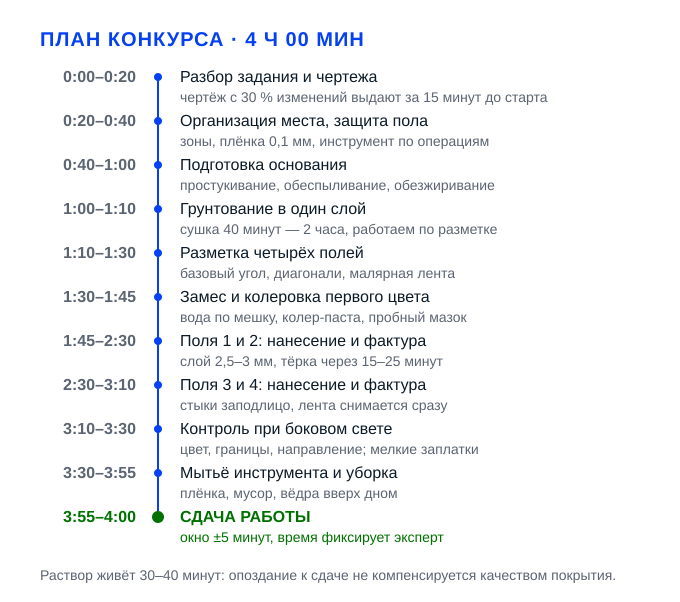
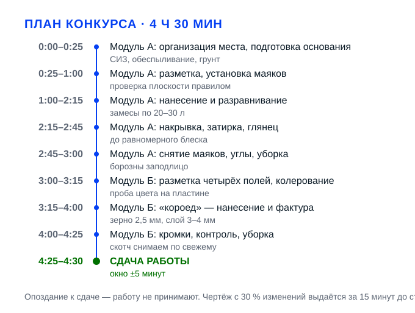
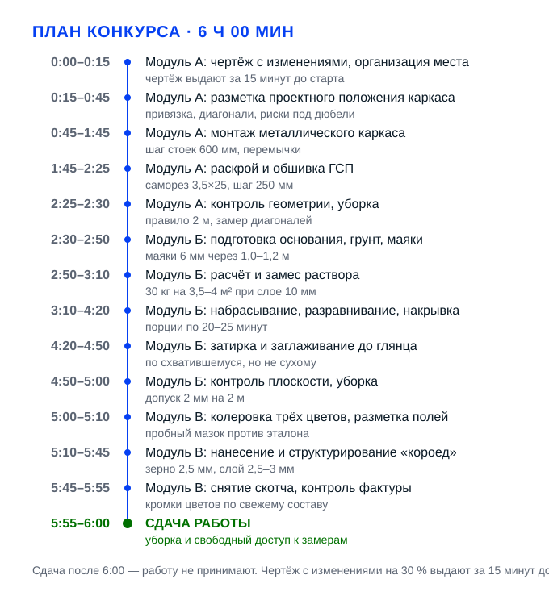

Сухое строительство и штукатурные работы (Р,О)
Задания ниже — официальные файлы «Абилимпикс» (источник: abilympics-russia.ru), разложенные по категориям. Решения написаны по тексту задания, регламенту и критериям оценки; в них указано, что именно проверяет эксперт.
Школьник
14–16 лет, базовый уровень заданияВыдержка из официального конкурсного задания: страницы, относящиеся к категории «Школьник» (стр. 5–9 источника).
Пошаговое решение
Этот модуль — про одну стену и четыре цвета. За четыре часа нужно разобрать чертёж, который выдадут за пятнадцать минут до старта и в котором тридцать процентов размеров изменены, разметить поверхность, приготовить декоративную штукатурку «короед» с зерном 2,5 мм, окрашенную колер-пастой в четыре оттенка, нанести её ровным слоем и сформировать фактуру пластиковой тёркой в заданном направлении. Оценивают не только результат, но и путь к нему: чистоту подготовки, аккуратность границ, организацию места и уборку в конце. Самое сложное здесь не нанесение, а тайминг: раствор живёт тридцать-сорок минут, а структурировать поле можно только в узком окне схватывания, поэтому весь модуль строится вокруг пауз, и график приходится держать в голове с первой минуты.

Задача 1. Разобрать задание, чертёж и спланировать четыре часаМодуль А · 40 минут
Первые сорок минут модуля не дают ни грамма покрытия, но именно они определяют, уложитесь ли вы в четыре часа. Здесь нужно прочитать задание, разобрать чертёж с изменениями, посчитать площадь и массу смеси, а затем разложить оставшееся время по операциям так, чтобы структурирование каждого поля попадало в свою паузу, а не накладывалось на замес следующего цвета. Ошибка в этом расчёте не видна сразу, она проявляется на третьем поле, когда время уже не вернуть.
Действие 1.1. Прочитать задание и выписать требования
Шаг 1.1.1
Берём распечатанное задание и читаем его целиком, от названия модуля до последнего абзаца, не перескакивая сразу к чертежу. Карандашом подчёркиваем всё, что можно измерить или проверить: тип смеси «короед», размер зерна 2,5 мм, четыре цвета на одной стене, обязательное структурирование пластиковой тёркой и полное время модуля — четыре часа. Отдельно обводим фразу о том, что 30 % изменений касаются размеров и что чертёж с изменениями выдадут за 15 минут до старта: от неё зависит вся арифметика и весь порядок работы.
Это не формальность: первый критерий в листе оценки — соответствие работы заданию и чертежу, и любая собственная трактовка вроде «сделаю три цвета, так быстрее» или «положу слой потолще, фактура будет выразительнее» читается как невыполненный модуль. Кроме того, четыре часа на четырёхцветное покрытие с паузами на схватывание — жёсткий бюджет, и считать его можно только тогда, когда весь объём требований уже выписан на бумагу.
Закройте задание и назовите по памяти зерно смеси, число цветов, инструмент для фактуры и время модуля. Если хотя бы один ответ звучит как «примерно», вернитесь к тексту: неопределённость в этих четырёх пунктах потом обойдётся дороже, чем пять минут, потраченные сейчас.
Самая частая ошибка — прочитать только первую строку «выполнить декоративную отделку» и сразу тянуться к ведру: тогда теряются два отдельных требования, структурирование пластиковой тёркой и равномерность цвета. Вторая — отложить чтение «на потом, пока сохнет грунт»: грунт сохнет до двух часов, и «потом» наступает в середине работы.
Эксперт в первые минуты обходит боксы и смотрит, лежит ли задание на виду, делаются ли на нём пометки, сверяется ли участник с чертежом перед каждым переходом. По этому видно, работает человек по документу или по памяти.
Шаг 1.1.2
На отдельном листе в столбик выписываем то, что потом придётся проверять у стены: четыре цвета и их расположение, направление структуры в каждом поле, зерно 2,5 мм, толщина слоя около 2,5–3 мм, требование равномерности и отсутствие видимых переходов цвета внутри поля. Туда же идут пункты, которые к стене не относятся, но оцениваются: организация рабочего места, чистота инструмента после работы, соблюдение времени. Лист крепим малярной лентой к стойке на уровне глаз, чтобы не искать его в кармане испачканными руками.
Чек-лист нужен не для красоты: на четвёртом часу, когда руки в растворе, а тёрка уже отработала три поля, память подводит именно в мелочах — забывается направление фактуры в последнем поле или то, что границу надо было вести по вертикали, а не по горизонтали. Один взгляд на лист стоит двух секунд, а исправление перепутанного направления — это переделка поля и потеря двадцати минут из четырёх часов.
В листе не больше восьми-девяти строк, и каждая начинается с проверяемого признака, а не с общего слова: не «качество», а «фактура читается при боковом свете». Проверьте, что по этому листу вы можете объяснить работу другому человеку, не открывая задание.
Ошибка — переписать в лист половину задания целиком: такой список не читается в работе и превращается в макулатуру. Обратная ошибка — держать всё в голове и на разметке перепутать, какое поле идёт вторым, а какое четвёртым.
Эксперт замечает, есть ли у участника рабочий эскиз или список: это признак планирования, которое входит в критерий организации работы. Для него это ещё и способ понять, насколько участник владеет заданием.
Шаг 1.1.3
Если в чертеже или в задании остаётся место для двух толкований — например, неясно, считается ли границей цвета линия примыкания или ось линии на чертеже, — подходим к эксперту до старта и спрашиваем коротко и конкретно. Формулировка должна звучать так: «граница между вторым и третьим полем идёт по осевой линии или по нижней кромке, как на чертеже?» Один вопрос — один ответ, без пересказа всего задания и без оправданий.
Уточнение до старта — единственная законная возможность снять неопределённость: после старта эксперт отвечает только на вопросы по технике безопасности, а спорную границу он будет оценивать по чертежу, а не по вашему объяснению. При этом важно не превращать уточнение в попытку выторговать поблажку: вопрос по существу укрепляет позицию, просьба «а можно не четыре цвета» её разрушает.
После ответа вы можете одной фразой сформулировать правило и записать его в чек-лист. Если ответ снова допускает два прочтения, задайте второй вопрос с конкретным примером — до тех пор, пока правило не станет однозначным.
Молчать и решать самому: на оценке выяснится, что границу вы поняли иначе, и переделка пойдёт за счёт времени, которого уже нет. Вторая ошибка — спорить с экспертом и доказывать свою трактовку вместо того, чтобы спросить.
Эксперт оценивает и коммуникацию: точный вопрос по делу показывает, что участник понимает чертёж, а не угадывает. Кроме того, по формулировке вопроса видно, читал ли участник чертёж вообще.
Действие 1.2. Разобрать чертёж и пересчитать размеры
Шаг 1.2.1
Кладём чертёж перед собой и разбираем его по слоям: сначала общий контур стены и её габариты, потом разбивка на четыре поля, потом цвет каждого поля и, наконец, стрелки, показывающие направление структуры. Стрелка вдоль поля означает, что тёрку ведут вертикально или горизонтально, круглая стрелка — что фактуру формируют круговыми движениями. Читаем чертёж слева направо и сверху вниз, как читают план, и сразу называем вслух: «первое поле — светлое, структура вертикальная».
Чертёж — единственный документ, по которому оценивают соответствие расположения цветов и направления фактуры, и на нём эти вещи заданы отдельно: можно правильно подобрать цвет и правильно нанести, но перепутать направление, и поле будет считаться невыполненным. Разбор по слоям нужен потому, что на чертеже всё нарисовано одновременно, а в работе эти слои идут строго по очереди.
Вы можете, не глядя на чертёж, перечислить четыре поля в порядке обхода и для каждого назвать цвет и направление структуры. Если порядок путается — нарисуйте схему от руки, это занимает три минуты и запоминается лучше, чем чтение.
Смотреть только на цветовые пятна и пропустить стрелки направления: тогда все четыре поля будут структурированы одинаково «как удобно», а по чертежу это ошибка в двух полях из четырёх. Вторая ошибка — прочитать чертёж один раз и больше к нему не возвращаться.
Эксперт на оценке кладёт работу рядом с чертежом и сравнивает границы и направления; на промежуточных обходах он смотрит, сверяется ли участник с чертежом во время работы.
Шаг 1.2.2
За 15 минут до старта получаем чертёж с изменениями и первым делом сравниваем его с тем, что разбирали: находим, какие размеры отличаются. Дальше пересчитываем площадь каждого поля по новым числам, а не по памяти: длину умножаем на высоту, складываем четыре значения и получаем общую площадь. Если стена, например, 3,2 м на 2,4 м, это 7,68 квадратного метра, и при расходе 2,5–3,2 кг на квадратный метр понадобится от 19 до 25 кг смеси — почти целый мешок на 25 кг, и это надо знать до первого замеса.
Тридцать процентов изменений касаются именно размеров, и даются они поздно специально: так проверяется, умеет ли участник считать по факту, а не по заготовленному плану. Ошибка в площади на глаз даёт две неприятности сразу: не хватает смеси в конце, когда взять её негде, или остаётся лишняя, которую уже некуда деть, а главное — уезжает весь график, потому что площадь и время нанесения связаны напрямую.
Пересчёт сходится двумя способами: по площади полей и по площади всей стены минус неокрашиваемые участки. Расхождение больше 0,2 квадратного метра означает арифметическую ошибку — пересчитайте на бумаге, а не в голове.
Считать по размерам из первого чертежа: тогда на четвёртом поле заканчивается раствор, а до сдачи остаётся двадцать минут. Вторая ошибка — округлять в меньшую сторону «примерно девять квадратов»: в расчёте материала округлять нужно всегда вверх.
Эксперт видит расчёт на бумаге и то, как участник отреагировал на изменение размеров: пересчитал или продолжил по старому плану. Если расчёт сделан заранее, а размеры изменились, это видно по цифрам на листе.
Шаг 1.2.3
На листе формата А4 рисуем упрощённую схему стены, без соблюдения точных пропорций, но с реальными размерами на полях: ширина и высота стены, положение каждой границы от левого угла, цвет поля и стрелка направления. Схему нумеруем так же, как собираетесь работать: 1, 2, 3, 4 в порядке обхода. Лист кладём рядом с чек-листом и держим на виду до конца модуля, а не убираем в сумку «чтобы не испачкать».
Эскиз переводит чертёж в рабочий язык: на чертеже размеры проставлены от осей, а вам нужно знать, сколько сантиметров откладывать рулеткой от угла. Кроме того, эскиз фиксирует порядок обхода, а порядок — это время: если менять его на ходу, придётся возвращаться к уже структурированному полю и подмазывать границу, что почти всегда видно.
По эскизу можно, не глядя на чертёж, отложить любую границу: на нём есть число сантиметров от базового угла для каждой линии. Проверьте, что номера полей на эскизе совпадают с номерами, которые вы будете писать на стене.
Рисовать схему «в голове» и держать размеры в памяти: на разметке они смешиваются, и одна граница уезжает на пять-семь сантиметров — этого достаточно, чтобы пропорции работы перестали совпадать с чертежом.
Эскиз с размерами — самый убедительный признак того, что участник разобрался в задании; эксперт часто просит показать его при разборе спорных моментов.
Действие 1.3. Посчитать материал и время
Шаг 1.3.1
Считаем не только общую массу, но и раскладку по цветам: на каждый цвет нужна своя порция, и мешать её лучше отдельно, чтобы не ловить оттенок повторным колерованием. При площади около 7,7 квадратного метра и расходе 2,5–3,2 кг на метр выходит 19–25 кг, то есть четыре порции по 5–6 кг — как раз по одной на цвет с небольшим запасом. Воду считаем от массы сухой смеси по инструкции на мешке: обычно это 0,20–0,22 литра на килограмм, то есть около 1,1–1,3 литра на порцию в 5,5 кг.
Расход — не справочная цифра, а рабочий инструмент: от него зависит, сколько раз вы подойдёте к ведру с миксером, а каждый замес — это пять-семь минут и риск разнотона, если пропорции каждый раз берутся «на глаз». Запас в пять-семь процентов нужен на потери: часть раствора остаётся на стенках ведра, часть снимается с тёрки.
Сумма порций совпадает с общей массой плюс запас, а количество воды для каждой порции записано числом, а не словами «до нужной консистенции». Проверьте, что мерная ёмкость, которой вы будете отмерять воду, имеет цену деления не крупнее 0,5 литра.
Мешать всё сразу в одном ведре на 25 кг: гипсовая смесь живёт 30–40 минут, и к третьему полю раствор в ведре уже не структурируется, а рвётся под тёркой. Вторая ошибка — лить воду «по чуть-чуть», добиваясь удобной густоты: при этом нарушается соотношение воды и смеси, и покрытие теряет прочность.
Эксперт смотрит, есть ли у участника расчёт и мерная посуда: работа «на глаз» с сухими смесями почти всегда даёт либо разнотон, либо слабую фактуру. Он также смотрит, не остаётся ли лишней смеси в конце: это признак ошибки в расчёте.
Шаг 1.3.2
Раскладываем 240 минут по операциям с запасом на переделку: 20 минут на изучение задания и пересчёт, 20 на организацию места и защиту, 20 на подготовку основания, 10 на грунтование, 20 на разметку, 15 на первый замес, 45 на первые два поля, 40 на третье и четвёртое, 20 на контроль и исправления и 25 на уборку. В сумме получается 235 минут, и остаток в пять минут — это и есть ваше окно на сдачу.
График нужен затем, чтобы структурирование не наезжало на замес: тёрка требует определённой стадии схватывания, и если в этот момент вы стоите у ведра с миксером, поле «перестоит» и фактура не получится. Кроме того, уборка в этом модуле — отдельное требование задания, и время на неё надо отложить заранее, а не выкраивать из последнего поля.
Часы на стене или таймер на телефоне выставлены на старт, и в графике есть контрольные точки: к 60-й минуте основание загрунтовано, к 90-й разметка закончена, к 190-й нанесены все четыре поля. Если к контрольной точке вы опаздываете больше чем на десять минут, сокращайте декор, а не уборку.
Планировать «успею, там работы на час»: без графика первые два поля съедают половину времени, а на четвёртое остаётся двадцать минут, и его наносят наспех, с пропусками и рваной фактурой. В результате к четвёртому полю остаётся двадцать минут, и работа сдаётся с недоделками.
Эксперт по ходу конкурса отмечает, как участник держит темп: ровная работа без рывков в конце читается как управление временем, а суета на последнем поле — как его отсутствие.
Действие 1.4. Определить порядок полей
Шаг 1.4.1
Определяем последовательность обхода по двум правилам: начинаем с поля, которое дальше всего от входа и от зоны замеса, и внутри очереди идём от светлого к тёмному. Светлое поле наносят первым, потому что тёмный раствор, попавший на светлую границу, виден сразу, а светлый на тёмном почти незаметен и легко снимается. Двигаемся так, чтобы не переступать через свеженанесённое покрытие: сначала верхние поля, потом нижние, если чертёж это позволяет.
Порядок — это защита от двух вещей: оттоптанных краёв и подтёков цвета. Если начать с тёмного, любая крошка светлого раствора, упавшая с тёрки на тёмное поле, останется светлым пятном, а снимать её придётся ножом, оставляя царапину. Светлое поле первым даёт возможность стереть случайный мазок влажной тряпкой, пока он ещё не схватился.
Порядок записан на эскизе номерами, и для каждого перехода понятно, где вы стоите и куда кладёте инструмент, чтобы не опираться на готовое поле. Проверьте: ни в одном переходе вам не нужно тянуться через уже структурированную поверхность.
Идти по чертежу слева направо, не думая о том, где вы стоите: тогда на третьем поле вы обопрётесь ладонью о второе и оставите вмятину, которую уже не исправить без переделки. Вмятина на фактуре не разглаживается: слой уже держит форму, и тёрка только смазывает её.
Эксперт замечает порядок обхода и то, остаются ли на готовых полях следы рук и инструмента; отпечаток на фактуре виден при боковом свете сразу. Отдельно он отмечает, не осталось ли на готовых полях следов обуви и рук.
Шаг 1.4.2
Готовим четыре небольших карточки или четыре подписанные полоски бумаги, на каждой — номер поля, название цвета и дозировка колер-пасты, которую вы подобрали. Карточки раскладываем в том порядке, в котором пойдут поля, и крепим рядом с рабочим местом, а не на ведре, потому что ведро моется и переставляется. Если колер-паста идёт в баночке с делениями, дозировку пишем в миллилитрах, а не «на глаз до оттенка».
Разнотон между полями одного цвета — самая обидная потеря в этом модуле: сама работа сделана, фактура есть, а покрытие оценивается как неравномерное, потому что цвет «гуляет». Карточка с дозировкой превращает подбор цвета из творчества в повторяемую операцию: второй раз вы отмерите столько же и получите тот же оттенок.
На карточке есть число, а не описание, и это число можно отмерить имеющимся инструментом. Проверьте, что все четыре карточки лежат в порядке обхода и не перепутаны местами. Отметьте на карточках, что дозировка проверена пробным мазком, а не взята из головы.
Колеровать «до похожего оттенка» на каждом замесе: глаз плохо сравнивает цвет по памяти, и к четвёртому полю разница в полтона становится заметной на стыке. Вторая ошибка — записать дозировку на самом ведре, которое потом моется.
Одинаковость цвета эксперт проверяет на границах полей и на расстоянии двух-трёх метров: там разнотон виден отчётливо, даже если вблизи кажется, что всё ровно.
Задача 2. Организовать рабочее место и подготовить основаниеМодуль А · 50 минут
Рабочее место в этом модуле оценивают отдельно, и оно же определяет, сколько времени вы потеряете. Задача — развести зоны так, чтобы к стене не подходили с ведром, защитить пол и примыкания, собрать и проверить инструмент, а затем подготовить основание. Пыль, рыхлые участки и незагрунтованная поверхность портят фактуру быстрее, чем любая ошибка в нанесении, причём исправить это уже нельзя: декоративный слой повторяет то, что под ним.
Действие 2.1. Развести зоны и защитить поверхности
Шаг 2.1.1
Делим площадку перед стеной на четыре зоны и закрепляем их за операциями: у стены — только инструмент для нанесения, шпатель и тёрка на подставке; в двух шагах — зона замеса с ведром, миксером и мешками; сбоку — стол или ящик для мелкого инструмента, рулетки, ленты и карточек; у выхода — мешок для мусора и ветошь. Ведро с раствором не ставим под стеной: подойти к нему с полным шпателем через свежее поле невозможно, не задев его.
Организация рабочего места — отдельный критерий, и оценивается он не по красоте, а по признакам: свободный подход к стене, инструмент под рукой, ничего лишнего под ногами. Кроме того, зона замеса у стены — это пыль от смеси на свежем покрытии и риск опрокинуть ведро, отступая назад с полной тёркой.
Пройдите от зоны замеса к любому участку стены: путь свободен, вы не переступаете через вёдра, провода и мешки. Инструмент, который нужен на стене, лежит в пределах шага и не на полу. Проверьте также, что до розеток и проходов остаётся свободный путь шириной не меньше метра.
Свалить всё в кучу у стены: тогда на первом же поле вы наступите на шпатель, а ведро окажется в зоне падения капель. Вторая ошибка — держать мешки рядом со стеной и поднимать их над покрытием, когда понадобится добавка.
Эксперт обходит боксы в начале и в середине работы: смотрит на подход к стене, на расположение ведра и на то, лежит ли инструмент на полу. Ему важно, чтобы участник не переставлял ведро к стене в процессе.
Шаг 2.1.2
Застилаем пол перед стеной плёнкой толщиной 0,1 мм с нахлёстом на 30–40 сантиметров, края фиксируем малярной лентой, а не скотчем: скотч оставляет клей на покрытии пола. Примыкания стены к полу, подоконнику и углам закрываем той же плёнкой с загибом вверх на 10–15 сантиметров. Если рядом стоит оборудование или стойка, накрываем и их: брызги от миксера летят на два-три метра.
Плёнка — это не только чистота: упавший на пол раствор скользит, а падение с ведром в руках на конкурсе означает травму и остановку работы. Защита примыканий экономит время на финише, потому что снять плёнку за минуту проще, чем отскабливать схватившийся раствор от плинтуса.
Плёнка лежит без складок на пути движения, края приклеены по всей длине, примыкания закрыты с загибом. Проверьте рукой: плёнка не сдвигается, если потянуть её в сторону. Отдельно проверьте, что плёнка не заходит на стену выше пятнадцати сантиметров: иначе она закроет нижнюю границу поля.
Застелить только пятно под стеной: брызги от миксера и капли с тёрки уходят дальше, и к концу работы пол вокруг оказывается в точках. Вторая ошибка — крепить плёнку скотчем и потом отдирать его вместе с краской.
Защита поверхностей входит в критерий организации и безопасности: эксперт отмечает, закрыт ли пол и примыкания до начала работ. Отдельно он смотрит, закрыта ли зона под стойкой и у примыканий.
Действие 2.2. Собрать и проверить инструмент
Шаг 2.2.1
Раскладываем инструмент по операциям: металлический шпатель шириной 600 мм для нанесения и разравнивания, кельма или шпатель на 250–300 мм для набора раствора из ведра, пластиковая тёрка 240 на 140 мм для структурирования, миксер с насадкой, ведро на 20 литров, мерная ёмкость, весы, рулетка, угольник, отбивочный шнур или лазерный уровень, малярная лента, ветошь. Каждый предмет кладём на своё место и проверяем, что он сухой и чистый.
Ширина шпателя не случайна: шестисотмиллиметровым полотном слой наносится за два-три прохода и разравнивается ровнее, чем коротким, а коротким удобно только набирать раствор. Тёрка нужна именно пластиковая: металлическая не формирует «короед», а срезает его, оставляя гладкие полосы.
Пройдите по списку операций и для каждой назовите инструмент: нанесение, разравнивание, структурирование, разметка, уборка. Если для какой-то операции инструмента нет, найдите его до старта, а не в процессе.
Наносить коротким шпателем на 250 мм: слой получается с полосами от краёв полотна, и на фактуре эти полосы читаются как брак. Вторая ошибка — взять металлическую тёрку «она прочнее»: структура получится срезанной, а не выдавленной.
Эксперт смотрит на соответствие инструмента операции: пластиковая тёрка и широкий шпатель в руках — признак того, что участник знает технологию, а не подбирает инструмент по ходу.
Шаг 2.2.2
Проверяем миксер на холостом ходу: насадка садится до упора, не бьёт, обороты регулируются в диапазоне 600–800 в минуту. Весы ставим на ровную поверхность, обнуляем с пустым ведром и проверяем на контрольном грузе — подойдёт литровая бутылка воды, её масса около килограмма. Мерную ёмкость проверяем наливом: наливаете литр и смотрите, совпадает ли отметка.
Смесь на гипсовой основе схватывается быстро, и миксер, который «начинает с рывка» или теряет обороты под нагрузкой, даёт комки, а они потом выходят на поверхность зернистыми буграми. Весы нужны потому, что колер-паста дозируется от массы смеси: ошибка в сто граммов на порцию — это уже другой оттенок.
Миксер запускается плавно, насадка не вибрирует, вода отмеряется до совпадения с меткой. Весы показывают ноль с пустым ведром и килограмм с бутылкой. Проверьте насадку под нагрузкой: опустите её в ведро с водой и включите — биения на валу не должно быть слышно.
Мешать на максимальных оборотах «чтобы быстрее»: в раствор затягивается воздух, и на поверхности появляются мелкие раковины, которые после структурирования читаются как проколы. Вторая ошибка — не проверить весы и мешать «по объёму».
Эксперт обращает внимание на то, как готовится раствор: работа с весами и мерной ёмкостью говорит о понимании, что сухая смесь — это рецепт, а не «примерно».
Шаг 2.2.3
Протираем весь инструмент насухо и убираем с него следы старого раствора: на шпателе и тёрке не должно быть засохших крупинок, потому что каждая из них оставляет борозду в свежем слое. Тёрку дополнительно проверяем на заусенцы по кромке — проведите пальцем вдоль ребра, неровность чувствуется сразу. Ведро моем и вытираем, чтобы остатки старой смеси не ускоряли схватывание новой порции.
Крупинка старого раствора на полотне шпателя — это царапина на всю длину прохода, а на фактуре такая борозда видна как шрам. Остатки в ведре работают как затравка: свежая порция начинает схватываться раньше срока, и последние двадцать минут работать становится неудобно.
Проведите ладонью по полотну шпателя и по кромке тёрки: поверхность гладкая, крупинок нет. Ведро сухое, на дне нет налёта. Осмотрите и ручки инструмента: на них не должно быть засохшего раствора, иначе перчатка будет скользить.
Начать работу инструментом, который «и так чистый»: на первый взгляд чистый шпатель после прошлого раза имеет тонкий налёт, и он срывается в раствор кусочками. Вторая ошибка — отмывать инструмент только в конце, когда раствор уже схватился.
Чистота инструмента — часть критерия качества: эксперт осматривает шпатель и тёрку до старта, и засохшие крупинки читает как неподготовленное рабочее место.
Действие 2.3. Подготовить основание
Шаг 2.3.1
Осматриваем стену по всей площади: проводим ладонью, чтобы найти бугры и впадины, простукиваем рукояткой шпателя на слух — глухой звук означает пустоту под штукатуркой. Мелкие раковины и трещины шириной до миллиметра расчищаем и заделываем ремонтным составом, а крупные отслоения обводим карандашом и показываем эксперту до старта. Отдельно проверяем углы и примыкания: там чаще всего сколы и рыхлый раствор.
Декоративная штукатурка наносится тонким слоем, около зерна, и она не выравнивает основание — она его повторяет. Бугор в три миллиметра на такой толщине виден как светлое пятно на фактуре, а пустота под слоем через сутки даёт отслоение, которое на оценке читается как брак сцепления.
По всей площади звук при простукивании плотный, раковины заделаны заподлицо, отслоений нет. Проверьте правилом или длинной линейкой: отклонение плоскости не должно превышать двух-трёх миллиметров на два метра.
Начинать сразу с грунта, не простукав стену: под плёнкой грунта пустота не видна, и о ней вы узнаете, когда покрытие начнёт отходить. Вторая ошибка — заделывать крупные раковины густым раствором в один слой, он даёт усадку и трещину.
Эксперт может простучать стену вместе с участником до старта: важно, чтобы дефекты основания были зафиксированы до начала работ, а не после. Если дефект найден после старта, претензию он уже не примет.
Шаг 2.3.2
Обеспыливаем поверхность: сначала сухой щёткой или жёсткой ветошью снимаем налёт, затем проходим влажной тряпкой, отжимая её так, чтобы вода не текла по стене. Пыль в углублениях и на верхней кромке снимаем кистью. Если на стене есть масляные пятна, промываем их обезжиривателем и даём высохнуть полностью, потому что на жирном участке раствор не схватится с основанием.
Пыль — это разделительный слой: раствор ложится на неё, а не на стену, и держится только за счёт собственного сцепления. На оценке такое покрытие выглядит нормально, но при простукивании даёт глухой звук, а при лёгком нажатии тёркой может отойти пластом. Обезжиривание нужно по той же причине: жир не даёт ни грунту, ни раствору связаться с основанием.
Проведите по стене белой салфеткой: на ней не должно оставаться серого следа. На ощупь поверхность шероховатая и сухая, без жирного блеска. Проверьте также верхнюю кромку стены и угол за трубой: там пыль остаётся чаще всего и потом срывается вниз на свежий слой.
Пропустить обеспыливание, считая, что грунт «всё свяжет»: грунт связывает пыль только частично, сцепление падает, и при простукивании покрытие отзывается глухо. Вторая ошибка — мыть стену мокрой тряпкой и сразу грунтовать, не дав высохнуть: вода под грунтом даёт пузыри, которые потом видны на фактуре как мелкие кратеры.
Эксперт смотрит на подготовку поверхности как на отдельную операцию: чистая и загрунтованная стена — обязательное условие для критерия сцепления и равномерности.
Шаг 2.3.3
Проверяем условия: температура воздуха и основания должна быть от 15 до 25 градусов, влажность основания — не выше 8 процентов. Влажность определяем прибором, а если его нет — косвенно: наклеиваем на стену кусок полиэтилена 20 на 20 сантиметров, прижимаем по краям лентой и через несколько часов смотрим, появился ли конденсат под плёнкой. Влажную стену не грунтуем и не штукатурим: даём просохнуть, а время используем на разметку.
Влажное основание — главная причина того, что покрытие «плывёт»: вода из стены поднимается в свежий слой и разжижает его у основания, поэтому фактура не держится, а сползает под тёркой. Температурный диапазон важен по той же логике: на холоде гипсовая смесь схватывается медленно, и структурировать её приходится слишком поздно, когда она уже не выдавливается.
Прибор показывает влажность до 8 процентов, температура в диапазоне, конденсата под контрольной плёнкой нет. Если проверяете косвенно, дайте плёнке повисеть не меньше четырёх часов и осмотрите её изнутри.
Грунтовать влажную стену «для сцепления»: грунт запирает влагу внутри, и через час она выходит пузырями под слоем штукатурки. Вторая ошибка — работать при открытом окне зимой, когда у стены температура ниже десяти градусов.
Эксперт может поинтересоваться условиями работы и тем, чем измерялась влажность: ответ по делу показывает технологическую грамотность. Ответ «на ощупь сухая» он обычно не принимает.
Действие 2.4. Загрунтовать и дать высохнуть
Шаг 2.4.1
Наносим грунт глубокого проникновения в один слой малярным валиком со средним ворсом, а в углах и у примыканий — кистью. Двигаемся сверху вниз полосами с нахлёстом в 10 сантиметров, не оставляя пропусков и не собирая лужи: слой должен блестеть, но не стекать. Если основание рыхлое и впитывает мгновенно, через час наносим второй слой, не дожидаясь полного высыхания первого.
Грунт выравнивает впитывание: без него сухая смесь отдаёт воду в стену неравномерно, и на одном участке раствор схватывается раньше, чем на другом. Именно из-за этого на поверхности появляются пятна, где фактура сформировалась хуже, а цвет выглядит светлее. Второй слой нужен на пористых основаниях, иначе первый уходит в стену целиком.
Через час после нанесения поверхность на ощупь не липнет, но и не блестит мокрым блеском, пропусков нет — проверьте, приложив ладонь к стене в нескольких местах. Впитывание ровное: на всей площади одинаковый матовый вид.
Грунтовать «чуть-чуть, для галочки» редкими мазками: тогда впитывание остаётся неравномерным, и покрытие получается пятнистым. Вторая ошибка — налить грунт так, что он течёт по стене: лужи дают гладкую плёнку, на которой раствор держится хуже, чем на шероховатой стене.
Равномерность грунтования эксперт оценивает по виду поверхности перед нанесением: пятна и потёки читаются как нарушение технологии. Отдельно он смотрит углы, где грунт чаще всего наносят небрежно.
Шаг 2.4.2
Даём грунту высохнуть — по инструкции на канистре это обычно от сорока минут до двух часов, и именно поэтому грунтование делают сразу после подготовки основания, а разметку и расчёт материалов — пока он сохнет. До полного высыхания штукатурку не наносим: проверяем не на ощупь сверху, а в глубине, приложив к стене сухую салфетку и посмотрев, не осталось ли на ней влажного следа.
Свежий грунт под слоем штукатурки ведёт себя как вода: он разжижает нижнюю часть слоя, и при структурировании тёрка начинает «тащить» раствор за собой. Кроме того, невысохший грунт даёт пузыри, которые после схватывания остаются мелкими кратерами — их видно при боковом свете, и они не исправляются без переделки участка.
Салфетка, приложенная к стене на минуту, остаётся сухой, цвет поверхности ровный, без тёмных влажных пятен. Только после этого приступаем к нанесению, а разметку к этому моменту уже заканчиваем. Проверьте и то, что на поверхности не осталось блестящих участков: они означают, что грунт лёг слишком толстым слоем.
Наносить через полчаса «пока сохнет, начну с угла»: именно на таких участках потом появляются полосы, где фактура смазана. Вторая ошибка — сушить грунт феном или тепловой пушкой: горячий воздух сушит поверхность, оставляя влагу внутри.
Эксперт следит за соблюдением пауз: работа по невысохшему грунту фиксируется как нарушение технологической последовательности. Если грунт липнет, он может предложить подождать, но время уже будет потеряно.
Задача 3. Выполнить разметку четырёх цветовых полейМодуль А · 20 минут
Разметка задаёт всё остальное: положение границ, пропорции полей и направление структуры. На стене с четырьмя цветами ошибка в сантиметр на одной линии видна сразу, потому что она ломает симметрию всей композиции, и переделывать приходится не линию, а два поля. Здесь важны базовый угол, проверенные диагонали и лента, наклеенная строго по карандашной линии, а не «примерно рядом» с ней.
Действие 3.1. Задать базовую геометрию
Шаг 3.1.1
Находим самый ровный угол стены и берём его за базовую точку: от него будем откладывать все размеры. Лазерный уровень ставим на штатив или подставку в метре от стены и выставляем горизонтальную плоскость, проверяя, что луч проходит по всей длине стены и не уходит вверх на другом конце. Если лазера нет, горизонталь отбиваем гидроуровнем по двум точкам и соединяем шнуром.
Все размеры на чертеже привязаны к осям, а не к фактическим углам комнаты, и если взять за базу кривой угол, вся разбивка повернётся на несколько градусов. На четырёхцветной композиции такой перекос читается как несовпадение с чертежом, даже когда каждая линия сама по себе ровная.
Луч ложится на стену на одной высоте по всей длине: проверьте рулеткой от пола в начале, середине и конце стены, расхождение не должно превышать двух миллиметров. Если больше — уровень стоит с наклоном, переставьте его.
Выставлять уровень «на глазок» по пузырьку на самом инструменте, не проверяя луч на стене: ошибка в полградуса даёт на трёх метрах перекос почти в три сантиметра. Вторая ошибка — брать за базу угол, который на вид ровный, но фактически завален.
Эксперт проверяет разметку выборочно, рулеткой от угла: ему важно, чтобы линии шли по чертежу, а не «около» него. Он также смотрит, стоит ли уровень на штативе, а не на весу в руке.
Шаг 3.1.2
Откладываем рулеткой расстояния от базового угла до каждой границы и ставим карандашом короткие засечки — по две на каждую линию, вверху и внизу. Между засечками натягиваем отбивочный шнур, прижимаем концы и щёлкаем: получается ровная линия по всей высоте. Вертикали отбиваем отвесом или лазером, горизонтали — по уровню, и каждую линию сразу подписываем номером поля, чтобы не перепутать при нанесении.
Две засечки вместо одной нужны потому, что по одной точке линию не провести: карандаш уйдёт в сторону на сантиметр и больше. Шнур даёт линию, которую видно сквозь малярную ленту и по которой можно проверить границу после нанесения, а подпись номера избавляет от путаницы, когда на стене уже пять линий.
Каждая линия проведена от засечки до засечки, без изломов, и её видно по всей длине. Проверьте расстояния между соседними линиями рулеткой вверху и внизу: они должны совпадать с чертежом и между собой.
Отбивать линии по одной засечке и «на глаз»: линия уходит, и поле получается трапецией вместо прямоугольника. Вторая ошибка — рисовать линии мягким карандашом с сильным нажимом: графит потом проступает через тонкий слой штукатурки.
Чистота и точность разметки видны сразу: линии должны быть тонкими, ровными и читаемыми, а не набором штрихов. Ему важно, чтобы линии были видны до самого низа стены, а не только в верхней части.
Шаг 3.1.3
Проверяем разбивку по диагоналям: измеряем расстояние от базового угла до противоположного по каждой из четырёх границ и сравниваем пары. У прямоугольника диагонали равны, расхождение до двух миллиметров допустимо, больше — значит, одна из линий сдвинута. Дополнительно проверяем углы угольником 30 на 50 сантиметров в двух-трёх местах и смотрим, что вертикальные линии параллельны друг другу по всей высоте.
Диагонали ловят ошибку, которую не видно глазом: если одна вертикаль сдвинута на сантиметр, линии кажутся ровными, а поле — почти прямоугольным, но диагонали сразу покажут разницу в полтора сантиметра. Исправить разметку до нанесения — это минута, после нанесения — это переделка поля.
Диагонали пар сходятся с точностью до двух миллиметров, угольник прилегает без просвета, расстояние между вертикалями одинаково вверху и внизу. Все числа записаны на эскизе рядом с номерами полей. Запишите измеренные диагонали на эскизе: по ним через час можно проверить, не сдвинулась ли разметка от случайного удара.
Пропустить проверку диагоналей, потому что «и так видно»: на четырёхцветной стене перекошенное поле выдаёт себя именно на стыке с соседним. Вторая ошибка — проверять только одну диагональ, тогда ошибка просто меняет знак.
Эксперт может измерить диагонали сам: это быстрый способ понять, размечал участник или «рисовал на глаз». Расхождение диагоналей больше пяти миллиметров он считает ошибкой разметки.
Действие 3.2. Перенести размеры полей и направления
Шаг 3.2.1
Переносим на стену размеры каждого поля по чертежу с изменениями: ширину и высоту откладываем от базовых линий, а не от соседнего поля, чтобы ошибка не накапливалась. Каждое поле обводим по контуру и подписываем: номер, цвет и, если нужно, дозировку колер-пасты. Если поле имеет сложную форму, например Г-образную, разбиваем его на два прямоугольника и размечаем каждый отдельно.
Отсчёт от базовой линии, а не от предыдущего поля — правило, которое экономит всю работу: при последовательном отсчёте каждая следующая граница наследует ошибку предыдущей, и к четвёртому полю она складывается в сантиметры. Подпись цвета прямо на стене нужна потому, что к моменту нанесения третьего поля вы будете помнить порядок приблизительно.
Сумма ширин полей по горизонтали равна общей ширине стены, сумма высот по вертикали — общей высоте. Проверьте это на калькуляторе или на бумаге: расхождение означает, что один размер взят не от той базы.
Откладывать размеры цепочкой от поля к полю: ошибка в пять миллиметров на первом переходе превращается в два сантиметра на последнем, и последнее поле приходится подрезать по месту, ломая пропорции. На стыке это видно как сдвиг границы на пару сантиметров относительно соседней линии.
Соответствие разбивки чертежу эксперт проверяет рулеткой в двух-трёх точках, обычно на границах разных цветов. Отдельно он смотрит, совпадают ли границы с линиями разметки, а не с краем ленты.
Шаг 3.2.2
В каждом поле рисуем карандашом стрелку, показывающую, как пойдёт тёрка: вертикальная стрелка — движения снизу вверх, горизонтальная — слева направо, круглая — круговыми движениями от центра. Стрелку ставим в верхнем левом углу поля, там, где она не закроется раствором до самого конца работы. Если направление в соседних полях разное, дополнительно помечаем границу короткой поперечной чёрточкой, чтобы в процессе не перепутать.
Направление структуры — отдельное требование чертежа, и оценивается оно наравне с цветом: поле, структурированное поперёк, считается невыполненным, даже если фактура идеальна. Стрелка на стене работает лучше записи на листе: она находится там, где принимается решение, и её видно в момент, когда рука уже с тёркой.
На каждом поле есть стрелка, и она совпадает со стрелкой на эскизе. Пройдите вдоль стены и назовите направление для каждого поля, сверяясь только со стеной: если получается, разметка полная. Проверьте, что стрелки не попали на линии разметки: там их закроет малярная лента, и в работе вы их не увидите.
Полагаться на память и структурировать все поля одинаково «как удобнее»: это самая частая потеря баллов в этом модуле, потому что фактура получается красивой, но не той, что на чертеже. В результате работа выглядит ровной, но не соответствует чертежу, и поле оценивается как невыполненное.
Эксперт смотрит на фактуру при боковом свете и сравнивает направление с чертежом: направление видно даже на расстоянии, потому что борозды ловят свет по-разному.
Шаг 3.2.3
Ставим в каждом поле крупный номер — цифру высотой 5–7 сантиметров, — и рядом с номером короткую запись цвета: например, «3 — тёмно-бежевый». Номера пишем мягким карандашом, чтобы они не проступали через слой, и ставим их в той части поля, которую будете наносить последней, тогда цифра не помешает на первом проходе. Порядок номеров должен совпадать с порядком, записанным на эскизе.
К третьему часу работы на стене остаётся два свободных поля и четыре выцветших подписи, и без крупных номеров легко начать не с того поля. Это не столько вопрос аккуратности, сколько времени: нанесение не того цвета означает, что исправлять придётся два поля вместо одного.
Номера видны с расстояния двух метров, не перекрывают линии разметки и совпадают с эскизом. Проверьте, что под каждым номером записан цвет, а не только цифра. Проверьте, что номера не попали в зону, которую закроет малярная лента, иначе они исчезнут вместе с ней.
Подписывать поля мелко, у самого пола: в работе вы не будете наклоняться, чтобы прочитать, и перепутаете порядок. Вторая ошибка — писать номера маркером: он проступает через слой штукатурки тёмным пятном.
Аккуратная нумерация и подписи — признак продуманной работы; эксперт отмечает такие детали как организацию процесса. По нему же он проверяет, в каком порядке участник вёл работу.
Действие 3.3. Защитить границы малярной лентой
Шаг 3.3.1
Наклеиваем малярную ленту точно по линии разметки, прижимая её пальцем или шпателем по всей длине: половина ширины ленты должна лежать на том поле, которое наносится вторым, а кромка — идти по карандашной линии. Ленту клеим на загрунтованную и высохшую поверхность, а не на пыль, иначе она отойдёт в самый неподходящий момент. В углах и на пересечениях линий ленту режем ножом и стыкуем внахлёст, чтобы не было щелей.
Лента защищает границу от наплыва раствора и даёт ровную кромку цвета: без неё граница получается волнистой, потому что шпатель всегда чуть выходит за линию. Прижим важен потому, что жидкий раствор затекает под плохо приклеенную ленту, и после её снятия остаётся язычок цвета, который уже не исправить без подмазки.
Кромка ленты идёт по карандашной линии без отклонений, лента прижата по всей длине и не отходит, если провести по ней пальцем. В углах стыки без щелей. Проверьте на длинном участке, что лента не натянута «струной»: натянутая лента отходит волной и пропускает раствор.
Клеить ленту «рядом с линией»: после снятия граница окажется на сантиметр в стороне, и вся разбивка поедет. Вторая ошибка — оставить ленту на схватившемся растворе: снимать её придётся с кусками покрытия.
Ровная кромка цвета — видимый признак качества; эксперт осматривает границы полей в первую очередь. Он также смотрит, нет ли под лентой пузырей: они оставляют наплывы по всей длине.
Шаг 3.3.2
Проходим вдоль каждой линии и проверяем ленту на просвет и на отлипание: подносим ладонь, проводим ребром шпателя по кромке, слегка подтягиваем ленту в сторону — она должна держаться, но не тянуть за собой грунт. Отдельно смотрим углы и места, где лента пересекает вертикальную линию: там чаще всего остаются щели шириной в миллиметр, в которые затекает раствор. Щели закрываем дополнительным кусочком ленты.
Миллиметровая щель кажется мелочью, но раствор под давлением шпателя заходит в неё и после снятия ленты оставляет тонкую полоску чужого цвета вдоль всей границы. Убрать её можно только ножом по схватившемуся покрытию, и след от ножа остаётся заметным.
Лента держится по всей длине, щелей в углах нет, кромка ровная. Проверьте самый длинный участок от начала до конца: если лента где-то «пузырится», переклейте этот участок. Проверьте углы отдельно: там лента чаще всего отходит при первом же проходе шпателя.
Проверять ленту только взглядом сверху: щель видна лишь при взгляде вдоль стены. Вторая ошибка — приклеить ленту на влажный грунт и надеяться, что схватится: она отойдёт при первом же проходе шпателя.
Качество проклейки границ определяет, будет ли работа выглядеть аккуратной; эксперт замечает подтёки под ленту сразу. Если лента отошла в процессе, подтёк он заметит на границе сразу.
Задача 4. Приготовить окрашенный раствор «короед» на четыре цветаМодуль А · 15 минут
Раствор — самая быстрая часть модуля и самая чувствительная: гипсовая смесь живёт тридцать-сорок минут, а цвет нужно повторить четыре раза без разнотона. Здесь всё решает дозировка: вода по инструкции на мешке, колер-паста по массе смеси, перемешивание до однородности и выдержка перед нанесением. Ошибка в консистенции видна не в ведре, а на тёрке, когда фактура начинает рваться или оплывать.
Действие 4.1. Замешать базовый состав
Шаг 4.1.1
Наливаем в чистое ведро воду комнатной температуры, отмеряя её мерной ёмкостью, а не на глаз: на порцию сухой смеси 5,5 кг при норме 0,20–0,22 литра на килограмм нужно 1,1–1,2 литра. Точную норму берём с мешка, потому что у разных производителей она отличается. Воду наливаем первой — так смесь не образует сухих комков на дне, которые потом трудно разбить.
Соотношение воды и сухой смеси задаёт и прочность, и поведение под тёркой: при избытке воды фактура «плывёт» и оседает, при недостатке раствор рвётся и не выдавливает борозды. Вода, налитая первой, — это технологический приём: сухая смесь всыпается в воду и сразу намокает равномерно, без комков на дне.
Объём воды совпадает с расчётом до 50 миллилитров, вода чистая, без песка и остатков старого раствора. Ведро стоит на ровной поверхности, чтобы удобно было мешать и не расплёскивать. Проверьте также, что на стенках ведра нет капель старого раствора: они ускоряют схватывание новой порции.
Лить воду «до густоты сметаны»: консистенция на глаз каждый раз разная, и два поля одного цвета получаются с разной фактурой. Вторая ошибка — использовать горячую воду «чтобы лучше размешалось»: она ускоряет схватывание, и раствор встаёт прямо в ведре.
Наличие мерной ёмкости и точный отсчёт воды эксперт отмечает как соблюдение технологии приготовления состава. Он также смотрит, не льётся ли вода мимо ведра: это признак спешки.
Шаг 4.1.2
Всыпаем сухую смесь в воду тонкой струёй, непрерывно помешивая миксером на низких оборотах — 600–800 в минуту. Смесь добавляем постепенно, за две-три порции, и только после того, как предыдущая порция намокла. После засыпки мешаем ещё две-три минуты, поднимая насадку к поверхности, чтобы захватить сухие частицы со стенок ведра, и соскабливая смесь со стенок шпателем.
Постепенная засыпка и низкие обороты нужны, чтобы не затянуть в раствор воздух: пузыри потом выходят на поверхность мелкими кратерами, которые при структурировании превращаются в проколы. Две-три минуты перемешивания — это время, за которое разбиваются все комки; недомешанный раствор даёт зернистые бугры под тёркой.
Масса однородная, без комков: проверьте, проведя шпателем по дну ведра — на полотне не должно оставаться сухих крупинок. На поверхности нет крупных пузырей, консистенция напоминает густую сметану. Проверьте ещё и на слух: при перемешивании не должно быть сухого шороха крупинок о стенки ведра.
Засыпать всю смесь сразу и включать миксер на полные обороты: образуются комки, которые не разбиваются, и они выходят на стену буграми. Вторая ошибка — мешать тридцать секунд и считать, что готово. Комки потом выходят на поверхность буграми, и снять их можно только шпателем, оставляя яму.
Однородность раствора эксперт видит по полотну шпателя при наборе: комки и крупинки заметны сразу. Отдельно он обращает внимание на комки: они означают, что смесь засыпали слишком быстро.
Шаг 4.1.3
Даём раствору постоять три-пять минут, чтобы прошла первичная реакция, а затем перемешиваем ещё раз в течение минуты без добавления воды. Если масса за это время загустела, разжижаем её строго по инструкции — обычно допускается добавить немного воды и перемешать, но не больше указанного на мешке количества. Сразу после второго перемешивания пускаем раствор в работу: дальше он только густеет.
Выдержка нужна для того, чтобы полимерные добавки и гипс успели набухнуть: без неё раствор кажется нормальным, но через десять минут на стене ведёт себя иначе, чем в ведре. Повторное перемешивание разбивает структуру, которая успела схватиться на стенках, и возвращает массе однородность.
После выдержки масса однородная, без отделившейся воды сверху и без плотного осадка на дне. При перемешивании не тянется комками, а течёт ровно. Проверьте, что на стенках ведра после второго перемешивания не осталось сухих полос: они означают, что масса размешана не полностью.
Пропустить выдержку и сразу наносить: раствор на стене начинает схватываться неравномерно, и фактура в разных местах получается разной глубины. Вторая ошибка — доливать воду при каждом перемешивании: пропорция уезжает, и покрытие теряет прочность.
Соблюдение паузы и повторное перемешивание эксперт может отследить по времени у ведра: работа без выдержки обычно выдаёт себя неровной фактурой. Отдельно он смотрит, не размешивают ли раствор повторно уже после того, как он начал схватываться.
Действие 4.2. Ввести колер-пасту и проверить цвет
Шаг 4.2.1
Отмеряем колер-пасту по массе или по объёму, начиная с меньшей дозировки: для пробного замеса берём небольшую порцию смеси, добавляем пасту по инструкции на упаковке и делаем мазок на куске гипсокартона или на незаметном участке стены. Мазок сушим феном на низкой температуре или ждём десять-пятнадцать минут и сравниваем с эталоном из чертежа. Дозировку записываем числом на карточке поля.
Цвет в ведре и цвет на стене — разные вещи: после высыхания покрытие светлеет на один-два тона, поэтому подбирать оттенок нужно по высохшему мазку, а не по мокрому раствору. Пробный мазок стоит пяти минут и спасает от разнотона, который на четырёх полях почти невозможно исправить.
Высохший мазок совпадает с цветом на чертеже при дневном свете и не уходит в другой оттенок при взгляде под углом. Дозировка на карточке записана числом и проверена повторным замесом. Проверьте дозировку повторным замесом небольшой порции: цвет должен совпасть с первым мазком без корректировки.
Подбирать цвет по мокрому раствору: после высыхания он окажется светлее, и придётся перекрашивать поле. Вторая ошибка — сыпать пасту «пока не станет похоже» без записи дозировки, тогда второй замес того же цвета не совпадёт с первым.
Соответствие цвета чертежу — прямой критерий оценки; эксперт сравнивает цвет при дневном свете, а не под лампой. Отдельно он смотрит, не подбирался ли цвет на глаз по мокрому раствору.
Шаг 4.2.2
Колер-пасту вводим двумя способами на выбор: либо размешиваем её в воде до засыпки смеси, либо добавляем в готовый раствор при перемешивании. Первый способ даёт более равномерный цвет, потому что паста расходится в воде, а не в густой массе. При втором способе пасту добавляем небольшими порциями при работающем миксере и мешаем не меньше двух минут после последней порции, соскабливая массу со стенок.
Паста — концентрированный пигмент, и если она попадает в раствор комком, вокруг него остаётся пятно насыщенного цвета, которое после нанесения читается как тёмное облако. Равномерность цвета — отдельное требование задания, и пятна от пигмента считаются дефектом наравне с пропусками.
Разрежьте массу шпателем до дна и посмотрите на срез: цвет должен быть одинаковым по всей глубине, без тёмных прожилок и светлых разводов. На полотне шпателя не остаётся крупинок пасты. Проверьте цвет и на стенках ведра, а не только в центре: там остаётся слой, по которому видно, размешан ли пигмент.
Выдавить пасту на дно ведра и начать мешать сверху: часть пигмента останется на дне и выйдет в последней порции, дав тёмный осадок в конце нанесения. Вторая ошибка — мешать минуту и считать цвет однородным.
Однородность цвета эксперт проверяет на уже нанесённом поле при боковом свете: пятна пигмента видны как тёмные разводы. Если пигмент размешан плохо, это видно на светлом цвете особенно отчётливо.
Шаг 4.2.3
Делаем контрольный мазок раствором на куске материала или на краю стены, разравниваем его шпателем до толщины слоя и структурируем тёркой так же, как будем структурировать поле. После высыхания смотрим три вещи: цвет, глубину и рисунок фактуры. Если фактура получается слишком мелкой или рваной, корректируем консистенцию следующего замеса, а не нажим на тёрку.
Пробный мазок проверяет не только цвет, но и поведение раствора: именно на нём видно, держит ли смесь борозду или оплывает. Это единственная возможность скорректировать консистенцию без риска для стены, потому что испорченное поле переделывать придётся целиком.
На высохшем мазке фактура читается, цвет совпадает с эталоном, толщина слоя соответствует зерну. Сравните мазок с чертежом на расстоянии метра, а не вплотную. Проверьте мазок и на нажим: проведите тёркой дважды по одному месту — фактура не должна смазываться в гладкое пятно.
Пропустить пробный мазок и сразу начать поле: если консистенция не та, выяснится это на середине поля, когда исправлять уже нечем. Вторая ошибка — судить о цвете по мокрому мазку. К этому моменту поле уже нанесено, и переделка займёт столько же времени, сколько всё поле.
Эксперт положительно отмечает наличие пробного мазка: это признак того, что участник контролирует результат, а не надеется на удачу. Отсутствие пробного мазка он отмечает как работу без контроля результата.
Действие 4.3. Проверить консистенцию и держать порции
Шаг 4.3.1
Проверяем консистенцию практическим способом: набираем раствор на шпатель и наклоняем полотно — масса должна сползать медленно, сплошной лентой, а не стекать струёй и не оставаться лежать куском. Второй признак — борозда: проведите по массе пальцем в перчатке, край борозды должен держаться, а не заплывать обратно за пару секунд. Если раствор стекает — он жидкий, если крошится при перемешивании — густой.
Консистенция определяет глубину фактуры: жидкий раствор оплывает под тёркой, и «короед» получается смазанным, а слишком густой не выдавливается и даёт рваные полосы с пропусками. Обе ошибки оцениваются как неровная фактура, хотя причина у них разная.
Раствор держится на шпателе, борозда от пальца не заплывает, при этом масса не крошится. Проверьте на небольшой порции: возьмите немного на тёрку и проведите по пробному мазку. Проверьте консистенцию ещё и на пробном мазке: тёрка должна идти с лёгким сопротивлением, а не скользить.
Доливать воду, пока раствор не станет «удобным»: удобство на шпателе оборачивается оплывшей фактурой на стене. Вторая ошибка — работать слишком густым раствором, чтобы фактура была «выразительнее»: он не заполняет основание и даёт пропуски.
Глубина и чёткость фактуры — главный визуальный критерий этого модуля; эксперт оценивает её при боковом свете. Он также смотрит, не стекает ли раствор с тёрки на пол.
Шаг 4.3.2
Мешаем раствор порциями, рассчитанными на одно поле или на половину поля, и держим в голове время жизни смеси — обычно 30–40 минут, точное значение указано на мешке. Наносим сразу после второго перемешивания и не оставляем ведро «на потом»: к концу срока раствор густеет и начинает схватываться на стенках. Следующую порцию замешиваем, когда предыдущее поле уже структурировано, а не заранее.
Работа по схеме «замесил много, чтобы хватило на всё» — самая частая причина брака: к третьему полю раствор в ведре уже не тот, и фактура на нём получается другой глубины. Порционный замес даёт одинаковое поведение смеси на всех четырёх полях, а значит и одинаковую фактуру.
На ведре или рядом стоит таймер, и вы знаете, сколько минут прошло с момента замеса. Раствор на стенке ведра ещё не начал схватываться, комков нет. Проверьте, что порция уходит за 20–25 минут: если ведро стоит дольше, значит, замес слишком большой.
Замешать сразу двадцать пять килограммов: половина уйдёт в отход, а та, что попадёт на стену в конце, будет схватываться комками и рвать фактуру. Вторая ошибка — разбавлять загустевший раствор водой: он теряет прочность и плывёт.
Работа порциями и по таймеру — признак технологической дисциплины, которую эксперт отмечает при обходе. Отдельно он обращает внимание на то, сколько раствора остаётся в ведре к концу работы.
Действие 4.4. Развести четыре цвета и не смешать их
Шаг 4.4.1
Под каждый цвет берём отдельную ёмкость или тщательно вымытое ведро и маркируем их так же, как поля на стене: номер и цвет. Если цвета готовятся последовательно в одном ведре, между порциями его моем и вытираем насухо, потому что остаток предыдущего цвета даёт грязный оттенок. Тёрку и шпатель тоже протираем при переходе на другой цвет. Ёмкости ставим в ряд по номерам полей, чтобы в работе не искать нужную.
Смешение остатков — главная причина грязных оттенков: даже десять граммов тёмного раствора в светлой порции дают заметную серость. Отдельная маркированная ёмкость исключает эту ошибку полностью, а маркировка совпадает с номерами на стене и на карточках, поэтому путаница исчезает.
На каждой ёмкости есть номер и название цвета, совпадающие с полями. Внутри нет остатков предыдущего замеса, стенки чистые и сухие. Проверьте, что маркировка на ёмкостях не смывается водой: надпись маркером на мокром ведре исчезает за минуту.
Готовить все четыре цвета в одном ведре без мытья: второй цвет получается грязнее первого, и на стыке видно, что это разные оттенки. Вторая ошибка — мыть ведро наспех и оставлять воду, которая разжижает новую порцию.
Чистота между замесами видна по цвету полей: эксперт сравнивает оттенки на границах, и сероватый налёт читается как нарушение. Он также смотрит, не стоят ли вёдра разных цветов вплотную друг к другу.
Шаг 4.4.2
Готовые порции не оставляем стоять без дела: каждую пускаем в работу сразу после замеса, а если нужно подождать, накрываем ведро влажной тряпкой, но не плёнкой в натяг и не крышкой. Инструмент между цветами кладём на подставку, а не на плёнку, и не окунаем тёрку в ведро с другим цветом. Остатки раствора не сливаем в общую ёмкость «чтобы не пропадало».
Под крышкой раствор греется от собственной реакции и схватывается быстрее, а под влажной тряпкой сохраняет влагу без перегрева. Окунутая в чужой цвет тёрка переносит пигмент на кромку и оставляет на границе грязную полосу, которую потом видно на светлом поле.
Перед каждым набором раствора на тёрке и шпателе нет следов другого цвета. Вёдра накрыты тряпкой, а не крышкой, и в них нет затвердевшей корки. Проверьте тряпку на ведре: она должна быть влажной, но не мокрой, иначе вода стечёт в раствор.
Сливать остатки в одно ведро: получается пятый цвет, которого нет в задании. Вторая ошибка — оставлять ведро открытым на солнце или у радиатора: смесь схватывается за десять минут. Получившийся оттенок не совпадает ни с одним полем, и его приходится выливать.
Аккуратность в обращении с цветом эксперт видит по границам: чистые кромки и отсутствие грязных полос говорят сами за себя. Если на кромке видна грязная полоса, он ищет её причину в инструменте.
Задача 5. Нанести покрытие, сформировать фактуру, проверить и сдатьМодуль А · 1 час 55 минут
Основное время модуля уходит на четыре поля: нанести слой, выждать до нужной стадии схватывания, сформировать фактуру тёркой и снять ленту. Здесь всё решает тайминг: слишком рано — раствор прилипает к тёрке и тянется за ней, слишком поздно — фактура не выдавливается, а крошится. После нанесения остаётся контроль при боковом свете, устранение мелких дефектов и уборка, которая тоже входит в оценку модуля.
Действие 5.1. Нанести раствор на поле
Шаг 5.1.1
Набираем раствор из ведра кельмой или коротким шпателем и переносим на широкий шпатель, держа полотно почти горизонтально, чтобы масса не сползала. На один перенос берём столько, сколько закрывает участок примерно 60 на 40 сантиметров — это удобный размер для разравнивания без перехватов. Тёрку и шпатель держим над ведром, а не над полом, чтобы капли не летели на плёнку.
Дозированный набор нужен для ровной толщины: если брать массу горстями, слой получается неравномерным, и на фактуре появляются участки с разной глубиной борозды. Перенос через кельму экономит движение: вы не подходите к ведру с каждым мазком, а значит не топчетесь у стены и не пачкаете пол.
На полотне шпателя ровная «колбаска» раствора без комков, кельма не капает на пол. Участок, который вы собираетесь закрыть, мысленно очерчен и не превышает 60 на 40 сантиметров. Проверьте, что кельма не касается стенок ведра с чужим цветом: даже касание переносит пигмент.
Набирать раствор прямо широким шпателем из ведра: полотно пачкается, и первый мазок идёт с комками по краю. Вторая ошибка — таскать полный шпатель через всё помещение: часть массы падает на пол, и вы теряете время на уборку.
Эксперт смотрит на культуру работы с раствором: чистые края ведра и отсутствие капель на полу говорят о навыке. Он также смотрит, не остаётся ли раствор на полу у ведра.
Шаг 5.1.2
Наносим раствор на стену широким шпателем, держа полотно под углом 20–30 градусов к поверхности, и разравниваем движениями снизу вверх и слева направо, с нахлёстом в половину полотна. Слой должен быть равен зерну — 2,5–3 миллиметра: это видно по тому, что крупинки наполнителя полностью утоплены, но рисунок ещё читается. Работаем участками по 60–80 сантиметров, не растягивая один проход на всю стену.
Угол и нахлёст — это то, что даёт ровную плоскость: при большем угле шпатель срезает раствор и оставляет полосы, при меньшем — тянет массу за собой. Толщина, равная зерну, критична: тоньше — фактура не сформируется, толще — раствор будет оплывать и сохнуть неравномерно, а на четырёхцветной стене это даст разные оттенки на соседних полях.
Слой равномерный, крупинки утоплены, на поверхности нет полос от кромки шпателя и пропусков до основания. Проверьте толщину в двух-трёх местах, сняв мазок шпателем: он должен быть около трёх миллиметров.
Наносить тонким слоем «чтобы быстрее сохло»: при толщине меньше зерна тёрка цепляет основание, и фактура получается рваной, с проплешинами. Вторая ошибка — накладывать слой в пять миллиметров: он сползает и сохнет с усадкой.
Равномерность слоя — база для оценки фактуры: эксперт смотрит на поле при боковом свете, где разница в толщине видна как светлые и тёмные зоны. Отдельно он обращает внимание на края поля: там тоньше всего и виднее огрехи.
Шаг 5.1.3
Сразу после разравнивания проходим поле взглядом вдоль стены, приседая так, чтобы глаз был на уровне покрытия: при таком угле видны бугры, впадины и пропуски. Пропуски, где просвечивает основание, подмазываем тем же раствором и разравниваем, не дожидаясь схватывания. Бугры снимаем шпателем одним движением, а не приглаживаем, потому что приглаживание только размазывает массу.
При взгляде вдоль стены неровности видны в несколько раз лучше, чем спереди: это тот же приём, которым пользуется эксперт при оценке. Подмазка до схватывания сливается с основным слоем, а после — оставляет заметное пятно, потому что граница уже начала схватываться.
При взгляде вдоль стены нет тёмных впадин и светлых бугров, основание не просвечивает. Проверьте поле по всей площади, а не только в центре. Смотрите на поле с двух сторон, спереди и сбоку: под разными углами видны разные дефекты.
Смотреть на стену только прямо перед собой: половина дефектов при таком взгляде не видна, а на оценке они выходят наружу. Вторая ошибка — подмазывать пропуск уже схватившимся раствором, разведённым водой: он не схватится с основным слоем.
Эксперт осматривает покрытие именно при боковом свете и с наклоном: так видны все перепады толщины. Он также проверяет, не подмазывал ли участник уже схватившийся слой.
Действие 5.2. Сформировать фактуру «короед»
Шаг 5.2.1
Ждём, пока раствор наберёт нужную стадию: она определяется пальцем в перчатке — при лёгком нажатии остаётся чёткий след, но масса не прилипает к пальцу и не тянется за ним. Обычно это 15–25 минут после нанесения, точное время зависит от температуры и влажности. Проверяем на незаметном участке у края поля, а не в центре, чтобы не оставить отпечаток на видном месте.
Стадия схватывания — самый ответственный момент всего модуля: раннее структурирование даёт смазанную фактуру, потому что раствор прилипает к тёрке и тянется за ней, а позднее — рваную, потому что масса уже не выдавливается, а крошится. Именно поэтому проверка идёт пальцем, а не по часам: время зависит от условий в боксе.
Палец оставляет след, но не прилипает, масса не тянется. Тёрка, проведённая по пробному участку у края, выдавливает борозду, а не мажет поверхность. Проверьте стадию в двух местах поля: у края, где слой тоньше, раствор схватывается раньше, чем в центре.
Начинать структурировать сразу после нанесения: тёрка собирает раствор в валики, и вместо «короеда» получаются полосы. Вторая ошибка — ждать «пока подсохнет совсем»: тогда фактура не формируется, а срезается.
Момент начала структурирования эксперт определяет по виду фактуры: смазанная или рваная структура сразу говорит о том, что стадию не поймали. Он также смотрит, не осталось ли на поле отпечатков пальцев от проверки стадии.
Шаг 5.2.2
Структурируем пластиковой тёркой в направлении, указанном на чертеже: держим её плоскостью параллельно стене, прижимаем легко, без нажима, и ведём ровно, с одинаковой скоростью. За один проход проходим полосу шириной около 15 сантиметров, следующий проход делаем с нахлёстом в 3–5 сантиметров, чтобы не осталось гладких стыков. Тёрку периодически очищаем от налипшего раствора, снимая его шпателем, а не пальцем.
Нажим и скорость определяют рисунок: при сильном нажиме борозды получаются глубокими и рваными, при разной скорости — неодинаковыми по длине, и поле выглядит пёстрым. Нахлёст в 3–5 сантиметров убирает границу между проходами, которая иначе читается как вертикальная полоса.
Фактура на всём поле одинаковая по глубине и направлению, стыков между проходами не видно. Сравните рисунок с пробным мазком: он должен совпадать по характеру. Проверьте рисунок на пробном участке у края: если борозды рвутся, тёрку ведут слишком быстро.
Давить на тёрку «чтобы фактура была выразительнее»: борозды становятся рваными, и на светлом цвете это особенно заметно. Вторая ошибка — водить тёркой в разных направлениях на одном поле, считая, что «так живее»: чертёж задаёт одно направление.
Направление и равномерность фактуры — прямой критерий: эксперт сравнивает рисунок с чертежом и смотрит, нет ли полос от проходов. Отдельно он смотрит на нахлёсты: полосы от проходов читаются как небрежность.
Шаг 5.2.3
Снимаем малярную ленту сразу после структурирования поля, пока раствор не начал схватываться: тянем её под углом 45 градусов к стене, медленно и равномерно, придерживая покрытие пальцем у самой кромки. Если лента идёт с сопротивлением, подрезаем кромку ножом вдоль линии, а не рвём. Снятую ленту сразу убираем в мешок для мусора, чтобы она не прилипла к следующему полю.
Снятие вовремя даёт чистую кромку: пока раствор пластичен, он аккуратно отделяется от ленты. Если дать ему схватиться, лента отрывается вместе с кусочками покрытия, и граница получается рваной, а подмазка на границе двух цветов почти всегда видна. Кромка — единственное место, где ошибка видна без измерений.
Кромка ровная, без наплывов и без вырванных кусочков, линия совпадает с разметкой. Проверьте её при взгляде вдоль стены: отклонение больше двух миллиметров уже заметно. Проверьте кромку сразу после снятия, пока раствор пластичен: мелкие наплывы снимаются шпателем без следа.
Оставлять ленту до конца работы: к этому времени раствор схватится, и снятие пойдёт с потерями. Вторая ошибка — дёргать ленту резко, от себя: она вырывает куски покрытия вместе с фактурой. Кромка после такого снятия требует подмазки, а подмазка на границе цветов видна всегда.
Кромка цвета — то, что эксперт видит первым при осмотре границ: рваная кромка снижает оценку независимо от качества фактуры в центре поля. Он также проверяет, не осталось ли ленты под слоем у самой кромки.
Действие 5.3. Сделать стыки и переходы цвета
Шаг 5.3.1
Следующее поле наносим вплотную к границе предыдущего, начиная от ленты или от уже сформированной кромки, и ведём шпатель от границы в глубину поля, а не наоборот. Раствор на границе слегка прижимаем шпателем, чтобы он лёг заподлицо с соседним цветом, но не перекрыл кромку. Если предыдущее поле ещё не схватилось, работаем осторожно, не опираясь на него рукой.
Направление движения от границы в глубину даёт ровную кромку: если вести к границе, шпатель выносит лишний раствор на соседний цвет и смазывает её. Прижим заподлицо нужен для того, чтобы на стыке не было уступа, который при боковом свете читается как тень.
На границе нет уступа: проведите пальцем поперёк — переход плавный, без ступеньки. Кромка ровная, соседний цвет не запачкан. Проверьте стык при боковом свете: уступ в полмиллиметра виден как тонкая тень вдоль всей границы.
Начинать поле от середины и идти к границе: лишний раствор выдавливается на соседний цвет, и стык получается грязным. Вторая ошибка — опираться ладонью на свежее поле: остаётся вмятина, которую уже не исправить.
Ровный стык без уступа — признак аккуратной работы; эксперт проводит по границам рукой в перчатке и смотрит на просвет. Отдельно он смотрит, не затёрт ли соседний цвет у самой границы.
Шаг 5.3.2
Для каждого поля используем раствор из своей порции, замешанной по записанной дозировке, и структурируем его с тем же нажимом и той же скоростью, что и предыдущее. Если поле большое и раствор приходится мешать в два приёма, второй замес делаем по той же карточке, отвешивая компоненты заново, а не «на глазок по остатку». Тёрку перед сменой цвета протираем влажной ветошью и вытираем насухо.
Одинаковый нажим даёт одинаковую глубину фактуры: разница в нажиме между полями видна как разная «зернистость» и читается как небрежность. Точный повтор замеса нужен, чтобы цвет на стыке не отличался: разнотон проявляется именно на границе, где два оттенка стоят рядом.
Глубина фактуры на соседних полях одинаковая на ощупь и на глаз, цвет на границе не даёт полосы. Сравните поля, отойдя на два-три метра: на таком расстоянии разнотон виден лучше, чем вблизи. Проверьте цвет на стыке при дневном свете, а не под лампой: под лампой оттенки сближаются.
Структурировать второе поле с более сильным нажимом «для скорости»: фактура становится глубже, и на границе видно, что поля делали по-разному. Вторая ошибка — доливать остаток первого замеса во второй: цвет уходит.
Сравнение полей между собой — стандартный приём эксперта: он отходит от стены и смотрит на всю композицию целиком. Он также сравнивает фактуру на полях при одном и том же угле света.
Действие 5.4. Проконтролировать результат
Шаг 5.4.1
После того как все четыре поля нанесены и структурированы, осматриваем стену при боковом свете: встаём сбоку, включаем фонарик или лампу и ведём луч вдоль поверхности под углом около 30 градусов. Так видны перепады толщины, смазанные участки, пропуски и следы пальцев. Отмечаем дефекты карандашом на эскизе, а не на стене, чтобы не пачкать покрытие. Луч ведём медленно, полосами по 30–40 сантиметров, и держим фонарик близко к стене.
При прямом свете декоративная штукатурка выглядит ровной почти всегда: фактура маскирует перепады. Боковой свет убирает эту маскировку, и именно так смотрит эксперт, поэтому проверять себя нужно тем же способом, каким вас будут оценивать. Кроме того, при таком свете видно, где слой тоньше и сохнет быстрее.
При боковом свете фактура читается равномерно по всей площади, без гладких пятен и смазанных полос. Все найденные дефекты отмечены на эскизе с указанием поля и места. Проверьте также верхнюю часть стены: туда свет от фонарика доходит хуже, и дефекты там остаются незамеченными.
Ограничиться взглядом спереди: тогда дефекты обнаружатся на оценке, когда исправлять их уже нельзя. Вторая ошибка — искать дефекты, стоя вплотную к стене: на расстоянии двух метров картина видна лучше.
Боковой свет — основной инструмент эксперта при оценке декоративных покрытий, и он применяет его к каждому полю. Он также смотрит поле на расстоянии, а не вплотную.
Шаг 5.4.2
Мелкие дефекты исправляем после полного высыхания: смазанное пятно аккуратно снимаем шпателем на глубину слоя, грунтуем это место кистью и наносим тонкий слой того же раствора, затем структурируем тёркой с тем же нажимом и в том же направлении. Пропуск до основания расчищаем и подмазываем в два приёма, если глубина больше трёх миллиметров. Крупные дефекты, которые требуют переделки целого участка, лучше показать эксперту и согласовать порядок действий.
Локальная подмазка работает только при совпадении цвета и направления фактуры: если структурировать заплатку в другую сторону, она читается как светлое пятно. Согласование с экспертом по крупным дефектам нужно потому, что самостоятельная переделка участка может ухудшить результат, а время уже подходит к концу.
Заплатка не отличается по цвету и фактуре от окружающего поля при боковом свете. Проверьте границу заплатки пальцем: уступа быть не должно. Проверьте заплатку через десять минут после нанесения: если края подсохли и поднялись, слой нужно снять и повторить.
Подмазывать дефект, не сняв старый слой: заплатка ложится поверх схватившегося раствора и отслаивается. Вторая ошибка — брать для заплатки раствор другого замеса: оттенок не совпадёт. Отслоившуюся заплатку придётся снимать целиком, а времени на повтор уже не останется.
Умение устранить мелкий дефект без следов эксперт оценивает отдельно: это разница между «сделал» и «сделал качественно». Отдельно он смотрит, не отличается ли заплатка по цвету.
Шаг 5.4.3
Сверяем готовую работу с чертежом по трём пунктам: расположение границ, цвет каждого поля и направление фактуры. Границы проверяем рулеткой от базового угла в двух-трёх точках, цвет — при дневном свете, сравнивая с эталоном, направление — при боковом свете, глядя вдоль борозд. Все расхождения записываем на эскизе, чтобы не забыть при финальном осмотре.
Именно эти три пункта перечислены в задании как требования к результату: покрытие должно быть равномерным, фактура чётко выраженной, переходы цвета — без видимых границ внутри поля. Проверка по трём пунктам занимает пять минут и закрывает основные риски, из-за которых теряются баллы.
Все три пункта сходятся с чертежом, расхождения по границам не больше пяти миллиметров, направление совпадает в каждом поле. Если что-то не сходится, решение принимается сразу, а не откладывается на конец.
Проверять только цвет и забывать направление: поле с перепутанным направлением считается невыполненным, хотя цвет идеален. Вторая ошибка — сверять границы на глаз, без рулетки. Ошибка в направлении обнаруживается на оценке, когда исправить её уже невозможно.
Эксперт сверяет работу с чертежом по тем же трём пунктам, и делает это до того, как участник сдал работу. Он также проверяет, совпадают ли границы с линиями, а не с краем ленты.
Действие 5.5. Убрать место и сдать работу
Шаг 5.5.1
Сразу после работы замачиваем шпатель, тёрку, кельму и ведро в воде на пять-десять минут, затем снимаем размягчённый раствор щёткой или жёсткой стороной губки и ополаскиваем. Тёрку чистим особенно тщательно, проходя по зубцам и кромке, потому что именно там остаётся больше всего смеси. Вёдра моем до полного удаления налёта и вытираем насухо, чтобы не было разводов.
Мытьё инструмента — прямое требование задания, и оно оценивается: эксперт смотрит на инструмент после работы. Кроме того, схватившийся раствор на тёрке портит её кромку, а на шпателе оставляет бугры, которые в следующий раз дадут борозды. Инструмент, вымытый вовремя, служит до конца модуля без потери качества.
На инструменте нет затвердевших крупинок, зубцы тёрки чистые, вёдра сухие и без налёта. Проведите пальцем по кромке тёрки — она гладкая. Проверьте и вёдра изнутри на просвет: на дне остаётся тонкая корка, которую не видно при обычном взгляде.
Отложить мытьё «на потом, сначала сдам»: через полчаса раствор схватится, и очистка займёт втрое больше времени. Вторая ошибка — мыть инструмент в раковине без защиты слива: раствор забивает сифон. Кроме того, эксперт увидит грязный инструмент и снимет баллы за организацию.
Чистый инструмент в конце работы — отдельный пункт оценки, и эксперт проверяет его наравне с покрытием. Он также смотрит вёдра: в них не должно оставаться раствора.
Шаг 5.5.2
Убираем рабочее место: снимаем плёнку, начиная от стены и подворачивая края внутрь, чтобы мусор не рассыпался, выносим обрезки ленты и пустые мешки, подметаем пол и протираем зону замеса. Инструмент складываем на место, вёдра ставим вверх дном на просушку. Затем подходим к эксперту и сдаём работу в окно плюс-минус пять минут от контрольного времени, называя номер рабочего места и коротко перечисляя, что сделано.
Уборка входит в требования модуля наравне с нанесением, и она же влияет на впечатление от всей работы: чистое место читается как завершённость. Сдача в окне плюс-минус пять минут — жёсткое правило: опоздание означает, что работу не принимают, даже если покрытие готово.
Пол чистый, плёнка и мусор вынесены, инструмент вымыт и убран, на стене нет следов пальцев и капель. Время сдачи укладывается в окно, а не «примерно к концу». Проверьте зону замеса и пол под плёнкой: под ней остаются крошки и капли, которые выносят на обуви.
Доделывать последний дефект до последней минуты и опоздать на сдачу: работу не принимают, и все четыре часа оказываются напрасными. Вторая ошибка — сдать работу и оставить разбросанный инструмент: баллы за организацию снимаются.
Эксперт фиксирует время сдачи по факту и осматривает рабочее место: порядок и пунктуальность учитываются в общем листе оценки. Он также отмечает, убран ли мусор из-под стены, а не сдвинут в угол.
Студент
учащиеся колледжей и техникумовВыдержка из официального конкурсного задания: страницы, относящиеся к категории «Студент» (стр. 5–6, 9–10 источника).
Пошаговое решение
Конкурсное задание категории «Студенты» состоит из двух модулей и длится 4 часа 30 минут: 3 часа на модуль А — высококачественное оштукатуривание стены гипсовой смесью с установкой маячных профилей, и 1 час 30 минут на модуль Б — декоративная отделка «короедом» с зерном 2,5 мм в четыре цвета по чертежу. Чертёж с тридцатью процентами изменений выдаётся за 15 минут до старта, и изменения касаются размеров, поэтому первым делом переписываем габариты и пересчитываем площадь. Оценка складывается из шести критериев: измерения 28 баллов, контроль плоскости 30, качество оштукатуренной поверхности 13, организация рабочего места 6, техника безопасности 6, профессионализм 17. Отсюда логика: половину баллов даёт плоскость и размеры, то есть разметка, маяки и проверка правилом с щупом, а не скорость нанесения. Ниже задание разобрано по шагам: что делать, зачем, как проверить и что видит эксперт.

Задача 1. Принять задание и организовать рабочее местоМодуль А · организация 6 + охрана труда 6 баллов
Первый час работы не приносит ни одного квадратного метра штукатурки, но именно он определяет, сколько баллов вы получите за всё остальное. Здесь вы читаете чертёж с тридцатью процентами изменений, раскладываете площадку 3000 на 1900 мм так, чтобы до всего было два шага, готовите основание и снимаете риски: пыль, сквозняк, кабель в воде. Организация рабочего места стоит 6 баллов, техника безопасности ещё 6, и снимаются они не в конце, а в каждый момент работы.
Действие 1.1. Разобрать задание и чертёж
Шаг 1.1.1
За пятнадцать минут до старта получаем у главного эксперта чертёж с тридцатью процентами изменений и читаем его в строгом порядке: сначала габариты стены и оштукатуриваемой площади, потом положение цветовых полей «короеда», потом направление структуры на каждом поле. Размеры выписываем на лист от руки — ширину, высоту, отступы от углов, толщину цветовых полос, — и тут же считаем площадь: стена 2,4 на 1,8 метра даёт 4,32 квадратного метра, и от этой цифры потом считается весь расход смеси.
Чертёж с изменениями — единственный документ, по которому вас будут мерить: критерий «Измерения» стоит 28 баллов и проверяется рулеткой по конкретным линиям, а не «на глаз». Изменения касаются размеров, поэтому цифры с тренировки бесполезны: по ним разметите не там, где надо. Пятнадцати минут хватает, чтобы переписать размеры и пересчитать площадь, но не хватает, чтобы разбираться в чертеже уже с инструментом в руках.
На листе есть четыре числа: ширина и высота оштукатуриваемой площади, отступы полей и толщина цветовых полос; площадь посчитана и записана; отмечены все места, где размер отличается от типового. Если какая-то цифра читается неоднозначно — сразу уточняем у эксперта, а не додумываем по опыту. Записи ведём ручкой: карандаш стирается о ладонь.
Типичная ошибка — просмотреть чертёж по диагонали и начать размечать по памяти: обнаруживается это через час, когда маяки уже стоят, и переделка съедает весь запас времени модуля А. Вторая — принять изменения за опечатку и вернуться к размерам с тренировки: тогда вся работа сместится, и баллы за измерения уйдут почти полностью.
Эксперт подходит в первые минуты и смотрит, есть ли у участника записи и совпадают ли они с чертежом; по этому же признаку ему понятно, считал участник сам или угадывал. Отдельно он отмечает, задаёт ли участник вопросы по неоднозначным размерам: уточнение до старта — норма, догадка после — брак.
Шаг 1.1.2
Делим 4 часа 30 минут на два модуля и внутри каждого ставим контрольные точки. На модуль А отводим 3 часа: 25 минут на организацию и подготовку основания, 35 — на разметку и маяки, 75 — на нанесение и разравнивание, 30 — на накрывку, затирку и глянец, 15 — на снятие маяков, углы и уборку. На модуль Б остаётся 1 час 30 минут: 15 минут на разметку полей и колерование, 45 — на нанесение и структурирование, остальное — на кромки, контроль и сдачу. Точки записываем на том же листе и держим его на виду, а не в ящике.
Время здесь жёсткое: модуль А идёт 3 часа, модуль Б — 1 час 30 минут, и оба считаются от общего старта, дописать «короед» за счёт штукатурки никто не даст. Провал по времени выглядит обычно не как «не успел всё», а как «начал декор на двадцать минут позже и структурировал в спешке», а фактура, снятая второпях, видна сразу и стоит дорого.
На листе две колонки с временем и хотя бы по три контрольные точки на модуль; к старту понятно, во сколько вы снимаете маяки и во сколько начинаете колеровать. Если арифметика не сходится, сокращать надо подготовку, а не финиш. Если по плану на накрывку остаётся меньше двадцати пяти минут, план надо переделать сразу, а не по ходу.
Ошибка новичка — планировать по ощущениям и уйти в штукатурку с головой: модуль А съедает два часа вместо трёх, на «короед» остаётся сорок минут, и четыре цветовых поля наносятся по мокрому краю с грязными стыками. Хуже — начать модуль Б, не закончив накрывку: незатёртая поверхность глянца уже не даст, а переделывать нечем.
Эксперт отмечает, держит ли участник темп и делает ли контрольные замеры в заявленные моменты; рваный темп с длинными паузами обычно означает, что плана не было вовсе. Он же смотрит, сверяется ли участник с записями в середине работы: это признак живого плана, а не формальности.
Шаг 1.1.3
Раскладываем инструмент и проверяем каждый по списку: правило 2 метра с ровной кромкой без зазубрин, уровни 400, 800 и 1200 мм, угольник 300 мм, рулетка 3–5 метров, шпатели 150–200 мм и широкий 300 мм, кельма, гладилка, пластиковая тёрка для фактуры, миксер-дрель с венчиком, две ёмкости. Уровень проверяем переворотом: прикладываем к одной и той же линии, читаем пузырёк, разворачиваем на 180 градусов и прикладываем снова — показания обязаны совпасть, иначе прибор врёт и все маяки встанут с наклоном.
Инструмент входит в критерий «Организация рабочего места» на 6 баллов, но дело не только в баллах: правило с зазубриной оставляет борозды по всей плоскости, а врущий уровень закладывает наклон, который не исправить никакой затиркой. Проверка переворотом занимает двадцать секунд и отсекает половину будущих неприятностей, а заменить прибор можно только до старта.
Правило приложено к ровной поверхности — просвета нет; уровень при перевороте даёт то же положение пузырька; венчик не погнут, патрон не люфтит; на лезвиях нет заусенцев. Всё, что не проходит проверку, сразу меняем у эксперта. Все приборы, прошедшие проверку, ставим на подставку, а не на пол: на полу они сбиваются и пачкаются.
Самая дорогая ошибка — взять первый попавшийся уровень: наклон в 3 мм на два метра не виден глазом, но маяки по нему встанут, и «Контроль плоскости» на 30 баллов посыплется по всей стене. Вторая — работать шпателем с заусенцем: он цепляет накрывку и оставляет борозды, которые на глянце видны как царапины.
Эксперт смотрит на подготовку инструмента в первые минуты и отдельно проверяет, чем участник контролирует плоскость: правило и щуп должны быть на виду, а не в ящике. Если участник принёс свой уровень, эксперт не мешает, но проверяет, умеет ли тот им пользоваться.
Шаг 1.1.4
Надеваем очки, респиратор с клапаном выдоха, резиновые перчатки, каскетку и ботинки с защитным подноском. Респиратор обязателен на замесе: сухая гипсовая смесь пылит, пыль раздражает дыхательные пути и оседает в лёгких, а на площадке вы проводите четыре с половиной часа. Перчатки именно резиновые: гипс тянет влагу из кожи, и через час работы в тканевых перчатках руки трескаются. Проверяем, что кабель миксера не лежит в луже, а розетка подключена через УЗО.
Техника безопасности и охрана труда — 6 баллов, и снимаются они не за «отсутствие каски в конце», а за каждый эпизод: замес без респиратора, работа без очков под потолком, кабель в воде. Кроме баллов есть простая арифметика: гипсовый раствор в глазу — это промывание и потеря двадцати минут, а падение с подставки — конец конкурса задолго до сдачи.
Очки сидят плотно и не сползают при наклоне; респиратор прилегает по контуру, клапан не забит; перчатки целые, без проколов; обувь закрытая. Кабель идёт по краю площадки и не пересекает зону, где вы стоите с ведром. Проверьте очки наклоном головы: если они сползают, поправлять их придётся мокрыми руками.
Частая ошибка — снять очки и респиратор «на минуту», когда мешок уже открыт: именно в эту минуту смесь и пылит. Ещё одна — работать в тканевых перчатках: раствор проходит через ткань, сохнет на руках и мешает держать инструмент, а к вечеру кожа трескается.
Эксперт фиксирует средства защиты на старте и следит за ними по ходу работы; отдельно отмечает, снимает ли участник очки при замесе и убирает ли кабель из рабочей зоны. Он также смотрит, где лежит снятая спецодежда: брошенные на пол перчатки считаются нарушением.
Действие 1.2. Разложить площадку и материалы
Шаг 1.2.1
Размечаем площадку на три зоны: рабочая полоса у стены шириной около 900 мм, чтобы можно было отойти и посмотреть на плоскость; склад материалов у входа — мешки на поддоне, вода в канистрах; зона замеса в стороне от стены. Проход между рабочими местами оставляем не уже 1,5 метра: это требование к оснащению площадки и одновременно защита от того, чтобы таскать ведро через чужие ноги. Ящик с инструментом ставим в двух шагах, но так, чтобы он не мешал ходить вдоль стены.
Организация рабочего места — 6 баллов, и эксперт оценивает именно логику: где лежит смесь, куда вы ставите ведро с раствором, свободен ли подход к стене. Площадка по инфраструктурному листу — 3000 на 1900 мм, это меньше шести квадратных метров, и на них легко устроить склад, в котором невозможно работать.
От стены до первого препятствия не меньше 900 мм; проход свободен по всей длине; мешки не лежат на полу в рабочей зоне; ведро с водой стоит там, где его не опрокинут локтем. Пройдите по площадке — вы ни за что не цепляетесь. Мешки ставим на поддон, а не на плёнку: под плёнкой скапливается влага, и нижний мешок каменеет.
Классика — поставить мешки прямо под стеной, а потом таскать их через свежую накрывку. Вторая ошибка — держать одну ёмкость на всё: мыть в ней инструмент и тут же брать воду для замеса, из-за чего в растворе оказывается песок и старая штукатурка.
Эксперт проходит по площадке в начале и оценивает, свободен ли подход к стене и не перекрыт ли проход; захламлённая зона замеса видна сразу. Захламлённый проход он отмечает как нарушение требований к площадке, а не как мелочь.
Шаг 1.2.2
Инструмент раскладываем по частоте использования: на подставке у стены — правило, гладилка, широкая тёрка, шпатель 300 мм; в ящике или на полке — шпатели 150–200 мм, кельма, угольник, рулетка, нож; миксер — у зоны замеса, рядом венчик и ключ. Всё, что пачкается раствором, держим на поддоне, а не на полу: подсохшие комки на лезвии потом царапают поверхность. Чистую ветошь и губку кладём отдельно от инструмента, чтобы не искать их в момент, когда раствор уже на стене.
Каждая лишняя ходьба за шпателем — это десять-пятнадцать секунд, а за три часа их набирается на полчаса. Инструмент, лежащий на полу, собирает пыль и крошку, и первая же накрывка получает царапины от собственного шпателя, а «Качество оштукатуренной поверхности» — это 13 баллов.
Правило и гладилка под рукой, не нужно наклоняться через ведро; миксер в зоне замеса; на лезвиях нет засохшего раствора; ветошь отдельно. Мысленно пройдите цикл «взял шпатель — нанёс — разровнял — затёр»: ничего не приходится искать. Ветошь и губка лежат отдельно, чтобы не искать их испачканными руками.
Ошибка — свалить инструмент в кучу в ящике: пока ищешь нужный шпатель, раствор на стене начинает схватываться, и разравнивание идёт рывками. Вторая — оставить миксер у стены: кабель тянется через рабочую зону, за него цепляются, а брызги летят на свежий слой.
Эксперт смотрит, насколько рационально разложено: работает ли участник без суеты и не ищет ли инструмент в процессе. По раскладке он понимает, работал ли участник на реальных объектах: там инструмент всегда на своих местах.
Шаг 1.2.3
Берём три ёмкости: широкую для замеса не меньше 40 литров, чтобы раствор не выплёскивался при работе миксером; ведро для чистой воды и небольшой таз для мытья инструмента. Воду наливаем заранее — отстоянную, комнатной температуры, не из горячего крана: гипс с тёплой водой схватывается быстрее, и замес приходится выбрасывать. Отмеряем воду мерной кружкой, а не на глаз: пропорция берётся с мешка, и отклонение в пол-литра уже меняет густоту.
Гипсовая смесь живёт двадцать-тридцать минут, и второй замес посреди стены — это шов, который потом виден. Заранее налитая вода экономит две-три минуты на каждом замесе, а мерная кружка даёт ту консистенцию густой сметаны, при которой раствор держится на кельме, а не стекает с неё на пол.
Вода налита и отмерена; ёмкость для замеса чистая, без остатков прошлой смеси; отдельная вода для мытья есть. Пропорция с мешка прочитана и записана — сколько литров на мешок и сколько килограммов смеси. Ведро с чистой водой ставим отдельно от ведра с замесом, иначе их путают на втором часу работы.
Налить воду примерно и потом досыпать смесь до густоты — самая частая причина комков: сухой гипс смачивается неравномерно, и в растворе остаются сухие островки, которые потом вырываются из накрывки раковинами. Горячая вода — вторая ошибка: замес схватывается вдвое быстрее, и разровнять его вы не успеваете.
Эксперт обращает внимание на то, отмеряется ли вода: работа на глаз обычно заканчивается комками и вторым замесом. Отдельно он смотрит, не налита ли вода в ёмкость из-под краски или старого раствора.
Шаг 1.2.4
Застилаем пол перед стеной плёнкой или картоном с нахлёстом на 200–300 мм, края фиксируем малярным скотчем. Плинтус, подоконник, дверную коробку и все металлические детали обклеиваем малярной лентой: гипс на металле держится крепко, и счищать его потом придётся шпателем, рискуя поцарапать поверхность. Розетки и выключатели в зоне работ закрываем плёнкой и снимаем защиту только после сдачи.
Уборка входит в модуль и идёт за счёт вашего же времени: снять застывший гипс с пола — это двадцать минут и стёртые колени, а снять плёнку — минута. Кроме того, следы раствора на чужих поверхностях эксперт считает неаккуратностью и снимает баллы по профессионализму, где их 17.
Плёнка закрывает весь пол в зоне работ, края не задираются; все примыкания оклеены; на плёнке нет воды. Проверьте рукой: под покрытие не подтекает раствор у самой стены. Края плёнки лучше поднять на 50 мм к стене: тогда стекающий раствор остаётся на ней, а не уходит под покрытие.
Постелить плёнку где-то там и оставить открытой полосу у стены — именно туда стекает раствор при разравнивании. Вторая ошибка — обклеить примыкания бумажным скотчем: он размокает и сползает через полчаса, а гипс уже успевает забиться в щель.
Эксперт видит защиту помещения сразу при подходе к рабочему месту; незакрытый пол — заметный минус по организации и по итоговой чистоте. Он же проверяет, снята ли защита с розеток после работы: забытая плёнка на них считается небрежностью.
Действие 1.3. Подготовить основание
Шаг 1.3.1
Простукиваем стену молотком или рукояткой шпателя по всей площади: глухой звук означает пустоту, и старое покрытие в этом месте надо снимать, иначе штукатурка отойдёт вместе с ним. Осматриваем трещины: волосяные расширяем ножом и грунтуем, глубокие расчищаем и заделываем тем же раствором. Перепад проверяем правилом 2 метра в двух направлениях и записываем максимальную величину — от неё зависят и толщина слоя, и расход смеси.
Высококачественная штукатурка держится на основании, а не наоборот: если под слоем пустота, через неделю там будет бугор, а на конкурсе — отслоение, которое эксперт найдёт простукиванием. Перепад определяет расход: при толщине 15 мм на четырёх квадратах уходит около шестидесяти килограммов смеси, и мешков должно хватить с запасом.
Пустот нет, трещины заделаны, поверхность сухая и не пылит; максимальный перепад записан числом. Если перепад больше 20 мм, это уже не выравнивание в один слой — об этом надо сказать эксперту до начала работы. Простукивание ведём по сетке примерно 30 на 30 см: при редких ударах пустоты пропускаются.
Нанести раствор на пылящее или отслаивающееся основание — самый быстрый способ потерять всю работу: слой встанет коркой и отойдёт кусками. Вторая ошибка — не заделать трещину: она проявится на глянце ровной линией, а на конкурсе её видно уже через час.
Эксперт простукивает готовую поверхность и осматривает основание в начале; пустоты под слоем — прямой минус по качеству. Он отмечает, сообщил ли участник о большом перепаде до начала работы: скрытая проблема — вина участника.
Шаг 1.3.2
Снимаем пыль и старые наслоения: проходим всю площадь жёсткой щёткой или шпателем, потом обеспыливаем — сначала сухой кистью, затем влажной тканью, а если стена сильно пылит, проходим грунтовкой глубокого проникновения. Особенно тщательно чистим верхнюю часть и углы, куда не достаёт рука: там пыль остаётся всегда. После обеспыливания к стене не прикасаемся руками и не ставим рядом мешки со смесью.
Адгезия — это контакт раствора с основанием, а пыль работает как разделительный слой: штукатурка вроде бы легла, но держится на пылинках. Обеспыливание занимает десять минут, а отслоение по всей плоскости стоит модуля целиком, потому что переделывать нечем — время модуля А уже израсходовано.
Проведите ладонью в тёмной ткани: следов пыли нет, особенно вверху и в углах. Поверхность на ощупь шероховатая, без жирных пятен и масляных разводов, которые тоже мешают сцеплению. После обеспыливания проверьте углы ещё раз: именно там остаётся полоса пыли, которую не видно с середины стены.
Пройтись щёткой для вида и оставить пыль в верхней трети стены, куда рука не достаёт: именно оттуда потом идут отслоения, и эксперт находит их простукиванием в первую очередь. Вторая ошибка — обеспылить и сразу начать разметку, испачкав стену руками.
Эксперт смотрит на подготовку основания до начала нанесения: пыль видна по тёмным полосам у углов и по следам на руках участника. Пыль на руках к моменту нанесения он считает признаком формальной подготовки.
Шаг 1.3.3
Грунтуем поверхность валиком или макловицей в один-два слоя, движениями сверху вниз с перехлёстом 100–150 мм, не оставляя потёков. Для гипсовой штукатурки на пористом основании берём грунт глубокого проникновения, на гладком бетоне — состав с кварцевым наполнителем, который даёт шероховатость. Второй слой наносим только после высыхания первого: обычно это час-два, и это время как раз уходит на разметку.
Грунт делает две вещи: связывает остаточную пыль и выравнивает впитывание, чтобы гипс не отдавал воду основанию слишком быстро. Без грунта на пористой стене раствор схватывается за десять минут вместо тридцати, вы не успеваете разровнять его правилом, и плоскость идёт волной — а это прямая потеря баллов за контроль плоскости.
Поверхность равномерно увлажнена, без сухих пятен и потёков; на ощупь липковатая, но не мокрая. Если грунт впитался мгновенно и пятен не видно — нужен второй слой. Грунт наносим при закрытых проёмах: на сквозняке он сохнет неравномерно и оставляет полосы.
Пропустить грунтование потому что стена и так чистая: раствор начинает тянуть воду, и накрывка идёт рывками. Обратная ошибка — налить грунт лужами: на мокром основании гипс плывёт, и на поверхности появляются наплывы, которые потом придётся срезать.
Эксперт проверяет, прогрунтовано ли основание и не нанесено ли покрытие по мокрому грунту; равномерность впитывания видна по цвету стены. Он обращает внимание на цвет стены после грунта: равномерное потемнение означает, что впитывание выровнено.
Шаг 1.3.4
Проверяем условия: температура в помещении не ниже плюс пяти и не выше плюс тридцати градусов, основание без сырых тёмных пятен. Закрываем форточки и убираем сквозняки на время работы: гипс на сквозняке сохнет неравномерно и трескается сеткой. Если на площадке жарко и сухо, готовим пульверизатор — смачивать поверхность перед затиркой и заглаживанием.
Гипсовая штукатурка живёт по температурным правилам: ниже плюс пяти схватывание не начинается вовсе, а на сквозняке верхний слой сохнет быстрее нижнего и рвётся трещинами. Это не теория: одна открытая дверь на площадке даёт трещины по всей стене к моменту сдачи, и исправить их уже нечем — только перекрывать.
Термометр на площадке показывает не ниже плюс пяти; окна и двери закрыты; на основании нет сырых пятен. Пульверизатор с водой стоит под рукой, а не в ящике на другом конце площадки. Если на площадке работает обогреватель, направляем его не на стену, а в сторону: поток воздуха сушит поверхность неравномерно.
Работать при открытой двери, чтобы не дышать пылью, — прямая дорога к усадочным трещинам, которые проявятся через час-два. Вторая ошибка — наносить на влажное основание: раствор не схватывается, сползает с маяков и тянет за собой весь слой.
Эксперт отмечает условия работы: закрытые проёмы и отсутствие сквозняков — признак того, что участник понимает материал, а не просто наносит его. Он фиксирует, работают ли на площадке при закрытых проёмах, — это пункт охраны труда, а не только технологии.
Задача 2. Разметить поверхность и выставить маякиМодуль А · контроль плоскости 30 баллов
Маяки — это скелет всей стены: пока профили не выставлены в одну плоскость, наносить раствор бессмысленно, потому что правило перенесёт на поверхность именно то, что вы заложили в маяки. Здесь вы выбираете базу от самой выступающей точки, отбиваете контур по чертежу с тридцатью процентами изменений, считаете раствор для лепёшек и проверяете плоскость правилом в четырёх направлениях. Критерий «Контроль плоскости» — 30 баллов, самая крупная измеримая позиция, и весь он набирается или теряется на этом этапе.
Действие 2.1. Разметить плоскость и контур
Шаг 2.1.1
Проверяем стену по вертикали отвесом или уровнем 1200 мм в трёх точках — у левого угла, посередине и у правого, — и записываем отклонения числами. Угольником 300 мм проверяем, перпендикулярны ли смежные стены: если угол не девяносто градусов, разметку цветовых полей придётся вести от двух баз. За базу берём самую выступающую точку стены: от неё отсчитывается плоскость маяков, и она же задаёт минимальную толщину слоя.
«Контроль плоскости» — 30 баллов, и он меряется правилом с щупом по готовой поверхности. Если база выбрана неверно, маяки встанут с наклоном или с лишней толщиной: вы получите либо волну, либо перерасход смеси, которой на второй замес может не хватить. Выбор базы — решение, которое принимается один раз и потом не исправляется.
Три отметки отклонения записаны; видно, где стена уходит; угол проверен угольником. Самая выступающая точка отмечена карандашом — это и есть база, от неё считаются все размеры. Базу отмечаем не карандашом на глаз, а точкой с крестом: её придётся находить несколько раз за модуль.
Начать разметку от левого угла, не проверив, ровный ли он: угол может быть завален на 10 мм, и вся плоскость пойдёт за ним. Вторая ошибка — не проверить угол между стенами: цветовое поле, размеченное от одной базы, на второй стене окажется уже, чем на чертеже.
Эксперт смотрит, как участник выбирает базу: опытный сразу ищет самую выступающую точку, новичок размечает от угла и потом борется с последствиями. Он смотрит и на то, проверена ли вертикальность обеих смежных стен: угол из двух заваленных стен не вытянуть.
Шаг 2.1.2
Откладываем от базы размеры с чертежа: высоту и ширину оштукатуриваемой площади, отступы от углов и от пола. Ставим карандашом точки, соединяем отбивочным шнуром или длинным правилом, проверяем диагонали рулеткой — у прямоугольника они должны совпадать с точностью до 2–3 мм. Если диагонали не сошлись, значит, где-то сбились на сантиметр, и разметку надо переделать до установки маяков, пока это стоит двух минут.
«Измерения» — 28 баллов, и проверяются они по контуру: эксперт меряет рулеткой ширину и высоту оштукатуренной площади и положение цветовых полей. Разметка — единственный момент, когда ошибку можно исправить бесплатно: после первого замеса любое смещение стоит переделки всей стены, а времени на неё в модуле А нет.
Диагонали совпадают, контур замкнут, размеры совпадают с записями по чертежу. Пройдите рулеткой по ширине и высоте в двух местах — цифры должны быть одинаковыми, иначе контур перекошен. Если стена длиннее правила, контур проверяем по частям, перенося линию отбивкой, а не растягивая рулетку с провисом.
Разметить на глазок, приложив рулетку один раз: сантиметровое расхождение по диагонали означает перекошенное поле, и на готовой стене это видно как клин. Вторая ошибка — размечать карандашом по пыльной стене: линии стираются, и через час вы размечаете заново, уже торопясь.
Эксперт проверяет разметку до начала нанесения и потом сверяет с ней готовую площадь; несовпадение контура — прямые потери по измерениям. Он сверяет разметку с чертежом до нанесения и потом повторно, уже по готовой площади.
Шаг 2.1.3
Размечаем вертикальные линии под маяки: первую ставим в 100–150 мм от угла, дальше — с шагом на 200–300 мм меньше длины правила. Для правила 2 метра шаг получается 1,5–1,7 метра, но если стена узкая, достаточно двух маяков по краям и одного посередине. Линии проводим по уровню или отвесу сверху вниз и подписываем карандашом, чтобы не путать с контуром разметки.
Правило должно опираться на два маяка сразу, иначе оно прогибается и срезает лишнее там, где не надо. Слишком большой шаг даёт волну по плоскости и потерю тридцати баллов за контроль плоскости; слишком малый — лишние маяки, лишний раствор и лишние двадцать минут, которых в модуле А нет.
Расстояние между линиями измерено рулеткой и меньше длины правила; линии вертикальны по уровню; первая линия не ближе 100 мм к углу. Маяков ровно столько, чтобы правило всегда опиралось на два соседних. Если стена узкая, маяки ставим по краям и один посередине: правило должно опираться на два профиля на любом участке.
Поставить маяки через 2,5 метра при двухметровом правиле: правило висит в воздухе между ними, и разравнивание превращается в гадание. Вторая ошибка — ставить маяк вплотную к углу: его нечем прижать и неудобно снимать, а при снятии обрушится кромка.
Эксперт смотрит на шаг маяков: он должен соответствовать длине правила, а не привычке участника. Он считает число маяков и сравнивает с длиной правила: расхождение он замечает сразу.
Действие 2.2. Приготовить раствор для маяков
Шаг 2.2.1
Считаем раствор для маяков: на один маяк уходит примерно 8–10 лепёшек по 100–150 граммов, то есть около литра-полутора густого раствора на профиль. На пять маяков это шесть-семь литров, то есть примерно 4–5 кг сухой смеси. Замешиваем небольшую порцию — ведро на 8–10 литров, потому что густой раствор для маяков схватывается быстрее обычного и ждать его некому.
Раствор для маяков — отдельная операция, и его не должно быть ни мало (не хватит на последний маяк, придётся месить второй раз и терять двадцать минут), ни много (остаток придётся выбросить, а гипс в ведре застывает намертво). Густота здесь другая: раствор должен держать форму лепёшки и не сползать под весом профиля.
Порция соответствует числу маяков; раствор густой, как мягкий пластилин, и не стекает с кельмы; ведро стоит на поддоне, рядом шпатель для подправки. Если раствор течёт с лезвия струёй — он жидкий, добавляем смеси. Если маяков больше пяти, раствор считаем по той же норме, но замешиваем в два приёма, чтобы не передержать.
Замесить сразу двадцать литров, чтобы хватило: пока ставите третий маяк, остальное уже начало схватываться, и лепёшки не прилипают к стене. Вторая ошибка — сделать раствор жидким, как для накрывки: профиль под собственным весом просядет, и маяк уйдёт из плоскости.
Эксперт смотрит на консистенцию раствора для маяков: он должен держать форму, а не растекаться по полке профиля. Он отмечает, замешивается ли раствор для маяков отдельно от основного: смешивать их в одном ведре нельзя.
Шаг 2.2.2
Наливаем отмеренную воду в ведро, затем высыпаем смесь и перемешиваем миксером на 600–800 оборотах две-три минуты, пока не исчезнут комки. Даём отстояться две минуты и домешиваем ещё полминуты — так уходят воздушные пузыри и смесь становится однородной. Венчик держим под углом, чтобы не захватывать воздух, и не поднимаем его выше уровня раствора, иначе брызги летят на подготовленную стену.
Недомешанный гипс даёт комки, которые не прилипают к основанию: лепёшка встаёт на комке, а не на стене, и маяк пружинит под правилом. Перемешивание на высоких оборотах, наоборот, загоняет воздух, и раствор становится пористым, слабым на сжатие — профиль под ним продавливается при первом же проходе правила.
Раствор однородный, без комков и сухих вкраплений; на поверхности нет крупных пузырей; миксер не гудит от перегрузки. Проведите шпателем по дну ведра — комков там быть не должно. После домешивания проверьте стенки ведра: на них не должно оставаться сухой смеси, которая потом упадёт в раствор.
Сыпать смесь в воду и мешать, пока не покажется достаточно: комки остаются на дне и всплывают при следующем помешивании, а потом оказываются под маяком. Вторая ошибка — мешать на максимальных оборотах: смесь насыщается воздухом и теряет прочность.
Эксперт оценивает замес как отдельную операцию: обороты миксера, время перемешивания и отсутствие комков в растворе. Он же смотрит, вымыт ли венчик между замесами: остатки схватившегося гипса портят следующую порцию.
Шаг 2.2.3
Прежде чем ставить маяки, лепим одну пробную лепёшку на стену и прижимаем к ней обрезок профиля. Смотрим, сколько она держит: если профиль сползает сразу — раствор жидкий, добавляем смеси; если лепёшка крошится под пальцем — раствор перестоял, замешиваем новый. Заодно засекаем время начала схватывания: у разных смесей это от 20 до 40 минут, и от этого зависит, сколько маяков вы успеете поставить за один замес.
Пробный замес разрешён особыми указаниями по компетенции — это не потеря времени, а страховка. Одна лепёшка показывает и густоту, и характер смеси: сколько времени есть до схватывания, насколько она липкая, надо ли смачивать основание. Без этой пробы первые два маяка ставятся наугад, а исправлять их придётся уже после того, как они схватились.
Пробная лепёшка держит профиль без сползания; при нажатии пальцем остаётся вмятина, но не крошка; время до начала схватывания понятно и записано. Только после этого ставим маяки по всей стене. Пробную лепёшку не выбрасываем: по ней потом видно, как ведёт себя смесь при схватывании.
Пропустить пробу и поставить все маяки на первый попавшийся раствор: если он жидкий, к моменту проверки все профили уже сползли, и переделывать надо всё. Вторая ошибка — использовать раствор, который простоял сорок минут: он уже начал схватываться и к стене не прилипает.
Эксперт положительно отмечает пробный замес: он показывает, что участник управляет материалом, а не надеется на удачу. Если проба не сделана, он всё равно увидит результат: сползшие маяки говорят сами за себя.
Действие 2.3. Установить и проверить маяки
Шаг 2.3.1
Наносим лепёшки раствора по разметочной линии с шагом 250–300 мм, прижимаем профиль полкой к стене и вдавливаем так, чтобы он сел на все лепёшки сразу. Прижимаем правилом по всей длине, чтобы профиль не изогнулся в середине. Затем проверяем положение уровнем и подправляем: где глубоко — добавляем раствора под полку, где высоко — снимаем шпателем излишек.
Маяк задаёт плоскость всей стены, поэтому его положение и есть будущий результат. Лепёшки с шагом 25–30 см держат профиль по всей длине; редкие лепёшки дают провис, и правило, скользя по маяку, срезает раствор волной. Тридцать баллов за контроль плоскости набираются именно здесь, до первого замеса на стену.
Профиль прижат по всей длине и не играет под пальцем; лепёшки выдавлены по краям полки; уровень, приложенный к профилю, показывает вертикаль. Приложите правило — маяк не прогибается в середине. Лепёшки лепим тыльной стороной кельмы и прижимаем с усилием: слабая лепёшка отваливается вместе с профилем.
Прижимать профиль ладонью без правила: середина прогибается, и маяк получается с изгибом, который потом виден полосой. Вторая ошибка — ставить лепёшки только по краям: профиль провисает в середине, и там остаётся впадина на всю высоту.
Эксперт смотрит на посадку маяка: прижат ли он по всей длине и не выступает ли раствор из-под полки неровным валиком. Он смотрит на количество раствора под полкой: избыток выдавлен, недостаток — маяк висит на воздухе.
Шаг 2.3.2
Выставляем все маяки в одну плоскость: прикладываем правило к двум соседним профилям и смотрим просвет, потом переносим правило на следующую пару. Если между правилом и маяком виден просвет больше миллиметра, маяк подправляем, пока раствор не схватился. Отдельно проверяем вертикаль каждого маяка уровнем 1200 мм, а горизонталь — по верхним и нижним концам профилей.
Плоскость стены — это плоскость, проведённая через все маяки. Один маяк, выпавший из неё на 5 мм, даёт полосу, которую видно и правилом, и глазом при боковом свете. Контроль плоскости — 30 баллов, и вся эта сумма делается на данном шаге: дальше вы только переносите плоскость на раствор.
Правило, приложенное к любой паре соседних маяков, лежит без просвета; вертикаль каждого маяка в норме; верхние концы на одной линии. Пройдите правилом всю стену последовательно, от края к краю, а не выборочно. Проверяем не только пары, но и расстояние между первым и последним маяком: накопленная ошибка видна именно так.
Выставить первый маяк, а остальные по нему на глаз: ошибка накапливается, и последний маяк уходит на сантиметр. Вторая — проверять только вертикаль, не проверяя плоскость: маяки стоят ровно, но не в одной плоскости, и стена получается домиком.
Эксперт проверяет маяки до начала нанесения: правило и уровень в руках участника в этот момент — нормальная картина, их отсутствие — тревожный признак. Он прикладывает правило сам, если сомневается: скрытый наклон он находит за один проход.
Шаг 2.3.3
Срезаем шпателем раствор, выдавленный из-под полки, заподлицо с профилем и подчищаем края, чтобы следующий слой ложился на чистую поверхность. Верхние и нижние концы маяков подрезаем по контуру разметки. Если маяк оказался выше плоскости, его проще снять, пока раствор мягкий, и поставить заново, чем потом срезать бугор шпателем. Заканчиваем подрезку до того, как раствор начнёт крошиться под шпателем.
Выдавленный раствор, оставшийся у полки, при разравнивании цепляется правилом и оставляет борозды по всей высоте, а они потом видны на глянце. Подрезанные концы дают чистую кромку, по которой видно, что плоскость выдержана по всей площади, а не примерно.
У полок нет наплывов, кромки чистые, концы подрезаны по контуру. Проведите пальцем вдоль маяка — нигде не цепляется и не режет. Подрезанные концы отмечаем карандашом на стене: потом по ним удобно проверять, не сдвинулся ли маяк.
Оставить наплывы в расчёте срезать потом: срезать придётся по схватившемуся раствору, и вместе с наплывом снимется кусок маяка. Вторая ошибка — подрезать концы ножом по мокрому раствору: кромка рвётся, и получается бахрома.
Эксперт смотрит на аккуратность посадки: чистые кромки и подрезанные концы — признак того, что участник думает о следующем слое, а не только о текущем. Он обращает внимание на чистоту полки: раствор на полке искажает плоскость на толщину плёнки.
Шаг 2.3.4
Перед первым замесом на стену проходим плоскость правилом ещё раз: прикладываем в вертикальном, горизонтальном и двух диагональных направлениях и отмечаем карандашом места, где правило качается. Заодно проверяем, что раствор маяков схватился и профиль не продавливается пальцем, — обычно на это нужно 30–40 минут. Если продавливается, ждём ещё десять минут, а не начинаем наносить.
Нанесение по непроверенной плоскости — ставка на удачу, а ставка здесь стоит тридцати баллов. Диагональная проверка ловит то, чего не видно по вертикали: скрутку плоскости, когда два маяка выше, а два ниже. И наконец, нанесение на не схватившийся маяк просто сдвигает его правилом, и вся разметка уезжает.
Правило лежит без просвета во всех четырёх направлениях; маяки не продавливаются; контур разметки виден. Только после этого замешиваем первый большой объём раствора. Если правило качается на одном маяке, а на соседнем лежит, значит, маяк выпал из плоскости — правьте его, пока мягкий.
Начать наносить сразу после установки последнего маяка: правило сдвигает ещё мягкий профиль, и плоскость уезжает на несколько миллиметров. Вторая ошибка — не проверять диагонали: стена выглядит ровной, но имеет скрутку, которую эксперт находит щупом.
Эксперт фиксирует момент, когда участник начинает наносить раствор: если маяки не проверены, дальше вся работа идёт с браком, который уже не исправить. Он фиксирует время между установкой маяков и началом нанесения: слишком короткое — маяки не держат.
Задача 3. Выполнить высококачественное оштукатуриваниеМодуль А · измерения 28 + качество 13 баллов
Самый длинный и самый дорогой по баллам этап: 75 минут на нанесение и разравнивание, 30 — на накрывку, затирку и заглаживание до глянца. Здесь важно не просто закрыть стену раствором, а провести все технологические операции подряд и в правильном темпе: расчёт и замес, набрасывание с избытком, разравнивание правилом по маякам, накрывка в два миллиметра, затирка и финишный глянец. Ошибки этого этапа не маскируются: плоскость меряют щупом, качество смотрят под углом к свету.
Действие 3.1. Рассчитать и замешать раствор
Шаг 3.1.1
Считаем объём: площадь умножаем на среднюю толщину слоя. Стена 2,4 на 1,8 метра даёт 4,32 квадратного метра; при среднем слое 15 мм это около 0,065 кубометра раствора, а по массе примерно 58–62 кг сухой гипсовой смеси, потому что расход гипсовой штукатурки — около 0,9 кг на квадратный метр на каждый миллиметр слоя. Делим на мешки по 20–30 кг и получаем три мешка с небольшим запасом на потери при нанесении.
Расчёт входит в умения категории «Студенты» — просчитывать объёмы работ и потребности в материалах, и на площадке он проверяется просто: кончилась смесь в середине стены, значит, не посчитал. Досыпать в процессе нельзя: пока идёшь за мешком, накрывка схватывается, а шов между старым и новым раствором остаётся видимым даже после затирки.
Цифра записана, мешки пересчитаны, запас не меньше одного полного замеса. Если получается больше четырёх мешков, проверьте расчёт: скорее всего, вы взяли максимальный перепад вместо среднего слоя. Расход сверяем с паспортом смеси: у разных производителей он отличается на 10–15 %, и расчёт по чужой цифре даёт недобор.
Считать на глаз и обнаружить нехватку на последнем квадрате: второй замес из другой партии может отличаться по цвету и схватываемости, и стык будет заметен на готовой поверхности. Вторая ошибка — брать смесь без запаса на потери при набрасывании, а они есть всегда.
Эксперт обращает внимание на то, есть ли расчёт: участник, который знает, сколько у него квадратов и килограммов, работает спокойнее и не мечется между стеной и складом. Он смотрит, записан ли расчёт на бумаге: цифра в голове обычно оказывается оптимистичной.
Шаг 3.1.2
Замешиваем порциями по 20–30 литров, чтобы успеть выработать раствор до схватывания: вода по паспорту смеси, обычно около 0,6 литра на килограмм, смесь высыпаем в воду, миксер на 600–800 оборотов, две-три минуты, пауза две минуты, домешивание. Готовый раствор по консистенции — густая сметана: держится на кельме горкой, но сползает при встряхивании. Ведро с готовым раствором держим у стены и периодически помешиваем.
Гипсовая штукатурка живёт двадцать-тридцать минут, и это жёсткий лимит: раствор, который начал схватываться, нельзя разжижить водой — он потеряет прочность и даст отслоение. Поэтому объём замеса подбирается под темп работы: пока вырабатываете одно ведро, второе лучше не месить, иначе половина уйдёт в отход.
Раствор однородный, без комков; на кельме держится горкой; с момента замеса прошло не больше десяти минут. Пальцем по поверхности — к руке не липнет, значит, можно работать спокойно ещё минут пятнадцать. Пробу густоты делаем кельмой: раствор должен лечь горкой и не расплыться за пару секунд.
Замешать сразу на всю стену в большой бочке: к середине работы раствор в ней схватился, и его приходится выбрасывать, а это минус полмешка и минус время. Вторая ошибка — доливать воду в загустевший раствор: прочность падает, и накрывка потом мелится под тёркой.
Эксперт смотрит на объём замеса относительно темпа: ведро, которое стоит дольше двадцати минут, — признак неверного планирования, а не экономии. Он замечает, домешивается ли раствор перед использованием: без домешивания он расслаивается в ведре.
Шаг 3.1.3
Смачиваем стену водой из пульверизатора или кистью, если основание подсохло после грунтовки, — именно увлажняем, а не льём, чтобы капли не текли по маякам. Кельму и шпатель держим в воде, чтобы раствор не прилипал к лезвию. Правило кладём на подставку у стены, тёрку и гладилку — рядом, чтобы не искать их в момент, когда раствор уже нанесён и схватывается.
Сухое основание мгновенно отбирает воду из тонкого слоя, и раствор пригорает: он не разравнивается, а рвётся под правилом. Мокрый инструмент даёт ровный сход раствора с лезвия, а инструмент под рукой экономит те секунды, которые на гипсе решают: пока вы ищете гладилку, накрывка уже не тянется.
Стена увлажнена равномерно, без потёков; кельма и шпатель мокрые; правило, тёрка и гладилка на подставке в пределах вытянутой руки. Миксер вымыт и убран из рабочей зоны, чтобы за кабель не цеплялись. Воду для смачивания берём из ведра с чистой водой, а не из таза, где моется инструмент.
Полить стену из ведра: вода течёт по маякам, размывает лепёшки, а на мокром основании раствор сползает вниз. Вторая ошибка — работать сухим шпателем: раствор прилипает, и вместо ровного слоя получаются лоскуты, которые потом срезаются правилом с буграми.
Эксперт видит подготовку по тому, как сходит раствор с инструмента: ровный сход означает, что всё сделано правильно, рваный — что-то упущено. Он смотрит на руки: раствор на перчатках к этому моменту означает, что участник начал работу без подготовки.
Шаг 3.1.4
Набираем раствор на кельму или широкий шпатель и набрасываем на стену снизу вверх с небольшим усилием, под углом около 30 градусов к плоскости: движение идёт от себя и чуть вверх, лезвие как бы сбрасывает раствор. Слой кладём равномерно, не стараясь выровнять его сразу: задача первого прохода — заполнить плоскость между маяками с избытком 3–5 мм. Начинаем снизу и поднимаемся, чтобы раствор не падал на свежий слой.
Набрасывание, а не намазывание: при броске раствор уплотняется и лучше сцепляется с основанием, а воздух из него выходит. Слой с избытком нужен потому, что правило срежет лишнее, а там, где сразу положено в ноль, после срезки останутся впадины, которые придётся закидывать вручную.
Слой закрывает плоскость между маяками равномерно, без пропусков до основания; избыток виден по бугоркам над маяками. Раствор не сползает вниз по стене и не тянет за собой нижние участки. Если раствор ложится с характерным хлопком и не сползает, консистенция и техника в порядке.
Намазывать тонким слоем, чтобы сразу было ровно: после срезки правилом появляются проплешины до основания, и их приходится закидывать повторно, теряя время. Вторая ошибка — бросать сверху вниз: раствор падает на свежий слой и оставляет вмятины, которые видны после затирки.
Эксперт смотрит на технику: угол кельмы, направление броска и равномерность слоя — это и есть «профессионализм», 17 баллов. Он отмечает, работает ли участник корпусом, а не только кистью: на длинной стене это видно по темпу.
Действие 3.2. Нанести и разровнять раствор
Шаг 3.2.1
Ставим правило на два маяка, прижимаем и ведём снизу вверх с небольшим нажимом и лёгким покачиванием вправо-влево, срезая избыток. Движение делаем на себя, а не от себя: так правило идёт по маякам, а не срывается с них. Срезанный раствор собираем шпателем в ведро и используем на следующих участках, пока он свежий и не начал схватываться. Правило держим двумя руками, прижим одинаковый по всей длине.
Правило — единственный инструмент, который переносит плоскость маяков на поверхность. Покачивание нужно, чтобы раствор не закусывал правило; движение на себя — чтобы правило не соскочило с профиля и не оставило ступеньку. Именно на этом шаге формируется плоскость, которую потом будут мерить щупом и оценивать в тридцать баллов.
После прохода правила на поверхности видны следы маяков и ровный слой раствора без бугров; правило идёт по маякам без рывков. Просвет между правилом и поверхностью — не больше 1–2 мм, проверяем сразу на месте. Срезанный раствор не выбрасываем, а пускаем в дело сразу: через десять минут он уже не годится.
Вести правило от себя и без покачивания: оно цепляется за раствор, дёргается и оставляет волну. Вторая ошибка — срезать слишком много за один проход: образуются ямы, которые потом закидываются вручную и всё равно видны на плоскости.
Эксперт смотрит на характер движения правила: плавное, с покачиванием, по всей длине — признак уверенной техники, а не борьбы с материалом. Он смотрит, как участник держит правило: двумя руками по краям, а не одной посередине.
Шаг 3.2.2
Там, где после срезки остались ямы и раковины, набрасываем раствор шпателем 150–200 мм и снова проходим правилом, но легче, почти без нажима. Крупные углубления закидываем в два приёма, давая первому слою слегка схватиться, чтобы второй не сползал. Заполнение ведём от края раковины к центру, а не наоборот, иначе раствор выдавливается наружу валиком.
Один проход правила почти никогда не даёт идеальной плоскости: гипс садится в местах, где слой тоньше, и на поверхности появляются впадины. Второй проход — норма технологии, а не признак брака; важно, чтобы он шёл по ещё свежему раствору, иначе получится шов, который потом не затереть.
Раковин глубже 2 мм не осталось; поверхность между маяками однородная; правило лежит без качания. Проверьте в косом свете от лампы — вмятины видны лучше, чем при прямом свете. После второго прохода проверьте участок ладонью: бугры чувствуются рукой раньше, чем видны глазом.
Закидывать раковины густым раствором поверх уже схватившегося слоя: получаются пятаки, которые при затирке выкрашиваются и оставляют раковины ещё глубже. Вторая ошибка — разравнивать второй раз с сильным нажимом: срезается лишнее, и раковин становится больше.
Эксперт наблюдает, как участник справляется с неровностями: аккуратное заполнение в два приёма показывает понимание материала. Он отмечает, не заглаживает ли участник раковины тёркой вместо шпателя: так они только размазываются.
Шаг 3.2.3
Пока раствор ещё тянется, проходим плоскость правилом в вертикальном и горизонтальном направлениях и промеряем щупом: он не должен входить между правилом и поверхностью глубже 1–2 мм. Отмечаем карандашом места, где просвет больше, и сразу подмазываем. Обязательно проверяем диагонали — скрутку плоскости видно только так, по вертикали и горизонтали она прячется.
После схватывания исправлять плоскость придётся срезанием бугров и нанесением дополнительного слоя, а тонкий слой поверх схватившегося гипса держится плохо и часто отходит. Пока раствор свежий, любая правка занимает секунды. Контроль плоскости — 30 баллов, и делается он именно сейчас, а не в конце.
Щуп 1 мм не проходит под правилом; в четырёх направлениях просвет одинаковый; отмеченные места подмазаны и разровнены. Правило при каждом замере прижимается с одинаковым усилием, иначе замеры несопоставимы. Замеры записываем: если через полчаса цифры хуже, значит, раствор садится и нужна правка.
Проверять плоскость после полного схватывания: тогда остаётся только срезать бугры, а впадины нечем заполнить — накрывка в два миллиметра их не вытянет. Вторая ошибка — мерить щупом, не прижимая правило: он проходит там, где правило просто лежит неплотно.
Эксперт фиксирует, проверяет ли участник плоскость по ходу, а не только в конце: промежуточный контроль — признак технологической грамотности. Он смотрит на последовательность замеров: сначала вертикаль, потом горизонталь, потом диагонали.
Шаг 3.2.4
По контуру оштукатуривания и вокруг маяков подрезаем раствор шпателем или правилом, поставленным на ребро, снимая излишки заподлицо с разметкой. Углы формируем угловым шпателем или правилом, прижатым к смежной стене: лузги и усенки должны быть прямыми, без наплыва на соседнюю плоскость. Подрезку ведём по чуть схватившемуся раствору, примерно через двадцать-тридцать минут после нанесения.
Края и углы — то, что видно на фотографии и что меряет эксперт рулеткой по контуру: «Измерения» — 28 баллов. Неровная кромка означает, что фактическая площадь отличается от проектной, а наплыв на смежную стену — это уже дефект отделки, который придётся счищать, рискуя испортить соседнюю плоскость.
Кромка по контуру ровная, без бахромы; угол прямой, проверенный угольником; на смежной плоскости следов раствора нет. Проведите ладонью по углу — не режет и не царапает. Кромку по контуру проверяем на просвет вдоль стены: неровность в миллиметр видна как тень.
Подрезать по полностью застывшему раствору: кромка скалывается, и получается рваная линия, которую видно на общем плане. Вторая ошибка — не подрезать вовсе, оставив напуск: после затирки он превращается в валик на стыке плоскостей.
Эксперт осматривает углы и кромки отдельно: это самая заметная часть работы и самая частая потеря баллов по измерениям. Он осматривает кромки и углы до накрывки: после неё исправлять их придётся вместе со слоем.
Действие 3.3. Накрывка, затирка и глянец
Шаг 3.3.1
Накрывку делаем по схватившемуся, но не высохшему грунту: через 40–60 минут после разравнивания, когда раствор уже не липнет, но ещё темнее на цвет. Готовим накрывочный раствор пожиже, сметанообразным, и обязательно процеживаем через сито с ячейкой 1–2 мм, чтобы убрать крупинки: они дадут борозды при затирке. Наносим тонким слоем 2–3 мм широким шпателем.
Накрывка — это слой, который создаёт глянец, и её толщина по технологии около двух миллиметров: толще — пойдёт усадка и трещины, тоньше — не закроет поры. Крупинки в растворе — главная причина царапин: тёрка тащит их по поверхности и оставляет длинные борозды, которые видны на глянце и стоят баллов по качеству поверхности.
Раствор процежен и чуть жиже грунта; основание схватилось, но не высохло — тёмное и не пылит. Широкий шпатель под рукой, тёрка и гладилка смочены водой. Если процеженный раствор всё равно даёт крупинки на пробе, сито берём мельче, а не начинаем работу.
Наносить накрывку на высохший грунт: гипс с ним не схватится, и через час накрывка начнёт шелушиться, а это уже отслоение, которое эксперт найдёт простукиванием. Вторая ошибка — не процедить раствор: борозды от крупинок не убираются затиркой, только срезанием слоя.
Эксперт смотрит на подготовку накрывочного раствора: сито и консистенция говорят о понимании технологии больше, чем сама поверхность. Он смотрит, есть ли на площадке сито: его отсутствие обычно означает, что накрывку сделают с царапинами.
Шаг 3.3.2
Наносим накрывку широким шпателем 300 мм тонкими полосами, держа лезвие под углом 10–15 градусов, и сразу растягиваем в одном направлении, чтобы слой был равномерным. Работаем участками по 1–1,5 метра, не перекрывая уже заглаженное: каждое повторное движение оставляет след. Если раствор тянется за шпателем, значит, основание пересохло — слегка смачиваем его и продолжаем.
Накрывка не выравнивает плоскость, она её закрывает: задача — получить тонкий однородный слой без пропусков, по которому пойдёт затирка. Равномерная толщина важна потому, что при затирке вы снимаете часть слоя, и там, где он тонкий, обнажается грунт — появляются пятна другого оттенка, которые уже не убрать.
Слой закрывает плоскость полностью, без пропусков и полос; толщина на глаз одинаковая; шпатель идёт легко, не закусывая. На косом свете нет тёмных пятен грунта между полосами. Полосы накрывки ведём в одном направлении: при затирке разнонаправленные полосы проступают как волны.
Наносить накрывку толстым слоем, чтобы точно хватило: толстый слой садится и даёт усадочные трещины, а затирать его придётся дольше, и время уйдёт из модуля. Вторая ошибка — растягивать в разных направлениях: получаются полосы, которые на глянце читаются как разводы.
Эксперт оценивает равномерность накрывки: полосы и пропуски — прямой путь к пятнам после затирки. Он оценивает толщину на глаз и на ощупь: слишком тонкая накрывка просвечивает грунтом.
Шаг 3.3.3
Затираем пластиковой или войлочной тёркой круговыми движениями либо вразгонку — прямыми движениями в одном направлении, слегка прижимая. Начинаем через 15–20 минут после накрывки, когда раствор перестал мазаться: тёрка должна идти с лёгким сопротивлением, а не размазывать раствор по плоскости. При пересыхании смачиваем поверхность кистью или пульверизатором и сразу затираем.
Затирка убирает следы шпателя и уплотняет поверхность: после неё поры закрыты, и глянец получается ровным. Круговые движения дают характерный рисунок, вразгонку — более чистую поверхность под окраску; на чемпионате важнее отсутствие следов и равномерность, поэтому чаще выигрывает вразгонку.
На поверхности нет следов шпателя и тёмных полос; при взгляде под углом 30 градусов к свету не видно кругов и полос. Тёрка идёт равномерно, без прилипания и рывков. Проверяем тёрку на ладони: если она собирает раствор комками, время затирки ещё не пришло.
Затирать слишком рано: раствор размазывается, и на поверхности остаются волны. Слишком поздно: тёрка не берёт, вы начинаете давить и оставляете вмятины. Обе ошибки стоят баллов по качеству поверхности, а исправить их можно только новым слоем.
Эксперт следит за моментом начала затирки: правильно выбранное время видно по тому, как идёт тёрка и сколько раствора она снимает. Он смотрит на усилие: затирка с нажимом всего тела — признак того, что момент упущен.
Шаг 3.3.4
Финиш делаем металлической гладилкой или широким шпателем, смоченным водой: движения прямые, в одном направлении, с лёгким нажимом, полосами с перекрытием 50–70 мм. Начинаем, когда поверхность уже держит гладилку, но ещё чуть влажная: она должна не тянуться, а слегка блестеть под лезвием. Проходим плоскость один раз, не возвращаясь на уже заглаженное.
Глянец — прямое требование задания: затирка и заглаживание поверхности до глянца. Он получается не от нажима, а от правильного момента: слишком рано гладилка тянет раствор за собой, слишком поздно остаются матовые полосы. Именно по глянцу эксперт отличает высококачественную штукатурку от улучшенной.
Поверхность отражает свет равномерно, без матовых пятен и полос; на ощупь гладкая, слегка мыльная; под углом 30 градусов виден ровный блеск по всей площади. Следов гладилки нет. После заглаживания не трогаем поверхность руками: отпечатки остаются на глянце до высыхания.
Заглаживать на сухую с сильным нажимом: получаются тёмные полосы и подпалины, которые уже не убираются. Вторая ошибка — возвращаться на заглаженный участок: он задирается, и вместо глянца остаётся пятно с другим отражением.
Эксперт осматривает поверхность под углом к свету: равномерный глянец — самый заметный признак высококачественной работы. Он проводит ладонью по плоскости: шероховатость под пальцами означает, что глянец не получился.
Действие 3.4. Снять маяки, оформить углы и проконтролировать
Шаг 3.4.1
Снимаем маячные профили через 20–40 минут после затирки, когда раствор держит форму, но ещё не затвердел: подцепляем профиль шпателем за верхний конец и вытягиваем на себя, не расшатывая в стороны. Борозны сразу заполняем тем же накрывочным раствором, разравниваем шпателем и затираем тёркой заподлицо. Работаем сверху вниз, чтобы раствор не падал в уже зачищенные борозны.
Маяк, оставленный в стене, — это металл под штукатуркой: он ржавеет и проступает пятнами, а на конкурсе прямо означает дефект. Позднее снятие даёт рваные края борозны, которые потом видны полосами; раннее — обрушение краёв и наплыв раствора на плоскость.
Борозны заполнены заподлицо, следов профиля не видно; после затирки полосы не отличаются от остальной плоскости по цвету и блеску. Правило, приложенное поперёк борозны, лежит без просвета. Сразу после заполнения проверяем борозну правилом поперёк: бугор над ней заметнее самой борозны.
Оставить маяки, потому что они же под штукатуркой, — самая грубая ошибка: эксперт видит полосы металла и снимает баллы за качество. Вторая — снимать маяк, когда раствор уже застыл: борозна получается рваной, и заполнить её заподлицо без следа почти невозможно.
Эксперт специально ищет следы маяков: полосы на плоскости и остатки профиля — заметный минус по качеству поверхности. Он простукивает места, где стояли маяки: пустота под заполнением выдаёт поспешность.
Шаг 3.4.2
Формируем углы: к смежной стене прижимаем правило или ровную рейку и по ней протягиваем угол шпателем, снимая лишнее. Внутренний угол, лузга, должен быть прямым и чистым; наружный, усенок, — ровным, без сколов. Проверяем угольником 300 мм в трёх точках по высоте, а не только в одном месте: угол может крутиться по всей длине. Угол тянем от потолка к полу, а не наоборот.
Углы — самое заметное место в отделке: их видно и на общем плане, и вблизи, и они входят в измерения по контуру. Кривой угол не спрятать ни затиркой, ни покраской, а исправлять его после схватывания придётся новым слоем, что на тонкой накрывке почти всегда даёт отслоение.
Угольник, приложенный в трёх точках по высоте, показывает прямой угол; кромка угла ровная, без сколов; на смежной плоскости нет наплыва. Проведите по углу пальцем — не режет и не пилит. Внутренний угол проверяем угольником в трёх точках, наружный — правилом на просвет.
Формировать угол на глаз одним шпателем: получается завал, который видно сразу. Вторая ошибка — тянуть угол без упора: шпатель гуляет, и кромка выходит волнистой, а исправить её можно только срезанием.
Эксперт проверяет углы угольником и осматривает их вблизи: это отдельная позиция в оценке качества поверхности. Он смотрит на кромку усенка: скол на наружном угле почти невозможно заделать незаметно.
Шаг 3.4.3
Проходим всю площадь правилом 2 метра в четырёх направлениях и промеряем щупом: просвет не должен превышать 1–2 мм, для высококачественной штукатурки норма жёстче, чем для улучшенной. Отмечаем карандашом все места, где щуп проходит глубже, и подмазываем их тонким слоем с последующей затиркой. Отдельно проверяем вертикальность уровнем 1200 мм по краям и в середине стены.
«Контроль плоскости» — 30 баллов, самая крупная измеримая позиция у студентов: эксперт меряет именно так, правилом и щупом, в нескольких точках. Важно не просто пройти, а пройти равномерно: одна впадина в 3 мм стоит столько же, сколько волна по всей стене, потому что критерий снимается по худшему участку.
Щуп 1 мм не проходит ни в одной точке; в четырёх направлениях результат одинаковый; вертикаль по краям в норме. Все подмазанные места затёрты и не отличаются по цвету от остальной поверхности. Измерения ведём при одном освещении: при разном свете один и тот же просвет кажется разным.
Проверять только вертикаль и горизонталь, не проверяя диагонали: скрутка плоскости не видна, но щуп её находит. Вторая ошибка — подмазывать впадины густым раствором без затирки: остаются пятна, которые выделяются на глянце сильнее самой впадины.
Эксперт проводит измерения в фиксированных точках по протоколу; результат по худшему участку и определяет балл за плоскость. Он записывает результат по каждой точке: итог считается по худшей, а не по средней.
Шаг 3.4.4
Мелкие раковины и царапины заделываем так: смачиваем место, наносим тонкий слой накрывочного раствора шпателем 150 мм, затираем войлочной тёркой и заглаживаем гладилкой. Работаем точечно, не задевая соседнюю поверхность, и обязательно смачиваем края дефекта, чтобы новый раствор схватился со старым. Крупные отслоения и трещины не маскируем — их надо расшивать и заделывать заново.
Качество поверхности — 13 баллов, и складывается оно из мелочей: одна раковина диаметром 5 мм на видном месте снимает балл так же, как полоса. При этом важно не замазать, а именно затереть заподлицо: пятно от подмазки на глянце заметно сильнее, чем сама раковина.
Дефект не виден ни глазом, ни на ощупь; отремонтированное место не отличается по блеску; края не поднимаются ногтем. Проверьте под косым светом — это самый строгий тест для глянцевой поверхности. После подмазки ждём полного высыхания и смотрим ещё раз: свежий слой темнее, пока не просохнет.
Замазывать раковины густым раствором без затирки: получается бугорок, который при боковом свете выглядит хуже самой раковины. Вторая ошибка — тереть сухой тёркой: она царапает глянец вокруг дефекта, и площадь повреждения растёт.
Эксперт осматривает поверхность вблизи и под углом; следы подмазок он отличает от технологических дефектов и оценивает строже. Он отличает подмазку от раковины по цвету и блеску: подмазанное место обычно матовее.
Задача 4. Декоративная штукатурка «короед» в четыре цветаМодуль Б · 1 ч 30 мин · четыре цвета
Модуль Б идёт полтора часа и весь построен на одном материале: декоративная штукатурка типа «короед» с зерном 2,5 мм, колерованная пастой в четыре цвета по чертежу. Здесь нельзя переделать поле — «короед» поверх «короеда» не ложится ровно, фактура сбивается, а границы полей остаются видимыми. Поэтому порядок жёсткий: подготовка и разметка, колерование по дозировке, нанесение слоем не тоньше зерна, выдержка, структурирование в заданном направлении и снятие скотча по свежему составу.
Действие 4.1. Подготовить основание и разметить поля
Шаг 4.1.1
Основание под «короед» готовим так же тщательно, как под гипс: снимаем пыль, проверяем, нет ли наплывов и бугров, — декоративный слой тонкий, 3–4 мм, и он повторяет все неровности основания. Грунтуем в один слой валиком, даём высохнуть и только потом размечаем поля. Если стена свежая гипсовая, ждём, пока она высохнет и посветлеет, иначе декоративный слой сядет вместе с основанием.
«Короед» не выравнивает, а декорирует: всё, что есть на основании, проступит через фактуру. Грунт нужен ещё и для того, чтобы состав не отдавал воду слишком быстро — иначе структура не сформируется и раствор будет рваться под тёркой. Модуль Б идёт полтора часа, и переделка здесь невозможна: времени на второй проход просто нет.
Поверхность сухая, обеспыленная, без бугров; грунт высох и не липнет; перепад проверен правилом — не больше 1–2 мм. На ладони после проведения по стене пыли нет. Проверьте, не осталось ли на стене следов карандаша: под тонким декоративным слоем они проступают.
Наносить «короед» на пыльное или непрогрунтованное основание: фактура получается, но держится она на пыли и отходит пластами вместе с декоративным слоем. Вторая ошибка — работать по сырому грунту: состав сползает, и вместо фактуры остаются потёки.
Эксперт осматривает основание до нанесения: бугры и пыль он увидит и в готовой фактуре, потому что декоративный слой их не скрывает. Он смотрит на цвет основания: тёмные пятна означают сырость, и наносить в этом месте нельзя.
Шаг 4.1.2
Переносим с чертежа границы четырёх цветовых полей: отбиваем линии отбивочным шнуром по карандашным отметкам, проверяем размеры рулеткой и прямоугольность угольником. Линии дублируем малярным скотчем — он же будет границей при нанесении. Подписываем каждое поле номером цвета прямо на скотче, чтобы не путать: на четырёх полях легко ошибиться, особенно если оттенки близкие.
Цвет и расположение полей указаны на чертеже, и проверяются они по «Измерениям» — тем же 28 баллам, что и в модуле А. Перепутанный цвет — не мелкая неточность: поле придётся перекрывать новым слоем, а «короед» поверх «короеда» не ложится ровно, фактура сбивается и граница становится видимой.
Все четыре поля размечены и подписаны; размеры совпадают с чертежом; линии скотча ровные, без волн; углы полей прямые. Пройдите рулеткой по каждой границе и сверьте с записями. Линии отбиваем от одной базы, а не от каждого угла: иначе поля съезжают относительно друг друга.
Размечать поля по памяти и путать порядок цветов: на четырёх полях ошибка почти неизбежна, если нет подписей. Вторая ошибка — клеить скотч по неровной линии: граница получится волной, и это видно на готовой стене при боковом свете.
Эксперт сверяет расположение полей с чертежом рулеткой; подписи на скотче он тоже видит и оценивает как аккуратность подготовки. Он сверяет не только размеры, но и порядок цветов: перепутанные оттенки видны сразу.
Действие 4.2. Колеровать и замешать состав
Шаг 4.2.1
Считаем объём: при зерне 2,5 мм слой должен быть не тоньше зерна, то есть 3–4 мм, а расход «короеда» — около 3,5–4 кг на квадратный метр. На четыре поля общей площадью около двух квадратных метров это 7–8 кг сухой смеси. Колер-пасту добавляем в воду до замеса, строго по дозировке с упаковки, размешиваем в воде до полного растворения и только потом сыплем смесь.
Колер-паста в воде распределяется равномернее, чем в готовом растворе: если добавить её в замес, часть пигмента останется комками и даст цветные вкрапления, которые видны на фактуре. Дозировка важна потому, что цвет после высыхания светлеет на 10–15 %, и работа на глаз даёт поле другого оттенка, чем требует чертёж.
Вода окрашена равномерно, без сгустков пасты; количество пасты отмерено, а не взято на глаз; расход смеси посчитан под площадь полей. Пробная пластина 10 на 10 см сделана и подписана номером цвета. Пасту отмеряем шприцем или мерной ложкой: на четырёх полях разница в десять граммов уже заметна.
Добавлять пасту в готовый раствор: получаются цветные разводы, которые не размешиваются до однородности и видны на фактуре как пятна. Вторая ошибка — колеровать до нужного оттенка на мокром растворе: после высыхания цвет уйдёт в бледный, и поле выбьется из ряда.
Эксперт смотрит на колерование как на отдельную операцию: однородность цвета и наличие пробной пластины говорят о понимании материала. Он проверяет, размешана ли паста в воде до однородности: сгустки дают цветные точки на фактуре.
Шаг 4.2.2
Замешиваем небольшими порциями по 5–7 кг, чтобы успеть выработать до схватывания: вода по паспорту, обычно 0,2–0,25 литра на килограмм, смесь в воду, миксер на 500–700 оборотов, три-четыре минуты. Даём постоять пять минут, чтобы гранулы набухли, и домешиваем ещё минуту. Консистенция — густая паста, которая держится на шпателе и не стекает с него. Порцию вырабатываем за 15–20 минут.
«Короед» — состав с крупным наполнителем, и ему нужно время на набухание: если начать наносить сразу, гранулы высушат раствор, и фактура получится рваной, с проплешинами. Порция на 5–7 кг рассчитана примерно на 1,5–2 квадратных метра, то есть на одно поле целиком, а это важно для однородности цвета.
Раствор однородный по цвету, без комков и сухих гранул; держится на шпателе; с момента замеса прошло не больше 10–15 минут. На пробной пластине цвет совпадает с образцом при дневном свете. Проверьте стенки ведра после замеса: сухая смесь на них не должна оставаться, иначе она попадёт в следующий замес.
Замешать сразу на все четыре поля: к третьему полю состав начнёт схватываться, фактура не сформируется, а цвет будет отличаться от первых полей. Вторая ошибка — мешать на высоких оборотах: гранулы дробятся, и фактура получается мельче заявленных 2,5 мм.
Эксперт обращает внимание на консистенцию и объём замеса: он должен соответствовать одному полю, а не всей стене. Он смотрит, не добавляется ли вода в загустевший состав: это меняет и цвет, и фактуру.
Шаг 4.2.3
Перед нанесением на стену делаем пробу на обрезке гипсокартона: наносим слой 3–4 мм, ждём 10–15 минут и проходим пластиковой тёркой в заданном направлении. Смотрим, какой глубины получается борозда и совпадает ли она с образцом на чертеже. Заодно засекаем время: от нанесения до структурирования проходит обычно 10–20 минут в зависимости от температуры и влажности на площадке.
Фактура «короед» зависит от трёх вещей: толщины слоя, времени выдержки и направления движения тёрки. Все три на стене уже не подобрать — там исправлять нечем. Проба стоит пяти минут и снимает главный риск модуля Б, где на всё отведено полтора часа и четыре цвета.
На пробе видна чёткая борозда заданной глубины; направление совпадает с чертежом; через 10–15 минут состав не липнет к тёрке. Время выдержки записано и перенесено на работу у стены. Пробу делаем на том же основании, что и стена: на другом материале время выдержки будет другим.
Пропустить пробу и начать со стены: если состав передержать, тёрка не берёт фактуру и просто размазывает поверхность; если недодержать — раствор налипает на тёрку и уезжает за ней. Исправлять это на четырёх полях нечем и некогда.
Эксперт одобряет пробу: она показывает, что участник управляет фактурой, а не надеется на случай. Он одобряет, если проба подписана временем и направлением: по ней потом сверяют работу.
Действие 4.3. Нанести и структурировать «короед»
Шаг 4.3.1
Наносим «короед» металлическим шпателем или кельмой на первое поле, начиная от верхнего угла и двигаясь вниз: набираем состав на шпатель, прижимаем под углом 20–30 градусов и растягиваем ровным слоем 3–4 мм, чуть больше зерна. Работаем участками шириной 60–80 см, сразу растягивая до нужной толщины, и не возвращаемся на уже нанесённое. Кромку у скотча формируем аккуратно, не заезжая на границу.
Толщина слоя — главный параметр фактуры: тоньше зерна состав не встанет, и тёрка вырвет отдельные гранулы, оставив проплешины. Участки по 60–80 см выбраны потому, что именно столько вы успеваете нанести и структурировать до начала схватывания: на четырёх полях за полтора часа это критично.
Слой равномерный, толщиной около 3–4 мм; гранулы полностью закрыты; у границы поля слой такой же, без утоньшения. На ощупь поверхность шероховатая, но ровная по толщине. У границы поля слой проверяем шпателем на просвет: утоньшение у скотча — самая частая причина рваной кромки.
Растягивать слой на сдир, экономя состав: тёрка вырывает гранулы, и вместо фактуры получаются проплешины до основания. Вторая ошибка — нанести сразу всё поле и только потом структурировать: к концу поле уже схватилось, и фактура выходит неровной.
Эксперт смотрит на толщину и равномерность: «короед» с проплешинами он видит сразу, ещё до структурирования. Он смотрит на угол шпателя: слишком острый угол даёт тонкий слой и проплешины.
Шаг 4.3.2
Даём составу отдохнуть 10–20 минут: он должен перестать липнуть к пальцу, но оставаться мягким. Затем берём пластиковую тёрку, прижимаем плашмя и ведём по полю в одном направлении, заданном чертежом, — круговыми, вертикальными или горизонтальными движениями, — с равномерным нажимом и без остановок посреди поля. Каждый следующий проход ведём встык к предыдущему, не накладываясь.
Именно в этот момент формируется «короед»: тёрка срывает верхний слой и вытягивает гранулы, оставляя борозды. Недодержали — состав налипает и тянется за тёркой; передержали — гранулы не срываются, и поверхность остаётся гладкой. Направление движений задано чертежом, и его нарушение — потеря баллов независимо от красоты рисунка.
Фактура чёткая, борозды одинаковой глубины по всему полю; направление совпадает с чертежом; нет мест, где тёрка провалилась или прошла дважды. Сравните результат с пробной пластиной под тем же углом к свету. Если тёрка идёт с трудом и оставляет светлые полосы, состав уже подсох, и лучше до этого не доводить.
Структурировать с остановками и возвратами: на стыке проходов получается шов — полоса с другой фактурой, которую видно под углом. Вторая ошибка — менять направление на одном поле: рисунок разваливается, и поле выглядит как два разных.
Эксперт смотрит именно на однородность фактуры и на направление: полосы и смены направления он отмечает как дефект. Он отмечает равномерность нажима: сильные участки дают более глубокие борозды и пятна.
Шаг 4.3.3
Кромку у скотча формируем так: структурируем вплотную к ленте, затем сразу снимаем скотч под углом 45 градусов, пока состав ещё мягкий, — тогда край получается ровным, без бахромы. Соседнее поле наносим после того, как предыдущее перестало липнуть, и ведём состав встык, слегка перекрывая кромку, чтобы не осталось зазора между полями. Скотч снимаем сразу, не откладывая на следующий участок.
Снятие скотча по свежему составу — единственный способ получить чистую границу: на схватившемся «короеде» лента снимается вместе с гранулами, и край выходит рваным. Стык встык по свежему краю даёт монолитную поверхность без видимого шва, а видимые переходы цвета прямо запрещены заданием.
Граница между полями ровная, без зазора и без наплыва; край не осыпается; при взгляде вдоль стены линия прямая. Цвета соседних полей не смешиваются, а на стыке нет полосы другого оттенка. Скотч снимаем медленно, под острым углом к стене, поддерживая край пальцем в перчатке.
Снимать скотч после высыхания: вместе с лентой уходят гранулы, и кромка становится рваной, а исправить это можно только перекрытием поля. Вторая ошибка — наносить соседнее поле на ещё мокрое: составы смешиваются на границе, и цвет плывёт.
Эксперт осматривает границы полей вблизи: чистая кромка и отсутствие смешения цветов — важный признак качества. Он осматривает стык вдоль стены: зазор в полмиллиметра виден как тёмная линия.
Шаг 4.3.4
Остальные поля наносим по той же схеме: замес на одно поле, нанесение от угла, выдержка, структурирование в заданном направлении. Перед каждым замесом сверяем цвет с пробной пластиной при дневном свете, а не под лампой: под тёплым светом оттенок кажется другим. Если цвет ушёл, добавляем пасту в воду следующего замеса по пересчёту, а не на глаз. Порядок полей берём с чертежа, а не по часовой стрелке.
Цвет полей должен быть одинаковым по всей стене и совпадать с чертежом: видимые переходы цвета — прямой дефект по заданию. Разные замесы всегда чуть отличаются, поэтому контроль идёт по пластине, а не по памяти. Лампы на площадке дают тёплый свет, и под ними разница в оттенке почти не видна, а на сдаче она проступает.
Все четыре поля совпадают по цвету с пластиной; границы чистые; направление фактуры на каждом поле соответствует чертежу. Отойдите на 2–3 метра и посмотрите на стену целиком — переходов быть не должно. Если оттенок ушёл, останавливаем работу и выравниваем цвет следующим замесом: перекрывать готовое поле нельзя.
Колеровать каждый замес примерно так же, как предыдущий: разница в полтона на четырёх полях видна как пятна, и это стоит баллов по качеству поверхности. Вторая ошибка — проверять цвет под лампой: при другом свете переходы проступают, и работа выглядит недоделанной.
Эксперт отходит и смотрит на стену целиком: переходы цвета между полями он видит именно с расстояния, а не вблизи. Он сравнивает поля между собой, а не с образцом: разница между соседними участками заметнее.
Действие 4.4. Проконтролировать, убрать и сдать работу
Шаг 4.4.1
Осматриваем каждое поле под углом к свету: фактура должна быть однородной, борозды одной глубины, без проплешин, наплывов и следов тёрки. Проверяем границы полей рулеткой по чертежу и цвет — по пластине. Мелкие дефекты, проплешину или лишний мазок, подправляем только пока состав мягкий: аккуратно наносим немного состава и заново структурируем участок.
Модуль Б оценивается по тем же измеримым критериям, что и модуль А: измерения и качество поверхности. Дефект, найденный сразу, исправляется за минуту; тот же дефект через полчаса — это уже срезание и перекрытие, на которое в модуле Б нет времени, потому что полтора часа уже израсходованы.
Фактура однородная по всем полям; границы по чертежу; цвет совпадает с пластиной; проплешин нет. Проверьте при боковом свете — так видны все зализованные места и следы тёрки. Проплешину проверяем пальцем: если гранулы не срываются, значит, слой был тоньше зерна.
Оставить проплешину, потому что она мелкая: на фактуре она читается как дырка, потому что вокруг борозды, а внутри гладко. Вторая ошибка — подправлять схватившийся участок: новый состав ложится поверх и не сцепливается, при структурировании отваливается.
Эксперт осматривает фактуру под углом и на расстоянии; проплешины и зализованные пятна он находит быстро. Он смотрит на фактуру под углом тридцать градусов: под прямым светом дефекты скрываются.
Шаг 4.4.2
Моем инструмент сразу, не откладывая: гипс и «короед» в засохшем виде снимаются только с металла, а с пластиковой тёрки и вёдер почти никак. Кельмы и шпатели промываем в тазу с водой и вытираем насухо, тёрки — под струёй, миксер — на холостых оборотах в чистой воде. Вёдра вымываем дочиста, воду сливаем в отведённое место, а не под ноги. Воду меняем, как только она стала мутной.
Чистота рабочего места и инструмента входит в «Организацию рабочего места» на 6 баллов и в «Профессионализм» на 17, и оценивается в конце модуля. Кроме того, засохший гипс на шпателе — это царапины на следующей работе, а следующая работа на чемпионате — ваша же, если модули идут подряд.
Инструмент чистый и сухой, разложен по местам; вёдра без налёта; пол в рабочей зоне вымыт; мешки и обрезки собраны. Пройдите по площадке — ничего не валяется под ногами. Тёрку промываем под струёй с усилием: гранулы забиваются в поролон и потом выходят на следующем поле.
Оставить инструмент отмокнуть и уйти сдавать работу: через полчаса гипс схватится, и отмывать его придётся с усилием, теряя время из сдачи. Вторая ошибка — мыть инструмент в той же воде, где замешивали: на лезвиях остаётся песок и гранулы.
Эксперт осматривает инструмент и площадку в конце: чистота — прямой балл по организации рабочего места. Он проверяет вёдра на просвет: налёт на стенках говорит о формальной уборке.
Шаг 4.4.3
Перед сдачей проходим по чек-листу: контур и цветовые поля совпадают с чертежом, плоскость проверена правилом и щупом, глянец равномерный, маяки сняты и борозны затёрты, фактура «короеда» однородна, инструмент чист, площадка убрана, плёнка и скотч сняты. Складываем инструмент в ящик, вызываем эксперта и стоим рядом, не поправляя ничего в последнюю минуту.
Сдача — отдельная процедура: работа фиксируется в том состоянии, в котором её увидел эксперт. Всё, что не проверено до вызова, останется непроверенным, а последняя правка на глазах у комиссии почти всегда оставляет след. Опоздание к сдаче означает, что работу не принимают вовсе, сколько бы ни было сделано.
Чек-лист пройден по пунктам; на площадке нет лишних предметов; инструмент в ящике; вы знаете, где находятся все четыре поля и как они соотносятся с чертежом. Эксперта вызываем за 5–10 минут до конца времени. Перед вызовом эксперта отойдите на два метра и посмотрите на стену целиком: так видны переходы и полосы.
Сдавать как есть, не пройдя по чек-листу: забытые маяки или незакрытая борозна обнаруживаются уже при оценке, и исправить их нельзя. Вторая ошибка — начать поправлять что-то в момент осмотра: эксперт видит, что работа не закончена.
Эксперт принимает работу по протоколу и фиксирует состояние; участник в этот момент должен быть готов объяснить, где какое поле и чем он контролировал плоскость. Он задаёт вопросы по ходу осмотра: уверенные ответы по чертежу работают в пользу участника.
Специалист
работающие профессионалыВыдержка из официального конкурсного задания: страницы, относящиеся к категории «Специалист» (стр. 5–14 источника).
Пошаговое решение
Задание категории «Специалисты» — это три модуля за шесть часов: каркасно-обшивная конструкция с обшивкой гипсокартонным листом на металлическом каркасе, высококачественное оштукатуривание гипсовой смесью до глянца и декоративная отделка «короед» с зерном 2,5 мм в три цвета. Сумма баллов складывается из измерений (33), контроля плоскости (30), качества поверхности (21), организации рабочего места (3), техники безопасности (2) и профессионализма (11), то есть почти две трети оценки — это геометрия и точность, а не внешний эффект. Чертёж с изменениями на 30 процентов выдают за 15 минут до старта, поэтому первое действие на площадке — не хвататься за инструмент, а прочитать новые размеры и выписать их. Ниже — весь ход работы по шагам, с допусками, толщинами, шагом крепежа и точками, в которых чаще всего теряются баллы.

Задача 1. Модуль А: каркасно-обшивная конструкция с обшивкой ГСПМодуль А · 2 ч 30 мин · входит в 33 балла за измерения
Модуль А — самый «измерительный» в задании: нужно вынести проектное положение конструкции на пол и стену, собрать металлический каркас с шагом стоек 600 мм, раскроить лист и закрыть каркас обшивкой по чертежу. Здесь нельзя «примерно»: любая привязка, снятая на глаз, возвращается ошибкой в два-три раза больше на высоте 2,5 м, а переделывать обшитый каркас уже нечем — листы после демонтажа не годятся. Работаем в жёсткой последовательности: чертёж, разметка, каркас, обшивка, контроль.
Действие 1.1. Организовать рабочее место и снять риски
Шаг 1.1.1
Надеваем полный комплект средств защиты до того, как войдём в рабочую зону: полуботинки с металлическим подноском, выдерживающим удар 200 Дж, защитные очки, респиратор с клапаном выдоха, перчатки и каскетку. Очки садим на глаза, а не сдвигаем на лоб, респиратор прижимаем по носовой перемычке, чтобы гипсовая пыль не шла по краям. Спецодежду застёгиваем полностью, рукава оставляем длинными — они закрывают предплечья от порезов о кромку профиля.
Техника безопасности и охрана труда — отдельный измеримый критерий, 2 балла из 100, но цена ошибки здесь выше любых баллов: при раскрое ГСП стружка летит в лицо, а падение листа 1200 на 2500 мм на ногу без защитного подноска заканчивает конкурс в травмпункте. Эксперт фиксирует средства защиты и на входе, и в течение всей смены, поэтому очки, снятые «на минутку», тоже считаются нарушением.
Пройдитесь по пунктам: очки на глазах и не мешают обзору, респиратор держит форму и не сползает при наклоне, перчатки целые и по размеру, подносок закрывает пальцы, каскетка сидит плотно. Попросите наставника посмотреть со спины — воротник и затылок чаще всего остаются открытыми.
Самая частая ошибка — надеть очки на лоб и работать без них, потому что «пыль не мешает»: при первом же резе отлетает стружка, и это уже снятие с модуля. Вторая — снять перчатки «для точности»: именно так получают порез о кромку стоечного профиля, у которого после ножниц по металлу остаётся заусенец.
Эксперт смотрит на входе в зону и дальше выборочно по ходу модуля, отдельно отмечая момент раскроя листа и работу с профилем — там защита нужна по-настоящему.
Шаг 1.1.2
Раскладываем инструмент по зонам: слева на верстаке измерительный — уровни 1200, 800 и 400 мм, угольник 300 мм, рулетка 3–5 м; справа разметочный и режущий — карандаш, строительный нож с запасными лезвиями; в ящике на колёсах — шуруповёрт с заряженным аккумулятором и битой под саморез, шпатели 150–200 мм, широкий 300 мм и кельма. Каждый уровень проверяем на поворот: прикладываем к ровной поверхности, запоминаем положение пузырька, переворачиваем прибор — пузырёк должен встать в ту же риску.
Организация рабочего места — 3 балла, и это единственный критерий, который набирается без единого замера: чистая зона, инструмент на своих местах, ничего под ногами. Проверка уровня на поворот занимает двадцать секунд и снимает главный риск модуля А: когда вся разметка сделана сбитым прибором, ошибка обнаруживается через час, на контрольной проверке, когда каркас уже собран.
Инструмент лежит так, что до любого предмета один шаг и не надо переступать через кабель. Уровни дают одинаковый пузырёк в прямом и перевёрнутом положении, аккумулятор заряжен, лезвие в ноже новое и затянуто. Свободного места на полу хватает, чтобы положить лист ГСП целиком и обойти его с двух сторон.
Свалить всё в одну кучу на подоконнике: половину времени вы ищете угольник, а карандаш падает за профиль. Вторая ошибка — взять уровень «какой дали» и не проверить его: сбитый прибор даёт завал стойки на 5–8 мм, и обшивка потом не садится в плоскость, хотя все размеры выдержаны.
Эксперт проходит по площадке в первые минуты модуля и отмечает, разложен ли инструмент по назначению, есть ли порядок на верстаке и не лежит ли что-то в проходе под ногами.
Шаг 1.1.3
Принимаем материалы и раскладываем их по фронту работ: направляющие ПН и стоечные ПС профили — штабелем у стены на подкладках, листы ГСП — вертикально с наклоном к стене, саморезы 3,5 на 25 мм — в контейнере, дюбели отдельно, уплотнительная лента под рукой в рулоне. Пересчитываем комплект: на конструкцию 1200 на 2500 мм при шаге стоек 600 мм нужно два листа, четыре стойки ПС, два профиля ПН по 2,6 м и около девяноста саморезов.
Нехватка одного профиля или десятка саморезов в середине модуля стоит дороже всей приёмки: после старта материалы не добавляют, и конструкция остаётся недоделанной. Измерения дают 33 балла — самую крупную часть оценки, и любая незакрытая позиция чертежа автоматически снимает баллы и за размер, и за геометрию.
Профили ровные, без вмятин и ржавчины, полки не загнуты; листы целые, углы не сломаны, кромки не размочалены; саморезы с острым наконечником и целой шляпкой. Крепёж пересчитан с запасом 10 процентов — этого хватает на бой и на случай, когда саморез пошёл мимо стойки.
Брать профиль из общей пачки, не развернув: погнутая стойка не встаёт в плоскость, а выправить её на месте нельзя — металл уже потерял жёсткость. Вторая ошибка — не проверить листы на сколы по кромке: от скола при креплении идёт трещина через весь лист, и он идёт в отход уже после раскроя.
Эксперт проверяет комплектность до старта вместе с участником; после старта он фиксирует только результат, и недостающий элемент считается ошибкой планирования.
Действие 1.2. Разметить проектное положение конструкции
Шаг 1.2.1
Изучаем чертёж и выписываем на лист все размеры, которые понадобятся: габариты конструкции, привязку к стене и полу, шаг стоек, положение проёма или ниши, высоту и сторону обшивки. Чертёж выдают за 15 минут до старта, и в нём уже внесены изменения на 30 процентов, поэтому заученные размеры не подставляем, а читаем заново: каждую цифру сверяем с выноской на чертеже, а не с памятью.
Изменения в чертеже — это и есть проверка на профессиональную зрелость: тот, кто монтирует по памяти, ставит стойку через 600 мм там, где по новому чертежу нужно 400, и дальше вся обшивка идёт не по проекту. Измерения на 33 балла снимаются именно с чертежа, и первая же неверная привязка тянет за собой все остальные замеры по цепочке.
На листе выписаны все размеры, и сумма шагов стоек плюс толщина крайних профилей равна габариту конструкции. Проверьте себя вопросом: если эксперт закроет чертёж, смогу ли я назвать привязку и шаг стоек? Если нет — перепишите размеры ещё раз, пока чертёж перед глазами.
Читать чертёж по диагонали и надеяться, что изменения коснулись только декоративной части. Самая дорогая ошибка — перепутать привязку от угла с привязкой от оси: конструкция встаёт на 100 мм в сторону, и минус идёт по всем измерительным позициям.
Эксперт подходит в первые пятнадцать минут и смотрит, сверяется ли участник с чертежом или работает по памяти, а потом проверяет те же размеры на каркасе.
Шаг 1.2.2
Переносим проектные оси на пол и стену: от ближнего угла рулеткой откладываем привязку, ставим карандашом риску, от неё угольником 300 мм отбиваем перпендикуляр на 1,2–1,5 м, проверяем прямым углом и продолжаем линию. Лазерным уровнем или отвесом поднимаем вертикали на стену, отмечаем верхнюю и нижнюю линии направляющих, а по стене — линию крепления ПН с шагом дюбелей 500 мм.
Разметка — фундамент всех 33 баллов за измерения: ошибка в 5 мм на полу превращается в 10–15 мм на высоте 2,5 м. Отбивка по угольнику, а не на глаз, нужна потому, что глазомер даёт ошибку 2–3 градуса, а на длине 2,5 м это уже 10 см ухода линии, и каркас встаёт ромбом относительно чертежа.
Проверяем прямоугольность методом диагоналей: расстояния от угла до угла по контуру должны совпадать с точностью до 3–5 мм. Вертикали, поднятые лазером, совпадают с рисками на стене, линии читаются, не размазаны, карандаш твёрдый и заточен.
Отбивать перпендикуляр по шву плитки на полу: шов редко идёт строго под 90 градусов к стене, и каркас встаёт с перекосом, который виден на диагоналях. Вторая ошибка — рисовать мягким карандашом и затирать линии ладонью: половина рисок исчезает к моменту монтажа.
Эксперт проверяет разметку рулеткой и угольником выборочно, чаще в момент, когда каркас уже собран: по совпадению осей на полу и на стене видно, отбивали линии или рисовали на глаз.
Шаг 1.2.3
Прежде чем сверлить, проходим разметку ещё раз с рулеткой: сверяем привязку от двух разных баз — от угла и от дверного проёма, промеряем габарит по диагоналям и откладываем шаг стоек 600 мм от крайней стойки, а не от середины конструкции. Отмечаем на полу точки под дюбели и следим, чтобы риска не попадала на шов плитки или на пустоту в стяжке. Промер ведём вдвоём: один держит рулетку на риске, второй читает размер у противоположной стены, так ошибка наклона рулетки не накапливается.
Двойная привязка ловит ошибку, которую одна база не видит: если угол гуляет, промер от проёма сразу показывает расхождение. Шаг от крайней стойки, а не от центра, нужен потому, что лист 1200 мм должен лечь кромкой точно на стойку — иначе стык повисает в воздухе, и при креплении он рвётся по картону.
Обе привязки дают одинаковый результат, диагонали расходятся не больше чем на 5 мм, шаг между рисками стоек одинаковый по всей длине. Точки под дюбели не совпадают со швами и трещинами в основании, а отступ от края конструкции не меньше 50 мм.
Пропустить повторный промер, раз уже отбито: смещение на 10 мм обнаруживается только на обшивке, когда лист не перекрывает каркас и его приходится резать заново. Вторая ошибка — сверлить по шву стяжки: дюбель разжимается в пустоте и не держит направляющую.
Эксперт смотрит на разметку до сверления, если успевает подойти; чаще оценивает готовый каркас, но по ровным линиям на полу видно, была ли разметка осмысленной.
Действие 1.3. Смонтировать металлический каркас
Шаг 1.3.1
Наклеиваем на тыльную сторону направляющего профиля ПН уплотнительную ленту, прикладываем профиль к линии на полу полкой вверх и крепим дюбелями 6 на 40 мм с шагом 500 мм, начиная от края и не доходя 50 мм до торца. Отверстия сверлим в режиме удара, шляпку дюбеля утапливаем заподлицо с полкой, чтобы она не мешала ставить стойку. То же повторяем по потолку, строго по вертикали над нижним профилем.
Лента под направляющей — не формальность: она снимает передачу ударного шума и компенсирует неровности пола до 2 мм, из-за которых профиль иначе ложится с зазором и играет при завинчивании саморезов. Шаг 500 мм даёт жёсткость, при которой профиль не отходит от основания, а отступ 50 мм от торца не даёт металлу разорваться по крайнему отверстию.
Профиль лежит по всей длине без зазоров, лента видна по краям, дюбели держат плотно: при нажатии рукой профиль не пружинит и не щёлкает. Верхний профиль стоит точно над нижним — проверяем отвесом или лазером по крайним точкам.
Крепить ПН с шагом в метр, чтобы быстрее: под нагрузкой листа профиль отходит от пола на 3–5 мм, и конструкция начинает скрипеть при закрывании двери. Вторая ошибка — утопить дюбель слишком глубоко и прорвать полку: в этом месте профиль теряет несущую способность.
Эксперт проверяет крепление направляющих на прочность рукой и осматривает, есть ли уплотнительная лента — её отсутствие видно по зазору между профилем и полом.
Шаг 1.3.2
Выставляем направляющие в проектную плоскость: если стена кривая, подкладываем под ПН прокладки из полосок профиля или фанеры и добиваемся, чтобы плоскость каркаса отстояла от стены на проектном расстоянии и не повторяла её волны. Тянем шнур между крайними точками и проверяем, что профиль нигде не выпирает больше чем на 2 мм от линии шнура. Прокладки ставим не реже чем через 500 мм, иначе профиль между ними прогибается и плоскость уходит волной.
Плоскость каркаса — это плоскость будущей обшивки, и её отклонение целиком уходит в критерий контроля плоскости на 30 баллов. Каркас, повторяющий волны стены, невозможно закрыть листом без натяга: лист встаёт с перекосом, саморезы идут под углом, а стык расходится при первой же нагрузке.
Шнур натянут по крайним точкам, между шнуром и полкой профиля нигде нет просвета больше 2 мм. Уровень 1200 мм, приложенный к направляющей, показывает пузырёк в пределах риски и в вертикали, и в горизонтали.
Крепить профиль прямо к стене как есть, не выравнивая: на волне в 10 мм лист садится с зазором, и при нажатии слышен хруст картона. Вторая ошибка — выравнивать прокладками разной толщины без шнура: плоскость получается ступенчатой, и это видно на правиле.
Эксперт прикладывает правило или тянет шнур по плоскости каркаса до обшивки, если успевает; после обшивки он оценивает уже готовую плоскость теми же средствами.
Шаг 1.3.3
Ставим стоечные профили ПС в направляющие с шагом 600 мм, начиная от края: первый профиль вплотную к стене, дальше по рискам. Каждую стойку заводим в ПН до упора, выставляем уровнем 1200 мм в двух плоскостях — вертикаль и отсутствие скручивания — и фиксируем саморезами 3,5 на 25 мм через полку направляющей, по два самореза на соединение, крест-накрест. Стойки разворачиваем открытой стороной в одну сторону.
Шаг 600 мм выбран не случайно: он кратен половине листа 1200 мм, поэтому каждая кромка ГСП приходит на середину полки стойки, а не в пустоту. Это прямо влияет на 33 балла за измерения: отклонение шага на 20–30 мм уводит стык с профиля, и лист приходится перевешивать уже после раскроя, теряя время модуля.
Рулеткой промеряем шаг по осям стоек: 600 плюс-минус 5 мм, одинаково по всей длине. Уровень на каждой стойке показывает вертикаль, полки не закручены винтом — при взгляде вдоль каркаса все стойки читаются одной линией, без «пропеллера».
Ставить стойки по листу, приложив ГСП на пол: лист сдвигается, шаг уходит, и стык двух листов оказывается между стойками. Вторая ошибка — крепить стойку одним саморезом: соединение проворачивается, и стойка уходит из вертикали, как только начинаете завинчивать обшивку.
Эксперт измеряет шаг стоек рулеткой и проверяет вертикальность уровнем — это одна из самых частых точек съёма баллов за измерения на этой компетенции.
Шаг 1.3.4
Ставим горизонтальные перемычки из ПС-профиля в местах, указанных на чертеже, — обычно на уровне стыка листов по высоте и в зоне проёма: отрезаем профиль ножницами по металлу на 5 мм короче просвета, заводим в полки стоек и соединяем просекателем или саморезами через угловое соединение. Стойки у проёма усиливаем, вставляя внутрь второй профиль или деревянный брус, если это есть в задании.
Перемычки держат горизонтальный стык листов и не дают каркасу сложиться ромбом: без них при креплении обшивки стойки дышат, а кромки листов расходятся, и стык приходится переделывать. На чертеже перемычки указаны с привязкой по высоте, и каждая пропущенная — это минус по измерениям и по жёсткости готовой конструкции.
Перемычки стоят по рискам чертежа, соединения затянуты, люфта нет: при нажатии рукой каркас не шатается. Проверьте диагональ каждой прямоугольной ячейки — расхождение не больше 3 мм, иначе ячейка уже не прямоугольная.
Резать перемычку точно в размер без зазора: она не входит в полки, её приходится забивать, и стойки выгибаются наружу. Вторая ошибка — соединять только просекателем без саморезов в ответственных узлах: при нагрузке такое соединение разжимается.
Эксперт осматривает узлы соединений и проверяет жёсткость каркаса рукой: шатающийся каркас виден без приборов, а пропущенную перемычку находят по ритму саморезов на стойке.
Шаг 1.3.5
Перед обшивкой проводим полный контроль: уровнем 1200 мм проверяем вертикаль каждой стойки, правилом или шнуром — плоскость всего каркаса, рулеткой — шаг и габариты, угольником — прямые углы. Отмечаем карандашом места, где отклонение больше 2 мм, и исправляем до крепления листов, пока доступ к профилю открыт. Замер ведём по трём уровням — низ, середина, верх, — потому что каркас может быть ровным у пола и уходить к потолку.
Каркас — единственный элемент, который ещё можно исправить без потерь: после обшивки любая правка означает снятие листов, а они после демонтажа на повторное крепление не годятся. Контроль плоскости даёт 30 баллов, и вся эта сумма закладывается именно здесь, на голом металле, а не на готовой стене.
Все стойки в вертикали, плоскость ровная по шнуру, габарит совпадает с чертежом с точностью до 5 мм, углы прямые по угольнику, каркас не шатается. Если хотя бы один пункт не сходится — правим сейчас, пока лист не закрыл доступ.
Начать обшивку, чтобы не терять время, и оставить контроль на потом: перекошенный каркас под листом не видно, но он вылезет на замерах плоскости, и тогда исправление стоит снятия всей обшивки. Вторая ошибка — выправлять стойку, не ослабив крепление: профиль выгибается дугой и теряет устойчивость.
Эксперт замеряет каркас до обшивки, если подходит в этот момент; чаще оценивает итоговую плоскость, но по ровным швам видно качество каркаса. Замер он делает в трёх точках по высоте.
Действие 1.4. Раскроить и закрепить гипсокартонный лист
Шаг 1.4.1
Раскраиваем лист ГСП ножом: укладываем его на подкладки лицевой стороной вверх, отмеряем рулеткой нужный размер, прикладываем правило или второй лист как направляющую и проводим ножом по линейке с усилием, повторяя проход два-три раза до картона. Затем сдвигаем лист на край подкладки, нажимаем на свес и ломаем по надрезу, после чего подрезаем картон с обратной стороны и зачищаем кромку.
Аккуратный рез даёт ровную кромку, которая уходит в стык без зазора и без шпаклёвки толщиной 3 мм. Рваная кромка — это не только вид: по размочаленному картону саморез не держит, лист отходит от профиля, и это минус и по качеству поверхности, и по измерениям, потому что кромка уходит с проектной линии.
Кромка ровная, без бороды из картона, размер совпадает с чертежом с точностью до 2 мм, гипсовый сердечник не крошится при нажатии. Приложите лист к каркасу — он должен лечь без натяга и без зазора по краю, а стык — попасть на стойку.
Пилить ГСП ножовкой: пыль столбом, кромка рваная, а респиратор к этому моменту уже снят. Вторая ошибка — ломать лист без подкладки под линией надреза: излом идёт косо, кромка получается клином, и при стыковке образуется щель в 3–4 мм.
Эксперт смотрит на кромки листов в готовой обшивке: по ним сразу видно, резали ножом по правилу или пилили на глаз, и заодно проверяет, снята ли фаска под стык.
Шаг 1.4.2
Обрабатываем кромки: снимаем заусенцы ножом движением от себя, а под шпаклёвку снимаем фаску под 45 градусов на две трети толщины картона — рубанком для ГКЛ или ножом. Срезаем фаску только с той стороны, где будет стык, и не задеваем лицевую плоскость, иначе на ней останется вмятина, которую потом видно на свету. Фаску снимаем за один проход рубанка, а не несколькими, иначе картон рвётся по волокну и кромка получается ступенчатой.
Фаска нужна для того, чтобы шов заполнился раствором и лента утонула в нём без бугра: без фаски стык остаётся выступающим и читается на отражённом свете. Это прямо входит в 21 балл за качество поверхности, а на модуле с декоративной штукатуркой неровный шов вылезет ещё и через фактуру «короед».
Фаска ровная, одинаковая по всей длине, картон не разлохмачен, лицевая сторона без вмятин и царапин. Проведите ладонью по кромке — она не должна цеплять кожу и не должна осыпаться гипсом. и фаска идёт под одним углом по всей длине.
Снимать фаску слишком глубоко, до гипса на всю толщину: кромка теряет прочность и крошится при креплении саморезами. Вторая ошибка — обрабатывать кромку после монтажа, когда лист уже на каркасе: нож соскакивает и режет обшивку по плоскости.
Эксперт осматривает стыки на готовой конструкции: наличие фаски, отсутствие заусенцев и плотность прилегания кромки к стойке он проверяет пальцем и на просвет.
Шаг 1.4.3
Крепим листы саморезами 3,5 на 25 мм с шагом 250 мм по периметру и 300 мм в середине, отступая от кромки 10–15 мм и не ближе 10 мм от угла. Головку утапливаем на 1 мм, чтобы она вошла в картон, но не прорвала его. Стык двух листов обязательно ставим на стойку, лист поднимаем на 10–12 мм от пола и ведём крепление от середины листа к краям, чтобы не загнать воздух под обшивку.
Шаг 250 мм по периметру проверяют на прочность: при редком креплении лист играет и трещина идёт по стыку. Отступ 10–15 мм от кромки не даёт картону расколоться, а зазор от пола 10 мм компенсирует неровности основания и защищает обшивку от намокания при мытье пола на площадке.
Все головки утоплены на 1 мм и не прорвали картон, шаг крепления ровный, стык лежит на середине стойки, зазор от пола одинаковый по всей длине. Нажмите на лист ладонью — он не должен пружинить и щёлкать на стойках.
Закручивать саморез до упора шуруповёртом без ограничителя: головка прорывает картон, и лист держится на честном слове, а в этом месте потом образуется «пузырь». Вторая ошибка — ставить стык между стойками: кромки расходятся, шов трещит при первой же нагрузке.
Эксперт проверяет крепление выборочно, нажимая на лист и осматривая головки саморезов — прорванный картон виден сразу и фиксируется как дефект. Любая прорванная головка фиксируется как дефект.
Действие 1.5. Проверить результат и убрать рабочее место
Шаг 1.5.1
Проверяем готовую обшивку: правилом 2 м или шнуром прикладываемся к плоскости в двух направлениях — по горизонтали и по вертикали, промеряем габарит рулеткой, угольником проверяем углы, отвесом — вертикальность крайних кромок. Отмечаем все отклонения больше 3 мм и все зазоры в стыках шире 2 мм. Замеры записываем на лист рядом с чертежом: так видно, какие точки уже проверены, а какие остались, и ничего не забывается при сдаче.
Это финальный замер модуля А, и он напрямую попадает в 33 балла за измерения и 30 баллов за плоскость. Проверять надо до того, как уберёте инструмент: после уборки править уже нечем, а эксперт приходит с рулеткой и правилом и снимает те же точки, что и вы.
Плоскость укладывается в 3 мм на 2 м, габарит совпадает с чертежом, углы прямые, кромки вертикальны, стыки без щелей. Все замечания, которые вы себе сделали, либо устранены, либо понятны и объяснимы. Отдельно сверяем сторону обшивки — она должна совпадать с чертежом.
Ограничиться осмотром на глаз: глазомер не видит завала в 5 мм, а правило видит. Вторая ошибка — замерить только одну диагональ и успокоиться: перекос читается именно по разнице диагоналей, а не по каждой из них в отдельности.
Эксперт приходит с правилом и рулеткой в конце модуля и снимает замеры по контрольным точкам чертежа, включая диагонали и зазор обшивки от пола. Замеры он сравнивает с чертежом точки в точку.
Шаг 1.5.2
Убираем рабочее место: обрезки ГСП складываем в мешок, стружку и гипсовую пыль сметаем щёткой в совок, саморезы собираем магнитом в контейнер, профили складываем в штабель, инструмент возвращаем в ящик на колёсах. Пол прометаем, а не смахиваем пыль в угол, потому что при ходьбе она поднимается и оседает на свежей обшивке. Отдельно проверяем зону у стены: там остаются обрезки, которые не видно с прохода, а эксперт заходит именно с этой стороны.
Уборка входит в организацию рабочего места на 3 балла, но влияет и на качество: гипсовая пыль, осевшая на стыках, не даёт раствору схватиться, и шов потом отслаивается. Кроме того, чистый пол — это техника безопасности: за пыль на полу снимают балл, потому что на ней поскальзываются с инструментом в руках.
Пол чистый и сухой, обрезков нет, инструмент на местах, мешок с мусором закрыт, рабочая зона свободна для следующего модуля. Пройдите по площадке и посмотрите на неё глазами эксперта, который зайдёт через минуту.
Оставить обрезки под каркасом, их всё равно не видно: при переносе инструмента они выкатываются под ноги. Вторая ошибка — смести пыль в угол: при первом же шаге она поднимется и ляжет ровным слоем на обшивку, которую вы только что вычистили.
Эксперт проходит по площадке между модулями, заглядывает под каркас и фиксирует состояние рабочего места в чек-листе организации, не дожидаясь конца смены.
Задача 2. Модуль Б: высококачественное оштукатуривание гипсовой смесьюМодуль Б · 2 ч 30 мин · входит в 30 баллов за плоскость и 21 балл за качество
Второй модуль — проверка на технологическую дисциплину: стену нужно загрунтовать, провесить, выставить маяки в одной плоскости, рассчитать и замесить раствор и довести поверхность до глянца. Именно здесь набираются 30 баллов за контроль плоскости и 21 балл за качество поверхности, причём половина этой суммы теряется не на нанесении, а на подготовке: маяки, поставленные по кривой стене, и раствор, замешанный на глаз, исправить потом нельзя. Работаем по циклу «подготовка — маяки — замес — намет — затирка» и не перескакиваем через этапы.
Действие 2.1. Подготовить основание и провесить стену
Шаг 2.1.1
Осматриваем и готовим стену: снимаем наплывы раствора шпателем или скарпелем, сметаем пыль, проверяем прочность основания — царапаем ногтем и простукиваем рукояткой, чтобы найти пустоты и отслоения. Сильно впитывающие и пересушенные участки смачиваем водой кистью, гладкие бетонные поверхности насекаем или обрабатываем грунтом с кварцевым песком, а рыхлые места расчищаем до прочного слоя.
Сцепление штукатурки с основанием — первое, что проверяют в критерии качества поверхности на 21 балл: отслоение и бухтение слышно простукиванием, и это сразу минус, независимо от того, как ровно легла плоскость. Мокрое пятно на сухой стене — самая частая причина, по которой раствор на этом участке схватывается быстрее и даёт усадочную трещину.
Основание шероховатое, без пыли, без масляных пятен, без отслаивающихся участков. При проведении ладонью по стене на руке не остаётся мела и песка, а ноготь не продавливает поверхность. Увлажнённые участки потемнели, но вода не течёт по стене вниз.
Грунтовать по пыли: грунт связывает пыль в плёнку, и раствор держится за пыль, а не за стену — через сутки штукатурка отходит пластами. Вторая ошибка — обильно мочить стену перед нанесением: раствор сползает, не держит толщину и идёт волной под правилом.
Эксперт осматривает основание до нанесения и простукивает готовую штукатурку; состояние подготовки видно по тому, как ведёт себя намет на первых квадратных метрах.
Шаг 2.1.2
Грунтуем стену валиком с длинным ворсом или макловицей: первый слой грунта глубокого проникновения наносим сплошным, без пропусков, движениями крест-накрест, второй — после высыхания первого, если основание сильно впитывает. Не разводим грунт водой для экономии и не льём лужами: стена должна стать равномерно влажной, но не блестеть. Углы и полосу у пола проходим кистью.
Грунт выравнивает впитывание и не даёт раствору отдавать воду в стену за секунды: без него гипс пригорает и не набирает прочность. Время схватывания на загрунтованной стене предсказуемо, а именно от него зависит, успеете ли вы затереть поверхность до глянца — это отдельная позиция в 21 балле за качество поверхности.
Стена равномерно влажная, без сухих пятен и подтёков, впиталась за один-три часа в зависимости от основания. Проведите рукой: грунт не смывается, не липнет и не оставляет белого следа на ладони. Свежих подтёков на стыке стены и пола быть не должно.
Наносить грунт пятнами, торопясь к маякам: на сухих участках раствор схватывается раньше, и затирка идёт по уже вставшему гипсу, оставляя бугры. Вторая ошибка — грунтовать и сразу штукатурить, не дождавшись высыхания: грунт под слоем остаётся и работает как разделитель.
Эксперт может проверить, грунтовали ли стену, по равномерности схватывания и по отсутствию пятен пригоревшего гипса, а также по тому, как ведёт себя намет у пола и в углах.
Шаг 2.1.3
Провешиваем стену, чтобы понять толщину намета: натягиваем отвес или включаем лазерный уровень параллельно стене, промеряем рулеткой расстояние в четырёх-пяти точках по высоте и ширине. Самая выступающая точка задаёт минимальную толщину 5 мм; если перепад больше 30 мм, намет придётся делать в два приёма с просушкой между ними. Результаты промеров записываем на лист.
Без провешивания невозможно ни посчитать раствор, ни выставить маяки: маяк, поставленный без учёта самой выступающей точки, окажется в теле стены, и штукатурка на этом участке получится нулевой. Контроль плоскости на 30 баллов начинается именно с этого замера, а не с правила в конце модуля.
Записаны промеры по точкам, определена минимальная и максимальная толщина, посчитан объём раствора. Лазерная линия или шнур отвеса не касается стены ни в одной точке, а минимальный зазор не меньше 5 мм.
Выставлять маяки по средней толщине, не найдя самую выступающую точку: в одном месте намет получается 2 мм, и там штукатурка отслаивается при высыхании. Вторая ошибка — не учесть толщину маячкового профиля 6 мм в расчёте, из-за чего стена выходит на 6 мм толще проекта.
Эксперт проверяет толщину намета и плоскость готовой стены правилом: ошибка провешивания видна как провал на одном участке, хотя все остальные замеры сходятся.
Действие 2.2. Подготовить и установить маяки и уголки
Шаг 2.2.1
Готовим маячный раствор из той же гипсовой смеси: набираем в ведро два-три литра воды, засыпаем смесь до получения густой, но пластичной массы — она должна держать форму горки на шпателе и не стекать. Перемешиваем дрелью с миксером на 600–800 оборотах две минуты, даём постоять пять минут и домешиваем ещё полминуты, после чего раствор готов к постановке маяков.
Маячный раствор работает как клей и как фиксатор: слишком жидкий стекает с профиля и маяк садится, слишком густой не прилипает к стене и отваливается вместе с маяком при первом проходе правила. Пять минут отстоя нужны для первичной гидратации: без них смесь тянется за миксером и схватывается раньше, чем вы донесёте её до стены.
Раствор держится на шпателе, не стекает, при перемешивании однородный, без комков. Лепёшка из него на стене не сползает под собственным весом и не оплывает по краям в течение нескольких минут. Смесь не должна расслаиваться в ведре даже после пяти минут.
Разводить на глаз, подливая воду в процессе: пропорция уходит, лепёшки не держат маяк, и он смещается при первом же проходе правила. Вторая ошибка — замешать сразу большое ведро: к моменту установки последних маяков раствор уже встал и его приходится выбрасывать.
Эксперт смотрит на консистенцию раствора и на то, держат ли маяки при прикладывании правила: по этому видно, готовили смесь по инструкции или разводили на глаз.
Шаг 2.2.2
Ставим маячковые профили 6 мм: крайние — на 150–200 мм от углов, промежуточные — с шагом на 300 мм короче правила, то есть при двухметровом правиле через 1000–1200 мм. Под каждый маяк наносим лепёшки раствора через 300–400 мм, вдавливаем профиль и выставляем его по лазерной линии или по натянутому шнуру, прижимая правилом к соседним маякам. Крайние маяки ставим первыми: по ним натягиваем шнур и уже по шнуру выставляем промежуточные, не возвращаясь к каждому дважды.
Шаг маяков под правило, а не по красоте, нужен для того, чтобы правило опиралось на два маяка одновременно и не прогибалось: при шаге больше длины правила разровнять намет просто нечем. Ровно выставленные маяки — это и есть контроль плоскости на 30 баллов, и они же дают возможность работать быстро, без переделок и подрезок.
Все маяки лежат в одной плоскости: правило, приложенное к двум соседним, не качается, просвета нет. Крайние маяки вертикальны по уровню, шляпки не выпирают выше проектной плоскости, шаг между ними одинаковый.
Ставить маяки по стене как она есть, без выведения в плоскость: правило повторяет волну, и стена остаётся кривой при идеально ровном на вид намете. Вторая ошибка — редко посадить лепёшки: маяк прогибается под правилом и пружинит, срезая раствор неравномерно.
Эксперт прикладывает правило к маякам и проверяет плоскость — это одна из ключевых проверок модуля Б, и её видно ещё до нанесения первого слоя раствора.
Шаг 2.2.3
Выводим маяки окончательно: прикладываем правило 2 м к двум соседним маякам в трёх положениях — внизу, в середине, вверху — и подбиваем или подмазываем профиль, пока просвет не исчезнет. Проверяем каждый маяк уровнем 1200 мм по вертикали и следим, чтобы полка не была закручена: профиль должен стоять без пропеллера, иначе правило ляжет только на один его край.
Плоскость задаётся маяками один раз и на всю стену: если маяки стоят в разных плоскостях, намет получится ступенями, а правило будет срезать раствор то больше, то меньше. Восстановить плоскость после нанесения уже нельзя — только сбивать и начинать заново, а на модуль отведено два часа тридцать минут.
Правило ложится на любые два маяка без качания во всех трёх положениях. Уровень на каждом маяке в риске. Расстояние от маяка до стены одинаковое по всей высоте, а сами маяки не выходят за проектную плоскость.
Проверять только по лазерной линии, не прикладывая правило: линия показывает плоскость, но не показывает прогиб профиля. Вторая ошибка — оставить маяк чуть выше и надеяться срезать правилом: срезается раствор, а не металл, и на этом месте остаётся полоса.
Эксперт проверяет именно правилом и уровнем, поэтому маяки должны выдерживать эту проверку без натяга, без подбивания на месте и без подмазки под правило.
Шаг 2.2.4
На внешние углы и лузги ставим угловые профили: отрезаем по высоте с запасом 20 мм, наносим раствор на угол лепёшками через 300 мм, вдавливаем профиль и выставляем по отвесу так, чтобы полки встали в плоскость будущей штукатурки. Внутренние углы формируем правилом и угловым шпателем уже после нанесения, а защитные уголки ставим до начала работы. Профиль отрезаем ножницами по металлу, а не болгаркой: от абразива остаётся заусенец, который потом проступает ржавой точкой.
Угол — самая заметная часть стены и одновременно самая уязвимая: без профиля кромка крошится при первом касании, а кривой угол виден без инструмента. В критерии качества поверхности углы и примыкания оцениваются отдельно, и на них же смотрят при измерении вертикальности, когда снимают контрольные точки.
Угол вертикален по отвесу на всю высоту, полки профиля в одной плоскости с маяками, раствор не выступил за полку. Приложите правило к обеим сторонам угла — оно должно лечь без зазора, а сам профиль не должен выступать за проектную плоскость.
Ставить уголок по глазку: отклонение в 3 мм на высоте 2,5 м даёт заметный завал, который видно на фоне остальной стены. Вторая ошибка — крепить уголок на жидкий раствор: он сползает, пока вы выставляете второй угол, и приходится начинать заново.
Эксперт осматривает углы и прикладывает правило к лузгам — кривой угол фиксируется как дефект качества поверхности, даже если плоскость стены идеальна.
Действие 2.3. Рассчитать и приготовить раствор
Шаг 2.3.1
Считаем количество смеси: площадь стены умножаем на среднюю толщину намета и на расход, указанный на мешке. Для гипсовой штукатурки при слое 10 мм расход около 8–9 кг на квадратный метр, то есть мешок 30 кг закрывает 3,5–4 м². К расчётному объёму добавляем 10 процентов на потери и на заполнение раковин, а результат округляем до целых мешков в большую сторону.
Расчёт — это управление временем: недозамес означает остановку посреди намета и схватывание уже нанесённого слоя, перезамес — выброшенные деньги и потерянные минуты. В модуле два часа тридцать минут, и каждая лишняя минута на замес отнимается от затирки до глянца, а это отдельная позиция в 21 балле за качество.
На бумаге есть площадь, средняя толщина, расход и итоговое число мешков. Проверьте арифметику обратным счётом: хватит ли раствора на всю стену при максимальной толщине в самой глубокой точке, а не только при средней.
Считать по площади без учёта толщины: на стене с перепадом 20 мм расход вырастает вдвое, и раствор кончается на середине намета. Вторая ошибка — замешивать всё сразу: вторая половина ведра встанет, пока вы работаете с первой, и её придётся выбросить.
Эксперт оценивает, хватило ли раствора и не останавливалась ли работа из-за недозамеса — это часть профессионализма на 11 баллов, и пауза в середине намета заметна.
Шаг 2.3.2
Затворяем смесь строго по инструкции на мешке: в чистое ведро наливаем отмеренное количество воды — для мешка 30 кг это обычно 18 литров — и только потом засыпаем сухую смесь. Перемешиваем миксером две-три минуты до однородной массы без комков, даём отстояться пять минут и домешиваем тридцать секунд, после чего раствор готов. Ведро перед замесом ополаскиваем и оставляем влажным: в сухом ведре часть воды уходит в стенки, и первая порция выходит гуще.
Порядок «вода, потом смесь» и точная дозировка дают ту консистенцию, при которой раствор держится на кельме и не сползает со стены. Отстой в пять минут нужен для полного смачивания частиц: без него в намете остаются сухие комки, которые при затирке вырываются и оставляют раковины — прямой минус в 21 балл за качество.
Раствор однородный, без комков, держит форму на кельме, не расслаивается и не отдаёт воду. На ощупь прохладный и слегка липкий. Вода отмерена мерной ёмкостью, а не на глаз, и пропорция записана, чтобы повторить её во второй порции.
Доливать воду в уже замешанный раствор, чтобы сделать пожиже: смесь теряет прочность и начинает трескаться при высыхании. Вторая ошибка — перемешивать на высоких оборотах: в раствор затягивается воздух, и в намете остаются воздушные пузыри, которые выходят раковинами.
Эксперт смотрит на однородность раствора и на то, нет ли в намете комков и раковин от них: это видно уже на первом квадратном метре поверхности. Комки видны и в ведре, ещё до нанесения.
Шаг 2.3.3
Работаем порциями, которые успеваем выработать за двадцать-двадцать пять минут: гипсовая смесь сохраняет подвижность примерно полчаса, после чего начинает схватываться и не набирает прочность. Новую порцию замешиваем заранее, пока работает старая, но не смешиваем остатки старой с новой и не разбавляем схватывающийся раствор водой — его место в отстойнике, а не на стене.
Схватывание необратимо: раствор, который начал вставать, уже нельзя вернуть в рабочее состояние, а нанесённый не даст нужной прочности и пойдёт трещинами. Порционность напрямую влияет на качество поверхности: из перестоявшего раствора получаются бугры, которые потом приходится срезать и подмазывать.
Раствор на кельме тянется, а не рвётся комками, при нанесении ложится ровно и не скатывается. Если смесь начала густеть и тянуться за шпателем — она уже не используется, даже если в ведре осталась половина.
Замешать сразу четыре ведра, чтобы не отвлекаться: к третьему ведру первые два уже встали, и вы либо выбрасываете их, либо наносите и получаете отслоение. Вторая ошибка — добавить воду в схватившийся раствор: прочность теряется полностью, и поверхность пылит.
Эксперт замечает работу перестоявшим раствором по характерным буграм и по тому, как ведёт себя поверхность под правилом: она скалывается вместо того, чтобы срезаться.
Действие 2.4. Нанести и разровнять раствор
Шаг 2.4.1
Наносим раствор на стену между маяками: набираем кельмой или штукатурной лопаткой порцию и набрасываем резким движением снизу вверх под углом около 45 градусов, заполняя пространство между маяками с небольшим избытком — на 2–3 мм выше их плоскости. Работаем участками по 0,5–1 м², чтобы не дать раствору схватиться до разравнивания. Кельму держим почти параллельно стене у самого края маяка, чтобы раствор ложился под полку, а не поверх неё.
Набрасывание, а не намазывание, даёт плотное прилегание: при намазывании под слоем остаётся воздух, и потом слышно бухтение при простукивании — это прямой дефект качества поверхности на 21 балл. Избыток в 2–3 мм нужен потому, что правило срезает раствор именно до плоскости маяков, и при недостатке слоя на стене останутся пропуски.
Раствор лежит плотно, без пустот и отрывов, между маяками заполнено полностью, слой выше маяков на 2–3 мм. При нажатии пальцем раствор не отходит от стены, а кельма идёт по поверхности без хруста. Кельма идёт по раствору ровно, без рывков и хруста.
Намазывать тонким слоем и добавлять потом: тонкий слой схватывается мгновенно, и второй ложится на сухую корку, отходя пластами. Вторая ошибка — набрасывать сразу на всю стену: пока дойдёте до разравнивания, низ уже встал и правилом не берётся.
Эксперт простукивает готовую поверхность: пустоты под слоем слышны сразу и фиксируются как дефект сцепления, даже если плоскость идеальна. Дефект сцепления стоит баллов и исправлению не подлежит.
Шаг 2.4.2
Разравниваем правилом: ставим его на маяки, прижимаем обеими руками и ведём зигзагом снизу вверх с небольшим наклоном, срезая излишки. Срезанный раствор не выбрасываем — собираем в ведро и используем для заполнения раковин и углов, пока он ещё подвижен. После первого прохода проходим второй раз начисто, снимая волну и заполняя пустоты. Правило промываем водой перед каждым проходом: по сухому металлу раствор налипает и срывается кусками.
Правило, опирающееся на маяки, переносит их плоскость на всю стену — именно это даёт контроль плоскости в 30 баллов. Зигзаг с наклоном не даёт правилу зарываться и срезать лишнее в одном месте, а второй проход убирает следы первого, которые иначе остаются полосами и видны на свету.
Плоскость ровная, следов правила почти нет, раковины заполнены, маяки не выступают над наметом. Правило, приложенное после схватывания, не качается, а просвет не больше 2 мм на двух метрах. Полосы от правила не должны читаться под углом к свету.
Вести правило строго вертикально с сильным нажимом: оно срезает раствор до маяка в одном месте и оставляет бугор в другом. Вторая ошибка — выбрасывать срезанный раствор: его не хватает на заполнение раковин, и на поверхности остаются гнёзда, которые потом видны после затирки.
Эксперт прикладывает правило 2 м в разных направлениях и смотрит на просвет — это основной замер плоскости, по которому идёт 30 баллов из 100. Просвет он измеряет в миллиметрах по всей длине.
Шаг 2.4.3
После того как грунт слегка схватился, наносим накрывку тонким слоем 1,5–2 мм широким шпателем 300 мм: раствор должен быть чуть жиже основного, наносим его короткими движениями под углом 60 градусов и сразу разравниваем. Накрывка закрывает мелкие раковины и поры и создаёт базу для затирки до глянца. Шпатель ведём короткими движениями по 30–40 см и не возвращаемся по уже пройденной полосе до того, как схватится.
Накрывка — это то, что отделяет высококачественную штукатурку от простой: без неё поры и мелкие раковины не закроются, и затирка пойдёт по дырявой поверхности, оставляя крапины. Качество поверхности оценивается в 21 балл, и ровная накрывка даёт половину этой суммы ещё до того, как вы взяли тёрку в руки.
Слой накрывки равномерный, без пропусков, поверхность матовая и однотонная, поры закрыты. При проведении ладонью нет ощущения шершавости и выступов, а под углом к свету не видно полос от шпателя. Стыки слоёв накрывки не видны при боковом свете.
Наносить накрывку толстым слоем, чтобы точно закрылось: она даёт усадочные трещины, которые проявляются на следующий день. Вторая ошибка — накрывать по уже высохшему грунту без смачивания: тонкий слой не сцепится и отойдёт при затирке.
Эксперт осматривает поверхность на отражённом свете: именно так видны пропуски накрывки и незакрытые раковины, которые под прямым светом не читаются. Проверка поверхности на свету занимает минуту.
Шаг 2.4.4
Формируем внутренние углы и примыкания: раствор наносим в угол кельмой, затем снимаем излишек угловым шпателем или правилом, прижатым к обеим стенам, и выглаживаем угол тёркой. Примыкания к полу, потолку и откосам проходим узким шпателем 150 мм, не оставляя натёков на смежных поверхностях, которые потом придётся скалывать. Внутренний угол удобнее вести снизу вверх: так раствор не сползает на уже выглаженную часть лузга.
Углы и примыкания — самая частая точка съёма баллов: даже идеальная плоскость не спасает, если в лузге идёт волна или на откосе остался натёк. В критериях качества поверхности эти элементы оцениваются отдельно, а на модуле с декоративной штукатуркой кривой угол испортит ещё и рисунок цветовых полей.
Угол прямой по угольнику, линия лузга вертикальна, натёков на смежных поверхностях нет, примыкание плотное без щели. Проведите пальцем по лузгу — переход должен быть плавным, без ступеньки и без острого гребня.
Формировать угол на глаз одним шпателем: линия уходит в сторону на 5–10 мм по высоте, и это видно на фоне вертикальных маяков. Вторая ошибка — оставить натёк на откосе и планировать снять его после высыхания: без скола снять его уже не получится.
Эксперт проводит рукой по лузгам и осматривает примыкания к полу, потолку и откосам — ступенька и натёк фиксируются как дефект качества. Натёк на откосе виден сразу и снимается со счёта.
Шаг 2.4.5
Пока раствор не встал окончательно, проходим поверхность правилом ещё раз в диагональном направлении и подрезаем места, где правило качается, снимая излишек широким шпателем. Одновременно проверяем плоскость в пяти-шести точках и отмечаем карандашом участки, которые придётся подмазать, а маяки убираем или утапливаем в намет, пока он подвижен. Подрезку делаем тем же правилом, что и разравнивание: смена инструмента сбивает опору на маяки.
Подрезка до схватывания — последняя возможность исправить плоскость без сколов: по схватившемуся гипсу правило уже не режет, а скалывает, и остаются вырывы. Проверка в нескольких точках нужна потому, что стена может быть ровной в центре и проваливаться у края, где правило не достаёт.
Правило в любом положении ложится без качания, просвет не больше 2 мм, отмеченные участки подмазаны. Маяки убраны или утоплены в намет, их полки не выступают над поверхностью и не читаются на ощупь. Замеры делаем до уборки, пока доступ к стене открыт.
Ждать полного высыхания и править потом: подрезка по сухому даёт сколы и требует шпаклёвки всей стены, а времени на это в модуле нет. Вторая ошибка — не убрать маяки: они остаются ржавыми полосами под тонким слоем и проступают после высыхания.
Эксперт проверяет, убраны ли маяки, и прикладывает правило в нескольких направлениях, включая диагонали: по оставшимся маякам видно, доводили ли работу до конца.
Действие 2.5. Затереть до глянца и проконтролировать
Шаг 2.5.1
Затираем поверхность, когда раствор начал схватываться и перестал мазаться: смачиваем участок водой из кисти и растираем пластиковой или войлочной тёркой круговыми движениями с усилием, снимая бугры и заполняя раковины. Затем заглаживаем широким шпателем 300 мм или металлической тёркой, ведя по одному месту два-три раза до появления ровного матового глянца.
Затирка и заглаживание до глянца прямо названы в конкурсном задании как обязательная операция, и они входят в 21 балл за качество поверхности: именно глянец показывает, что структура гипса уплотнена и поры закрыты. Работать надо вовремя: по пересохшему гипсу затирка даёт пыль и царапины, по сырому — затирает раствор в волны.
Поверхность матовая, однотонная, без бугров, царапин и кругов от тёрки. При взгляде под углом на свет нет теней от неровностей, ладонь скользит гладко, без зацепов и без осыпающегося гипса. Следов воды и разводов на поверхности быть не должно.
Затирать без смачивания: тёрка рвёт поверхность и оставляет сухие полосы, которые видны под светом и не убираются заглаживанием. Вторая ошибка — перетирать одно место десятки раз: гипс зализывается, и появляется пятно другого тона, которое читается как брак.
Эксперт смотрит поверхность под углом к свету и проводит рукой: глянец и отсутствие бугров видны без приборов, зато сразу и на всей площади. Глянец он проверяет и на ощупь, ладонью.
Шаг 2.5.2
Проводим финальный контроль модуля: правило 2 м в двух направлениях, отвес или лазер по вертикали, угольник в углах, осмотр на просвет под лампой. Затем убираем: раствор из ведра выливаем в отстойник, а не в раковину, инструмент моем водой с щёткой, маяки снимаем, пол прометаем и протираем. Отдельно проверяем вертикальность крайних кромок у углов и у проёма — там отклонение читается на фоне ровной стены и сразу видно.
Финальный контроль фиксирует то, что уже нельзя исправить: если плоскость вышла за 2 мм на 2 м, лучше узнать об этом сейчас и подмазать, чем услышать от эксперта на замерах. Уборка входит в организацию рабочего места и в технику безопасности, а смытый в раковину гипс — это прямой риск засора и остановки всей площадки.
Плоскость в пределах 2 мм на 2 м, вертикальность 1 мм на метр высоты, углы прямые, поверхность без раковин и царапин. Инструмент чистый, ведро пустое, пол сухой, маяки убраны, отстойник закрыт. Значения замеров записываем и сравниваем с допусками.
Сливать гипсовый раствор в раковину: он схватывается в сифоне и блокирует мойку для всех участников, а площадку останавливают до устранения. Вторая ошибка — оставить маяки в намете и заштукатурить: через месяц они проступают ржавчиной через отделку.
Эксперт снимает контрольные замеры плоскости и вертикальности и осматривает поверхность на свету, после чего фиксирует баллы по измеримым критериям. Замеры он записывает в протокол по контрольным точкам.
Задача 3. Модуль В: декоративная штукатурка «короед» в три цветаМодуль В · 1 час · входит в 21 балл за качество поверхности
Модуль В — самый короткий и самый неумолимый по времени: час на подготовку основания, колеровку трёх цветов, разметку полей, нанесение и структурирование фактуры. Здесь нельзя вернуться и переделать участок: состав схватывается за 20–30 минут, а повторный проход тёркой по подсохшему слою срывает зерно. Успех держится на двух вещах — точной колеровке, сверенной с эталоном чертежа, и работе захватками по 0,5–1 м², которые вы успеваете структурировать в одном ритме.
Действие 3.1. Подготовить основание, колер и разметку полей
Шаг 3.1.1
Готовим основание под декоративную штукатурку: поверхность должна быть сухой, прочной и обеспыленной, с влажностью не выше указанной на мешке. Проходим стену шпателем, снимая наплывы и бугры, сметаем пыль и грунтуем акриловым грунтом в один слой валиком, не пропуская участков у углов и у пола, где валик не достаёт и нужна кисть. Углы и полосу у пола проходим кистью: валик там не достаёт, и на этих участках грунт ложится слишком тонким слоем.
Короед наносится слоем 2,5–3 мм и не скрывает неровностей основания — наоборот, фактура подчёркивает каждый бугор боковым светом. Грунт нужен для того, чтобы основание не выпило воду из раствора: иначе состав схватывается раньше, чем вы успеете его структурировать, и борозды получаются рваными, а не непрерывными.
Основание сухое, без пыли, грунт впитался равномерно, без глянцевых луж и подтёков. Проведите рукой: на ладони нет мела, поверхность не липнет, а при царапании ногтем не сыплется. На ощупь стена шероховатая и матовая, без глянца.
Наносить короед по непрогрунтованному или влажному основанию: состав садится пятнами и отходит вместе с фактурой уже на следующий день. Вторая ошибка — грунтовать бетонконтактом под декоративку: крупный песок проступает через тонкий слой и рвёт борозды.
Эксперт осматривает основание до нанесения и отмечает, обеспылено ли оно и загрунтовано ли: по краю первой захватки это видно по тому, как держится состав.
Шаг 3.1.2
Колеруем состав: колер-пасту разводим в отмеренном количестве воды и выливаем в ёмкость, затем засыпаем сухую смесь с зерном 2,5 мм и перемешиваем миксером две-три минуты до однородного цвета без разводов. Дозировку берём по паспорту пасты, обычно 1–3 процента от массы смеси, и делаем пробный мазок на обрезке ГСП, чтобы сравнить с эталоном чертежа.
Цвет — обязательное условие задания: три заданных цвета на определённых полях, и любой оттенок не тот читается как ошибка колеровки. Колеровать надо в воде, а не в готовом растворе: паста, введённая в густую массу, распределяется неравномерно и даёт полосы. Пробный мазок нужен потому, что мокрый состав темнее высохшего на один-два тона.
Все замесы одного цвета совпадают между собой по пробному мазку, разводов и крупинок пасты нет. Пробный мазок после высыхания совпадает с эталоном чертежа при дневном свете, а не под лампой накаливания.
Доколеровывать на глаз вторую порцию: цвет уходит в сторону, и на стене видна граница между замесами, которую нельзя закрыть ничем. Вторая ошибка — колеровать под тёплой лампой: оттенок искажается, и на площадке цвет не садится в эталон.
Эксперт сравнивает цвет с эталоном чертежа и проверяет, нет ли переходов между участками одного цвета — это одна из самых наглядных позиций модуля. Сравнение цвета идёт при дневном свете, не под лампой.
Шаг 3.1.3
Размечаем цветовые поля по чертежу: рулеткой и угольником переносим границы на стену, отбиваем линии отбивочным шнуром или лазером, проверяем размеры каждого поля и его положение относительно углов и пола. По границам клеим малярный скотч, плотно прижимая его ребром шпателя, чтобы состав не затекал под кромку. Порядок полей продумываем заранее: начинаем с самого большого, чтобы его не пришлось подгонять по уже нанесённым соседям.
Рисунок из трёх цветов — это измеряемая часть задания: положение и размеры полей входят в 33 балла за измерения, и сдвиг границы на 10 мм виден невооружённым глазом. Скотч даёт чистую кромку: без него состав размазывается по границе, и стык двух цветов получается рваным, а исправить его после высыхания невозможно.
Все размеры полей совпадают с чертежом, линии прямые и вертикальные по лазеру, скотч приклеен без пузырей и заломов. Промерьте диагонали прямоугольных полей — они должны совпадать между собой с точностью до 3 мм.
Клеить скотч на пыльную или непрогрунтованную стену: он отходит вместе с составом, и кромка получается пилой. Вторая ошибка — размечать от глаза, без отбивки: линия границы уходит на 5 мм на длине 2 м, и на стыке цветов это заметно.
Эксперт замеряет положение цветовых полей рулеткой и осматривает кромки стыков вблизи, под углом к свету, где видна каждая неровность границы. Стык проверяется и на ощупь, ногтем по кромке.
Действие 3.2. Нанести и структурировать фактуру
Шаг 3.2.1
Наносим состав металлическим шпателем или тёркой: набираем порцию на край шпателя и распределяем по стене под углом 60 градусов, держа инструмент почти плашмя, слоем 2,5–3 мм — так, чтобы зерно 2,5 мм полностью перекрылось и не выступало над поверхностью. Работаем захватками по 0,5–1 м², начиная сверху и двигаясь вниз, не возвращаясь к уже нанесённому участку.
Толщина слоя равна размеру зерна плюс небольшой запас — это единственное условие, при котором фактура формируется правильно: при тонком слое тёрка цепляет основание и рвёт борозды, при толстом состав сползает и сохнет неравномерно. Захватки по одному квадратному метру нужны потому, что структурировать надо по свежему, ещё не схватившемуся составу.
Слой равномерный, зерно закрыто, границ между захватками не видно, состав не сползает. Проведите шпателем по краю захватки — толщина должна быть одинаковой по высоте, без утоньшений у маячных линий и у пола.
Наносить тоненько, чтобы быстрее сохло: фактура не формируется, вместо борозд получаются царапины по основанию. Вторая ошибка — растянуть захватку на всю стену и структурировать с опозданием: состав уже схватился, и тёрка его не берёт, оставляя гладкие пятна.
Эксперт осматривает толщину и равномерность слоя, а также границы захваток: они не должны читаться на общем фоне как полосы другого тона. Границы захваток он ищет глазами, отойдя на два шага.
Шаг 3.2.2
Формируем фактуру пластиковой тёркой через 5–15 минут после нанесения, когда состав перестал липнуть к инструменту: ставим тёрку плашмя и ведём в направлении, указанном на чертеже, — вертикально, горизонтально или кругами, — с одинаковым нажимом, один проход по одному месту. Борозды должны быть непрерывными, одной глубины, без зализов и обрывов. Тёрку держим так, чтобы её рабочая плоскость шла параллельно стене: перекос даёт борозды разной глубины по краям захватки.
Направление и равномерность фактуры — то, что эксперт видит первым: в задании прямо сказано, что направление структуры указано на чертеже. Один проход нужен потому, что повторное движение по схватившемуся составу срывает зерно и оставляет гладкое пятно, которое на общем фоне читается как дефект.
Борозды одинаковой глубины и непрерывны по всей площади, направление совпадает с чертежом, гладких пятен и затёртых участков нет. Посмотрите на стену под углом к свету: рисунок должен читаться ровно, без ритмических сбоев.
Структурировать как получится, не сверяясь с чертежом: направление в другую сторону даёт минус и по измерениям, и по качеству. Вторая ошибка — тереть одно место несколько раз: зерно срывается, и остаётся пятно гладкого раствора другого тона.
Эксперт смотрит на фактуру под углом и сравнивает направление с чертежом — это одна из самых наглядных проверок модуля В, её видно с трёх метров. Сбой ритма борозд виден сразу, даже с расстояния.
Шаг 3.2.3
Переходим к следующему цвету только после того, как предыдущий перестал тянуться: снимаем малярный скотч движением под углом 45 градусов, пока состав ещё не застыл, поправляем кромку, наклеиваем новый скотч по границе следующего поля и наносим второй цвет той же захваткой. Третий цвет наносим последним, стараясь не задеть соседние поля инструментом.
Скотч снимают по свежему составу именно потому, что на схватившемся он отрывает кромку вместе с фактурой, и стык получается рваным. Последовательность поле за полем экономит время: на весь модуль отведён час, и каждая минута простоя на ожидании отнимается от контроля фактуры в конце.
Кромки между цветами прямые и чистые, без наплывов одного цвета на другой, без белых полос от скотча. Все три цвета совпадают с эталоном, границы полей — с чертежом, а направление фактуры одинаковое на всех полях.
Снимать скотч после полного высыхания: кромка отрывается кусками, и исправить это можно только перекраской всего поля, а времени на неё уже нет. Вторая ошибка — наносить второй цвет, не дождавшись, пока первый перестанет липнуть: цвета смешиваются по границе в грязную полосу.
Эксперт осматривает стыки цветов вблизи и под углом: рваная кромка и наплывы одного цвета на другой фиксируются сразу, без инструментов. Кромка проверяется и ногтем: наплыв чувствуется.
Действие 3.3. Проверить фактуру и сдать модуль
Шаг 3.3.1
Проверяем готовую поверхность: осматриваем под углом к свету в двух направлениях, промеряем толщину слоя у края, сверяем направление фактуры и границы цветов с чертежом. Мелкие дефекты — вырванное зерно, зализы — поправляем, пока состав не застыл: аккуратно подмазываем тем же колерованным составом и структурируем тёркой в том же направлении. Осматриваем стену, отойдя на два-три шага: вблизи дефекты читаются хуже, а общий рисунок фактуры виден только с расстояния.
Контроль в модуле В идёт по тем же 21 баллу за качество поверхности: декоративная штукатурка оценивается строже, потому что все дефекты подчёркнуты фактурой и боковым светом. Исправлять надо по свежему: подмазка по высохшему составу даёт пятно другого тона, которое заметнее самого дефекта.
Фактура ровная по всей площади, направление совпадает с чертежом, цвета на своих полях, кромки чистые, толщина слоя одинаковая. Под боковым светом нет теней от случайных бугров и нет гладких заплат. Толщина слоя у края и в поле совпадает.
Оставить мелочь — вырванное зерно или мазок соседнего цвета: под боковым светом это видно как дефект и стоит баллов. Вторая ошибка — подмазывать сухой участок без смачивания: подмазка отходит плёнкой при первом же касании.
Эксперт осматривает стену под углом и при боковом свете, отдельно проверяя границы цветов и направление фактуры на всех трёх полях. Тени от случайных бугров видны только под углом.
Шаг 3.3.2
Убираем модуль: снимаем остатки скотча, собираем обрезки и плёнку, отмываем тёрки и шпатели водой до полного удаления состава, выливаем остатки в отстойник, а не в раковину. Пол прометаем и протираем влажной тряпкой, инструмент складываем в ящик, рабочую зону освобождаем для осмотра. Тёрки и шпатели моем сразу после работы, до схватывания: застывший состав снимается только механически, с риском испортить инструмент.
Уборка и чистота рабочего места входят в организацию рабочего места и технику безопасности, а на декоративном модуле ещё и защищают результат: капли состава, упавшие на соседнее поле, после высыхания не снимаются без повреждения фактуры. Остатки гипса в раковине — риск блокировки мойки для всей площадки.
Пол чистый и сухой, инструмент чистый, скотч и упаковка убраны, на стене нет случайных капель и мазков, рабочая зона свободна. Сделайте шаг назад и посмотрите на стену целиком — так видны общие огрехи, которых не видно вблизи.
Мыть инструмент потом и оставить его в ведре: состав схватывается, инструмент приходится отбивать, и время уходит из следующего модуля. Вторая ошибка — смывать остатки в раковину и забить сифон, остановив мойку для всех участников.
Эксперт осматривает площадку между модулями и фиксирует чистоту рабочего места, наличие обрезков и состояние инструмента в чек-листе организации. Замечания по уборке идут в чек-лист организации.
Задача 4. Сдать работу и объяснить эксперту, что сделаноВсе модули · 11 баллов за профессионализм
Финальная часть — не про руки, а про голову: сдать работу в срок, освободить зону для замеров и коротко объяснить, по каким размерам и какой технологией всё сделано. Профессионализм оценивается в 11 баллов, и он набирается в том числе ответами на вопросы: участник, который называет шаг стоек, толщину намета и пропорцию воды не подглядывая, подтверждает, что работал по чертежу осознанно.
Действие 4.1. Сдать работу в срок
Шаг 4.1.1
Заканчиваем работу за 5–10 минут до контрольного времени: складываем инструмент, снимаем перчатки, гасим пыль, освобождаем проход. В момент сдачи называем эксперту, какие модули выполнены, где находятся контрольные точки и что осталось незакрытым, если что-то осталось. Инструмент складываем в ящик на колёсах и откатываем к стене, а не оставляем у работы: так зона замера освобождается за минуту.
Сдача после контрольного времени — это не минус баллы, а отказ в приёмке работы: правило одинаково для всех категорий. Оставленные десять минут нужны ещё и на то, чтобы убрать инструмент из зоны замера: эксперту нужно место, чтобы приложить правило и пройти с рулеткой по контрольным точкам.
Инструмент убран, проход свободен, стена и конструкция доступны для осмотра со всех сторон, вы готовы назвать, что и где сделано. Время сдачи зафиксировано и укладывается в отведённые шесть часов. Эксперт должен видеть работу целиком.
Доделывать последний уголок до последней минуты: сдача сдвигается, и работу принимают с пометкой о нарушении времени. Вторая ошибка — оставить инструмент у стены: эксперту негде приложить правило, и замер идёт с погрешностью не в вашу пользу.
Эксперт фиксирует время сдачи и наличие свободного доступа к работе, а также состояние рабочего места на момент приёмки: инструмент не должен стоять в зоне замера.
Шаг 4.1.2
Отвечаем на вопросы эксперта коротко и по существу: какая система каркаса, с каким шагом стоек, какая толщина намета, какая смесь и пропорция воды, в каком направлении структурировали фактуру. Если что-то сделано не по чертежу — говорим сразу и объясняем причину, а не ждём, пока найдут. Ключевые цифры держим в голове: шаг стоек 600 мм, толщина намета 10–15 мм, вода 18 литров на мешок 30 кг, зерно 2,5 мм.
Профессионализм — 11 баллов, и он набирается не только руками: эксперт оценивает, понимает ли участник, что и почему он сделал. Точный ответ о толщине намета и шаге стоек показывает, что размеры брались из чертежа, а не примерно, и это же снимает часть сомнений при спорных замерах.
Вы называете все ключевые параметры своей работы без подглядывания в чертёж и можете объяснить выбор шага стоек, порядок слоёв штукатурки и момент, когда начинается затирка до глянца. Отвечать надо уверенно и без длинных пауз.
Отвечать «так в чертеже было» на любой вопрос: это читается как отсутствие понимания и снимает баллы за профессионализм. Вторая ошибка — спорить с экспертом о замерах вместо того, чтобы подойти и посмотреть на просвет вместе с ним.
Эксперт задаёт два-три вопроса по технологии и смотрит, насколько ответ совпадает с тем, что видно на стене, на каркасе и в чертеже. Ответ должен быть по делу, без общих слов.
Действие 4.2. Привести площадку в исходное состояние
Шаг 4.2.1
Собираем и выносим всё, что принесли с собой: ящик на колёсах, уровни, шпатели, остатки смеси в закрытых мешках, личные вещи. Остатки раствора выливаем в отстойник, а не в раковину и не в мусорный контейнер, сухие остатки смеси ссыпаем в мешок и завязываем. Площадку сдаём в том виде, в каком её приняли утром. Пустые вёдра складываем одно в другое и убираем в ящик: они понадобятся в следующем модуле, а разбросанные по площадке мешают проходу.
Организация рабочего места и техника безопасности оцениваются в 3 и 2 балла, и сдаётся площадка именно в конце: разбросанный инструмент, открытые мешки и лужи на полу читаются как незавершённая работа. Гипс в отстойнике — ещё и вопрос сохранности канализации площадки, а её остановка блокирует работу всех участников.
Пол сухой и чистый, мешки закрыты и убраны, инструмент в ящике, отстойник закрыт, личные вещи собраны. Пройдите по своей зоне по периметру и проверьте углы — там чаще всего остаётся мусор. Мешки с остатками смеси должны быть закрыты.
Оставить открытые мешки и ведро с водой: к утру смесь в ведре схватывается камнем, а открытый мешок набирает влагу и становится непригодным. Вторая ошибка — вылить раствор в раковину и уйти: засор обнаруживают после вас, и разбираются с ним организаторы.
Эксперт осматривает площадку после сдачи работы и отмечает состояние зоны в чек-листе: чистота пола и убранный инструмент видны без замеров. Открытые мешки и лужи он отмечает отдельно.
Шаг 4.2.2
Проверяем, что работа остаётся доступной для осмотра: ничего не приставлено к стене и к каркасу, стремянка и ящик отодвинуты, освещение включено, проход к контрольным точкам свободен. Если на площадке есть ограждение или сигнальная лента, возвращаем её на место, потому что свежая штукатурка и обшивка легко повреждаются при чужом проходе. Если работа стоит у прохода, оставляем перед ней свободную полосу не меньше метра: с правилом в руках эксперт не должен протискиваться.
Повреждение готовой работы после сдачи — самая обидная потеря: баллы снимаются по фактическому состоянию на момент замера, а не на момент, когда вы закончили. Свободный проход нужен и эксперту: с правилом и рулеткой он обходит работу со всех сторон, и захламлённая зона мешает снять корректные замеры.
К работе можно подойти с любой стороны, ничего не загораживает стену и каркас, проход шириной не меньше метра свободен. Освещение работает, ограждение на месте, на полу нет кабеля, через который можно споткнуться.
Прислонить к свежей штукатурке правило или лист: остаётся вмятина, которую уже не исправить, и она идёт в зачёт как дефект поверхности. Вторая ошибка — оставить кабель поперёк прохода: это нарушение техники безопасности, за которое снимают баллы независимо от качества работы.
Эксперт обходит работу по периметру перед замерами и отмечает, есть ли доступ к контрольным точкам и не повреждена ли поверхность после сдачи. Повреждения после сдачи он фиксирует сразу.